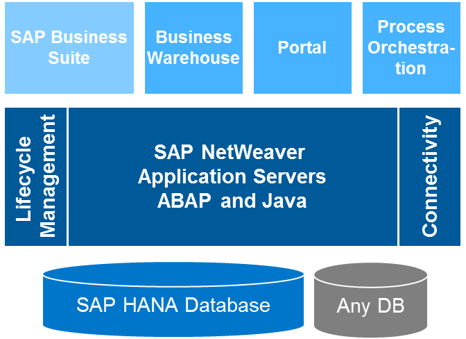

UNIT 01 : SAP ERP History 및 Landscape
✔️ 학습목표
☑️ SAP ERP의 역사에 대해 이해할 수 있습니다.
☑️ SAP GUI를 통해 SAP System에 등록하고 로그인하는 방법을 이해할 수 있습니다.
☑️ SAP NetWeaver에 대해 이해할 수 있습니다.
☑️ SAP Application System Layer에 대해 이해할 수 있습니다.
✔️ 구성
Lesson 01 : SAP ERP
Lesson 02 : SAP ERP 역사
Lesson 03 : SAP NetWeaver
Lesson 04 : SAP Application System Layer
Lesson 01 : SAP ERP
☑️ 학습목표
SAP ERP에 대해 이해할 수 있습니다.
SAP는 한 회사의 이름이자 ERP 제품의 이름입니다. SAP라는 이름은 현재 ERP 시스템 이름의 대명사라 불려도 전혀 이상하지 않을 만큼 전세계의 많은 기업에서 자사의 자원을 운영하기 위해 사용되어지고 있습니다. 일반적으로 SAP ERP System은 다양한 기능 영역(Functional Area)로 구성되어져 있습니다. 영업 판매와 관련된 SD(Sales Distribution), 생산 계획과 관련된 PP(Product Planning), 재무와 연계된 FI(Finance Accounting) 등 회사를 운영하기 위한 기본적인 Functional Area로 구성되어져 있습니다.
ABAP은 SAP System에서 사용되는 전용 Language입니다. SAP의대부분 System이 해당 Language를 통해 구현되어 졌으며, SAP 고객이 자사의 SAP ERP System을 Enhance하거나 Customizing하기 위해서 해당 Language를 통해 처리할 수 있습니다. 물론, SAP System 중에는 SAP ABAP Language를 사용하지 않는 System들도 존재합니다. 예를들면 SAP Business One 또는 SAP Ariba 제품 등이 해당합니다.
Lesson 02 : SAP ERP 역사
☑️ 학습목표
SAP ERP 역사에 대해 이해할 수 있습니다.
수십년을 거쳐 기술의 발전과 Hardware 비용의 절감이 SAP ERP System에 많은 변화를 이끌어 왔습니다. 1972년 IBM 직원 5명이 설립한 회사가 SAP입니다. 그들은 최초 버전 SAP R/1이라는 System을 개발하였습니다. 여기서 R은 Realtime을 의미합니다. 다음 버전으로 1979년 SAP R/2 Mainframe 형태로 세상에 나왔습니다.
세상의 IT 기술이 급변하게 성장 및 발전하면서 Client Server 환경으로 이동되어지는 상황에서, 마침내 1990년 현재 SAP ERP Architecture 근간인 SAP R/3가 탄생하였습니다.
2004년 처음으로 SAP NetWeaver 버전이 발표되었습니다. SAP NetWeaver는 SAP ERP System이 구동할 수 있는 Platform이라고 생각하면 됩니다. 해당 Platform에는 SAP ERP 뿐만 아니라 다른 Product도 구동될 수 있는 하나의 단일화된 Platform을 구축하게 되었습니다.
마지막으로 SAP ECC(ERP Central Component) 6.0이 2005년에 처음으로 Release 되었고, 해당 이름 대신 심플하게 SAP ERP라고 부르기도 합니다. SAP ECC 6.0 기반에 기능 개선 및 추가 기능에 관련된 Package가 지속적으로 제공되어 지며, 이를 EHP(Enhancement Package)라고 부릅니다.
Lesson 03 : SAP NetWeaver
☑️ 학습목표
SAP NetWeaver에 대해 이해할 수 있습니다.
SAP NetWeaver는 기업에서 회사를 운영하기 위해 구현(사용)할 수 있는 SAP에서 제공하는 중요한 기능적 역할이라고 생각하면 됩니다.
Database Layer(SAP HANA, Oracle, Sysbase 등)를 기반으로 기업의 업무를 지원하기 위해 가장 기본적인 Platform인 SAP NetWeaver Application Server가 존재합니다. SAP NetWeaver Application Server는 개인용 PC에서 각종 Application(MS Office, 아래한글, 포토샵 등)이 동작하기 위한 운영체제가 존재하듯이, SAP Application(ERP, CRM, SCM 등)이 동작하기 위한 Operating System과 같은 역할을 수행하는 Platform이라고 생각하면 됩니다.
해당 Platform 기반에 SAP Business Suite, SAP Business Warehouse, SAP Business Enterprise Portal, SAP Process Orchestration 4개의 영역을 대표하는 각종 Product이 있다고 생각하면 됩니다. SAP Business Suite에는 SAP의 가장 기본적인 제품 SAP ERP 및 고객관리 SAP CRM, 제품리사이클관리를 위한 SAP PLM등의 제품들이 존재합니다.
{kind=link}

Lesson 04 : SAP Application System Layer
☑️ 학습목표
SAP Application Layer에 대해 이해할 수 있습니다.
SAP 각 Application(SAP ERP, SAP CRM, SAP BW등)는 3 Tier 환경으로 구성되어집니다.
Database Layer, Application Server Layer 그리고 Presentation Layer 로 구성되어 집니다.
Database Layer는 하나의 Application System 구성도에 있어 오직 1개만 존재합니다. SAP Application은 Database System에 독립적이므로, Oracle, MS SQL, Sybase 등 어떠한 Database Vendor 제품을 사용해도 무관합니다. 하지만 SAP에서는 2025년부터(2027년 유예) SAP 전용 In-Memory Database인 SAP HANA만 지원한다고 공식 발표한 상태입니다.
Application Server Layer는 SAP Program이 동작하는 곳입니다. 하나로 구성되어질 수도 있고, 회사의 규모, 사용자의 수에 따라 언제든지 증설(물리적으로 여러 개로 구성)이 가능합니다.
Presentation Layer는 사용자가 SAP System에 접속하여 업무를 처리하는 화면으로 SAP GUI가 될 수 있습니다. SAP GUI는 Window, Java 그리고 HTML용 종류가 존재합니다. 보통 MS Window 환경에서 업무를 처리하므로, 우리나라 기업에서는 SAP GUI for Window를 주로 사용합니다. 요즘은 Browser 기반에서 처리하는 업무도 상당히 많으므로, Internet Brower도 Presentation Layer에 해당합니다.

UNIT 02 : SAP System Navigation
✔️ 학습목표
☑️ SAP GUI를 통해 SAP System에 등록하고 로그인하는 방법을 이해할 수 있습니다.
☑️ Transaction Code 및 자주 사용하는 T-Code를 Favorite 하는 방법을 이해할 수 있습니다.
☑️ SAP GUI 화면 요소들의 명칭 및 사용 목적을 이해할 수 있습니다.
☑️ SAP Instance와 Work Process에 대해 이해할 수 있습니다.
✔️ 구성
Lesson 01 : SAP System 등록 및 로그인
Lesson 02 : Transaction Code 및 Favorites
Lesson 03 : 화면 영역(요소)
Lesson 04 : SAP GUI 화면(session)
Lesson 05 : SAP Instance
Lesson 06 : Work Processes
Lesson 01 : SAP System 등록 및 로그인
☑️ 학습목표
SAP GUI에는 총 3가지 종류가 존재합니다. SAP GUI for Window, SAP GUI for Java 그리고 SAP GUI for HTML 입니다. Window 기반에서 가장 최적화되어 동작하는 SAP GUI for Window를 활용하여 SAP System에 접근(로그온)하는 방법에 대해 학습합니다.
SAP GUI를 설치한 후 해당 아이콘을 더블 클릭하여 SAP Logon Pad를 구동합니다. SAP GUI는 버전이 숫자형태로 증가되며, 현재 가장 최근 버전은 800 입니다.
상단의 신규 버튼을 클릭하여 접속할 System을 등록합니다.
설치된 SAP GUI의 SAP Logon Pad를 실행하여 접근할 SAP System을 등록합니다. SAP GUI 화면은 버전에 따라 일부 상이할 수 있고, 현재 사용하는 버전은 750입니다.
만약 사용자가 Window가 아닌 다른 환경. 예를 들어 Mac 환경을 사용하고 있다면 SAP GUI for Java를 설치하여 사용해야 합니다.

신규 시스템 엔트리 생성 화면이 나올 떄까지 다음 버튼을 클릭하여 이동한 후 접속할 SAP System의 정보를 입력합니다. SAP System은 SAP ERP가 될 수 있고, SAP CRM, SAP SCM등 기업에서 사용하는 System중 하나가 됩니다. Hardware 관점에서는 SAP ERP System 이라고 부르지만, Software 관점에서는 SAP ERP Application, SAP CRM Application, SAP SCM Application 이라고 부릅니다.
내역은 임의로 입력하며, 담당자로부터 받은 접속할 시스템의 IP 또는 Host Name을 어플리케이션 서버에 입력합니다. 인스턴스 번호, 시스템 ID 역시 담당자에게 받은 정보를 그대로 입력합니다.

입력 후 종료 버튼이 활성화될 때까지 계속 다음을 누른 후 최종 종료버튼을 클릭하여 등록합니다.

등록된 항목을 더블클릭 하여 로그온 화면으로 이동합니다. 로그온 화면에서는 본인의 사용자 ID, 해당 ID에 대한 패스워드를 입력 후 로그온을 합니다. 클라이언트는 기본적으로 제공되어진 값을 사용하며, 로그인 언어는 우선 영어(EN)로 입력합니다. 시스템 설정에 따라 초기 패스워드를 변경하라고 나올 수도 있고, 변경 없이 곧바로 로그인이 될 수도 있습니다.

로그인이 정상적으로 수행 되면, 다음과 같은 초기화면을 보게 됩니다. 좌측에는 업무를 수행하기 위한 메뉴가 나타납니다.

Lesson 02 : Transaction Code 및 Favorites
☑️ 학습목표
특정 업무를 실행하기 위한 Transaction Code에 대한 이해와 자주 사용하는 Transaction Code를 즐겨찾기에 등록하는 방법에 대해 학습합니다.
SAP System에서 하나의 Menu(단위 Activityh)를 실행하기 위해서는 해당 Menu Path를 기억하거나, 해당 Menu Path와 연결된 Transaction Code를 암기해야 합니다. Transaction Code는 하나의 메뉴를 실행하기 위한 단축 코드라고 생각하시면 됩니다.
SE16이라는 Transaction Code는 Data Brower를 실행하기 위한 Transaction Code입니다.
상단의 Command Field에 SE16을 입력 후 Enter와 함꼐 이동할 수 있습니다.


Menu Path를 통해서도 해당 메뉴를 실행할 수 있습니다. 상단의 Back버튼을 클릭 또는 Command Field에 /n 입력과 Enter를 통해 초기화면으로 이동합니다.
SAP Menu > Tools > ABAP Workbench > Overview > Data Browser를 더블 클릭하여 실행할 수 있습니다.

Data Brower가 SE16이라는 Transaction Code와 연결되어진 것을 확인하기 위해서는 다음 기능의 활성화가 필요합니다. Menu > Extra > Settings의 팝업 창에서 Display Technical Names 을 체크 후 확인 버튼을 클릭하고 나면 Menu 이름과 Transaction Code가 함께 보입니다.


상단의 Favorites에 본인이 자주 사용하는 메뉴를 등록 후 사용할 수 있습니다.
Favorites 에서 마우스 우 클릭 후 Insert Transaction 메뉴를 통해 즐겨찾기(Favorites)에 등록합니다.

Lesson 03 : 화면 영역(요소)
☑️ 학습목표
사용자가 특정 업무를 처리하기 위해서는 하나의 창을 띄운 후 특정 Menu 또는 Transaction Code를 통해 업무를 처리합니다. 하나의 창은 크게 5개 영역으로 나누어져 있는데, 각 영역의 이름이 무엇인지, 각 영역에는 어떠한 요소들이 있는지에 대해 학습합니다.
화면의 각 요소(영역)은 End User가 Program과 대화를 할 수 있는 채널이기도 하지만, ABAP Consultant가 제어하거나 개발해야 하는 부분이기도 합니다. 맨 상단의 Menu Bar, Command Field와 함께 한 라인에 자리잡고 있는 System Toolbar, Title Bar, Application Toolbar, Screen 그리고 Status Bar로 구성되어져 있습니다.
Menu Bar, Title Bar, Application Toolbar는 현재 사용하는 메뉴에 따라 구성이 변하지만, System Toolbar와 Status Bar는 항상 고정된 형태입니다. 모든 메시지는 Status Bar에 나타나게 됩니다. 예를 들어 사용자가 화면의 특정 값을 변경 후 저장 버튼을 클릭하면 저장되었습니다. 라는 메시지가 Status Bar에 나타납니다.

Menu > System > User Profile > User Data를 통해 로그인 한 본인 ID에 대한 상세 정보 화면으로 이동합니다. 해당 화면에서 만약 Title 이라는 Label을 가진 Input 필드의 상세 정보가 필요하면 해당 Input Field에 Cursor를 위치한 후 F1 키를 누르면 F1 Help 창이 나타나며, 해당 팝업창으로부터 해당 Input 필드가 어떠한 의미를 갖는지 의미적인 상세정보(Semantic Information)를 확인할 수 있습니다.

F1 Help 창에서 Technical Information 버튼을 클릭하면 해당 Input 필드에 대한 기술적인 정보(Technical Information)를 확인할 수 있습니다. 관심을 가지고 살펴봐야할 정보는 다음과 같습니다.
Program Name : 현재 동작하고 있는 Program의 이름
Screen Number : 현재 보고 있는 Screen의 번호
Field Name : 현재 Screen 상의 F1을 실행한 Input 필드의 이름
Data Element : 현재 Input 필드가 참조하고 있는 Data Element 이름

특정 Input 필드에 어떠한 값을 넣어야 할지 유효한 대상 리스트를 제공 받기 위해서는 해당 Input 필드에서 F4 키를 누르면 입력 도움말 창이 나타납니다. 해당 입력 도움말 창에서 원하는 라인을 선택 후 더블 클릭을 하면 선택한 값이 해당 Input 필드에 복사되고, 팝업 화면은 닫힙니다.

모든 Program이 기본으로 무조건 가지는 메뉴는 System과 Help입니다. 어떠한 Menu를 통해 어떠한 업무화면(Transaction)으로 이동을 하던 해당 2개 메뉴는 항상 보입니다. 해당 2개 Menu는 업무와 관련없이 어떠한 상황에서도 실행할 수 있어야 하는 기능으로 구성되어져 있습니다. 예를 들면 새로운 창을 하나 띄우거나, 현재 띄워진 창을 닫거나 하는 기능도 해당 Menu에 포함되어져 있습니다.

Menu > System > Status 를 통해 현재 SAP System이 사용하고 있는 OS, Database 및 현재 System에 설치된 SAP 제품에 관련된 정보를 확인할 수 있습니다.

Lesson 04 : SAP GUI 화면(Session)
☑️ 학습목표
사용자가 특정 업무를 처리할 때 하나의 창에서 특정 업무에 관련된 Transaction을 실행하여 처리를 합니다. 하나의 창은 기술적으로 하나의 Session이라 부릅니다. 이러한 Session이 어떠한 의미를 갖는지에 대해 학습합니다.
현재 SAP System에 접속 후 띄워진 창을 Session이라고 합니다. 현재 Client 툴인 SAP GUI의 창은 SAP Server(SAP System)과 내부적으로 서로 통신을 위한 Connection을 맺고 있습니다. 이러한 Session을 SAP System 설정 값에 따라 최대 6개의 Session을 유지할수도 있습니다.
새로운 Session을 띄우기 위해서는 상단의 System Toolbar의 New GUI Window 버튼을 통해 띄울 수 있습니다.

Command Field에 로그온한 초기 화면이라면 SM04, 다른 Transaction이 현재 실행 중이라면, /nSM04를 입력과 Enter를 통하여 현재 SAP System에 로그온 된 모든 사용자의 리스트를 확인합니다. SM04 Transaction Code는 User Overview에 대한 T-Code로서 현재 로그인 사용자 리스트를 확인할 수 있습니다.

현재 USer Overview Transaction이 동작하고 있는 화면의 Command Field에 /n을 입력하고 Enter를 수행한다면 현재 Transaction은 종료되고 로그온 초기화면으로 이동합니다. /n은 현재 Transaction을 강제로 죽일 때 사용됩니다. 그 외에도 Command Field에 Transaction Code(T-Code)를 입력 시 조합하여 입력할 수 있는 기능이 있습니다.
/nABCD : 현재 동작하는 Transaction을 종료하고 ABCD Transaction을 실행함.
/oABCD : 현재 동작하는 Transaction을 그대로 유지하면서, 새로운 창(Session)을 띄우고 ABCD Transaction을 새로운 창에서 실행함.
/i : 현재 창(Session)을 종료함.
/nEND : 종료 여부 팝업과 함께 SAP System과 접속된 모든 Session을 종료함.
/nex : 종료 여부 팝업 없이, SAP System과 접속된 모든 Session을 종료함.
Lesson 05 : SAP Instance
☑️ 학습목표
하나의 SAP System을 설치 시 하나 또는 여러 개의 SAP Instance로 구성할 수 있습니다. 어떠한 경우에 하나로 구성하고, 어떠한 경우에는 여러 개로 구성하는지 또한 Instance가 무엇인지에 대해 학습합니다.
SAP System의 Landscape는 Presentation Layer를 담당하는 SAP GUI, Application Server Layer를 담당하는 SAP Application Server 그리고, Persistency Layer인 Database로 구성되어져 있습니다.
SAP GUI는 각 사용자별 개인 PC에 설치하여 사용하지만, SAP Application Server는 가장 중요한 요소 중 하나인 동시 사용자 수 등으로 인하여 하나의 물리적인 Server로 구성할 수도 있고, 여러 개의 물리적인 Server를 통하여 하나의 SAP System을 구성할 수도 있습니다.
이렇게 여러 개 각각의 물리적인 Server를 Instance라고 부릅니다. 즉 회사의 규모에 따라 Instance 하나로 SAP System을 구성할 수도 있고, 여러 개의 Instance를 통해 하나의 SAP System을 구성할 수도 있습니다.

T-Code : SM51 을 통해 현재 사용하고 있는 SAP System(예 : SAP ERP 또는 SAP CRM 등)의 Instance 개수를 확인합니다. 현재 캡쳐 상의 SAP System은 Instance 하나로 구성되어져 있는 상황입니다. 만약 물리적인 Server 2대를 이용하여, SAP System을 구성하였다면 Instance가 2개(2개의 List) 나타날 것입니다.

Instance가 꼭 독립적인 물리적 Server 하나 일 필요는 없지만, 보통은 물리적으로 분리하는 것이 바람직합니다. Instance를 여러 개로 구성한다는 것은 예를 들어 동시 접속자가 많은 경우 부하를 분산하기 위함 이므로, 물리적으로 분리하는 것이 좋습니다.
Lesson 06 : Work Processes
☑️ 학습목표
SAP Instance에는 다양한 Work Process가 존재합니다. 각 Work Process에는 어떠한 종류가 있고, 어떠한 역할을 수행하는지에 대해 학습합니다.
각 Instance에는 다양한 종류의 Work Process들이 존재합니다. 서로 다은 유형의 Work Process는 유형에 따라 작업하는 일이 다릅니다.
즉, Work Process는 유형에 따라 처리하는 일이 명확히 정해져 있습니다. T-Code : SM50 을 통하여 현재 본인이 로그인하고 있는 Instance의 Work Process 를 확인할 수 있습니다.

Work Process는 Dialog Work Process(DIA), Update WOrk Process 1(UPD), UPdate Work Process 2(UP2), Background Work Process(BTC), Spool Work Process(SPO), Enqueue Work Process(ENQ)로 구성되어져 있습니다.
DIA Work Process는 사용자 화면과 Business Logic에 관련된 부분을 처리 합니다. 즉, 사용자가 화면을 보면서 어떠한 업무를 진행하면, 해당 작업은 DIA Work Process가 처리해 주는 것입니다. 처리를 한다고 해서 한 사용자를 위해 계속 기다리는 것이 아니라, 본인이 처리해야할 일을 다 처리하고 다른 사용자가 사용할 수 있게끔 자동으로 반납되어 Waiting 상태로 됩니다.

Update Work Process 2종류(UPD, UP2)는 대량의 데이터베이스 처리(입력, 수정, 삭제)를 수행합니다. Light한 데이터베이스 처리는 Dialog Work Process가 처리해도 되지만, 대량의 데이터베이스 처리는 사용 목적 및 용도에 따라 Update Work Process가 처리해주는 것이 바람직합니다.

Background Work Process는 특정 업무를 특정 시간에 동작하도록 job을 설계하여, 사용자가 직접 화면을 보면서 처리하는 것이 아니라, System에 의해 특정 시간, 특정 일자에 특정 Program을 자동으로 실행되도록 설정할 수 있습니다. 알람 시계에 알람을 맞춰 특정 시간이 되면 벨이 울리도록 사용하듯이, 특정 시점에 Transaction이 실행되어 처리될 수 있도록 지원해주는 Work Process 종류 중 하나입니다.

Spool Work Process는 오직 Print에 관련된 업무만 처리하는 Work Process입니다. 사용자가 특정 화면에서 출력 버튼을 누르면, 모든 출력에 관련된 일을 담당하여 처리합니다.

Enque Work Process는 SM50에서는 보이지 않으나, Lock에 관련된 모든 업무를 처리 합니다. 예를 들면, HT-1000 이라는 제품의 이름이 Notebook이였는데, Laptop으로 변경하고자 하는 경우, 여러 사용자가 동시에 접근하여 수정하는 것을 막아주는 역할을 수행하는 것이 해당 Work Process입니다.
만약 A라는 사용자가 먼저 HT-1000 제품 이름을 수정 중인데, 다른 사용자 B가 동시에 수정을 하려고 수정 버튼을 누르면, 현재 해당 데이터는 A라는 사용자에 의해 처리 중입니다. 와 같이 메시지를 확인할 수 있는데, 이러한 처리를 담당해주는 Work Process가 Enqueue Work Process가 담당합니다.
다른 Work Process는 각 Instance 마다 존재하는데, Enqueue Work Process는 모든 Instance들 중에 단 한곳에만 존재합니다. 이유는 SAP System은 여러 Instance로 구성할 수 있지만, Database는 오직 하나만 존재할 수 있기에, 해당 Database에 대해 Lock을 잡고 Lock을 해제하는 일은 단 하나의 Enqueue Work Process가 처리해야 합니다.


T-Code : SM12 를 통해 현재 Enqueue Work Process가 Lock을 잡고 있는 자원을 확인할 수 있습니다. 해당 증상을 살펴보기 위해서 Session을 2개 열고, 첫번째 Session에서는 Menu > System > User Profile > User Data 를 통해 본인의 SAP ID를 수정하러 들어갑니다. 다른 하나의 Session에서는 T-Code : SM12 를 통해 현재 본인이 Lock을 잡고 있는 Entry를 확인할 수 있습니다.

UNIT 03 : SAP ABAP Repository 및 Workbench
✔️ 학습목표
☑️ Cross-Client 와 Client-Specific에 대해 이해할 수 있습니다.
☑️ ABAP Repository를 다양한 조건으로 검색할 수 있습니다.
☑️ ABAP Workbench의 종류에 대해 이해할 수 있습니다.
☑️ SAP System 구성도 및 이관을 위한 Change Request에 대해 이해할 수 있습니다.
✔️ 구성
Lesson 01 : Cross-Client 및 Client-specific
Lesson 02 : ABAP Repository
Lesson 03 : ABAP Workbench
Lesson 04 : SAP System 구성도 및 Change Request
Lesson 01 : Cross-Client 및 Client-specific
☑️ 학습목표
Cross-Client와 Client-Specific에 대한 정의를 이해하고, 각 정의에 해당하는 대상들이 어떠한 것이 있는지 학습합니다.
SAP System에 로그온 시 Client 정보를 입력하고 로그인합니다. Client는 쉽게 생각하면 하나의 회사라고 생각할 수 있습니다.
예를 들어, 글로벌 기업 ABC Company는 캠핑에 관련된 제품을 생산 판매하는 회사 A가 존재하며, 숙박 관련 사업을 운영하는 회사 B도 존재한다면, SAP System을 설치 후 Client 400은 A 회사를 위하여, Client 500은 B 회사를 위하여 사용할 수 있도록 설정할 수 있습니다.
만약, B라는 회사 직원은 로그인 시 당연히 Client를 500으로 하고 로그인해야 로그인이 되지, 400 Client를 선택하고 로그인하려고 하면 로그인이 안됩니다. 이렇게 Client에 종속적인 정보(예 : 사용자)를 Client-Specific하다고 합니다.

만약, A회사 IT직원이 고객을 등록하는 Program을 만들었다고 하면, 해당 Program은 비록 A 회사 직원이 만들었지만, B 회사에서도 사용할 수 있습니다. 이렇게 하나의 Client에서 생성된 Object가 다른 Client에서도 사용될 수 있다면 이는 Cross-Client라고 합니다. 즉, Program은 Cross-Client 대상입니다.

숙박업을 하는 B라는 회사에서 발생한 매출 데이터는 Cross-Client인지, Client-Specific인지 생각해보면 당연히 Client-Specific합니다. 해당 매출 데이터는 B회사에 발생한 매출 정보이지 A회사의 정보가 아니기 때문입니다. 보통 회사를 운영하면서 발생하는 데이터는 거의 Client-Specific한 정보입니다. 이러한 데이터를 Transaction Data라고 부릅니다.
SAP System을 운영하기 위해서 설정하는 정본은 특정 회사를 위한 정보가 아니라 SAP System을 운영하기 위한 정보이기에 Cross-Client 정보가 될 것입니다. 이러한 데이터를 System Data라고 부릅니다.
Lesson 02 : ABAP Repository
☑️ 학습목표
ABAP Consultant가 만든 Object. 예를 들어, Program, Table, View 등은 Repository에 담깁니다. 이러한 Repository에 대한 이해와 Repository 에 생성되어진 각각의 Object들을 다양한 조건으로 검색하는 방법에 대해 학습합니다.
ABAP 프로그래머가 생성하는 Program, Table, 함수(Function Module)등은 모두 Repository에 담깁니다. 모든 Program들이 하나의 Repository에 분류 없이 담긴다면 차후 관련된 Program들만 관리하는데 어려움이 따릅니다. 그러하기에 Repository를 Package라는 논리적인 공간으로 나눈 후 관련된 Objects들을 하나의 Package에 모아서 관리할 수 있습니다.
하나의 Package는 또 다른 Package들을 포함할 수 있으며, Package는 계층적인 구조를 구성할 수 있습니다. 하나의 Package에는 관련된 Program, Table, View, Function Module 등이 포함될 수 있습니다.

Repository Information System(SE84)를 통해 Repository에 담긴 다양한 Object를 다양한 조건으로 찾을 수 있습니다. 예를 들어 Table중에서 “SFLIGHT”로 시작하면서 해당 이름이 들어간 모든 Table들을 찾을 수 있습니다.
T.Code SE84에서 Table은 ABAP Dictionary 관련 Object이므로 ABAP Dictionary 폴더를 열어 Database Tables를 선택 후 Table 이름에 *SFLIGHT* 를 입력 후 실행버튼을 클릭하여 Table 이름 중 SFLIGHT 단어가 들어가는 모든 Table Object를 찾을 수 있습니다.
RIS를 통하여 Repository에 있는 많은 Object들을 다양한 조건 예를 들면 해당 Object를 만든 사용자 ID로 또는 해당 Object가 만들어진 생성일 기준 등으로 찾을 수 있습니다.

Lesson 03 : ABAP Workbench
☑️ 학습목표
SAP에서 BAP Consultant를 위한 통합 개발환경 Tool들의 집합인 ABAP Workbench를 제공합니다. Function Module을 만들기 위해서는 SE37, Program을 만들기 위해서는 SE38, Class를 생성하기 위해서는 SE24에서 작업을 할 수 있습니다. 이러한 개발 환경 Tool인 ABAP Workbench에 대해 학습합니다.
SAP Menu > Tools > ABAP Workbench 폴더 밑에 ABAP Workbench와 관련된 다양한 툴들이 존재합니다. Development 폴더 밑에 있는 메뉴들은 상당히 자주 사용되는 메뉴입니다. ABAP Dictionary(SE11), ABAP Editor(SE38), Function Builder(SE37), Class Builder(SE37), Class Builder(SE24) 는 암기해야 될 정도로 많이 사용되는 메뉴입니다.

- SE38: Program을 생성, 수정, 조회 또는 삭제하기 위한 ABAP Editor 툴 입니다.
- SE51: Program에서 사용되는 Screen을 생성, 수정, 조회 또는 삭제하기 위해서 사용되는 Screen Editor 툴 입니다.
- SE37: Program에서 사용되는 Function Module을 생성, 수정, 조회 또는 삭제하기 위해 사용되는 Function Builder 툴 입니다.
- SE24: Program에서 사용되는 Class를 생성, 수정, 조회 또는 삭제하기 위해 사용되는 Class Builder 툴 입니다.
- SE11: Table, View 또는 Data Element 등을 생성, 수정, 조회 또는 삭제하기 위해 사용되는 ABAP Dictionary 툴 입니다.
- SE80: 위의 각각의 T-Code를 통해 작업하지 않고, Program, Screen, Menu, Class, Table 및 Data Type 등 하나의 통합된 개발환경에서 생성 수정, 조회 또는 삭제할 수 있는 툴 입니다.

ABAP Workbench에서 상단 Program을 선택 후 “SAPBC_GLOBAL_SCUSTOM_CREATE” 입력 과 Enter를 통해 해당 Program에 대한 Source를 확인할 수 있습니다.
좌측에 해당 Program 구조가 나타나면 해당 Program명을 더블 클릭하여 우측에 관련 Program Source가 나타나게 할 수 있습니다.
각 Include문을 더블 클릭하여 해당 Include Source를 상세히 조회할 수도 있습니다.


상단의 Display Navigation Window 버튼을 클릭하여 현재 Source까지 어떠한 경로를 통해 왔는지를 확인할 수 있습니다.
SAPBC_GLOBAL_SCUSTOM_CREATE Program에서 10번째 라인을 더블 클릭하여 현재 Include BC_GLOBAL_SCUSTOM_CREATETOP에 와 있는 것을 확인할 수 있습니다.
하단부터 읽으면 조금 더 쉽게 이해할 수 있습니다. SAPBC_GLOBAL_SCUSTOM_CREATE 10번째 Source라인을 더블 클릭해서 현재 BC_GLOBAL_SCUSTOM_CREATETOP Include에 와 있는 것을 화인할 수 있습니다.
해당 Display Navigation Window 버튼을 다시 클릭하게 되면 사라지게 됩니다.
Back 버튼을 통해 BC_GLOBAL_SCUSTOM_CREATETOP Include를 호출한 전 화면으로 이동 가능합니다.

Display Superord. Object List 버튼을 클릭하여 해당 Program의 상위 요소로 이동할 수 있습니다. Program의 상위 요소는 Package입니다.

Lesson 04 : SAP System 구성도 및 Change Request
☑️ 학습목표
기업의 SAP System Landscape는 개발 System(DEV), 품질 System(QAS), 운영 System(PRD)로 구성되어집니다. 각 System에 대한 이해 및 개발 System에서 개발한 Repository Object를 품질 System, 운영 System에 전송하는 방법에 대해 학습합니다.
SAP System을 구축하는 기업은 보통 개발장비, 품질장비 그리고 운영장비 3단계로 구성합니다. 개발 장비(DEV)에서 구현한 Program을 최종 사용자(End User)가 사용하기 위해서는 품질장비(QAS)로 이관 후 해당 Program에 대해서 품질담당자가 테스트를 수행합니다.
테스트 시 프로그램 Naming Rule, 해당 Program의 Performance 등 여러 측면으로 테스트를 수행한 후 최종적으로 문제가 없는 경우 운영장비(PRD)로 이관을 하여, 최종 사용자가 해당 Program을 사용하게 됩니다. 만약 품질장비에서 테스트 중 문제가 발생하면, 해당 개발자에게 관련 피드백을 주어 개선 후 다시 품질장비(QAS)로 이관하도록 합니다.
SAP System은 이관의 단위로 Change Request 매커니즘을 사용합니다. Change Request는 Workbench Request와 Customizing Request로 나눠집니다. Workbench에서 생성하는 Object(Program, Table, VIew등)들은 Workbench Request에 포함되며, 특정 Client 설정과 관련된 정보는 Customizing Request에 포함되어 이관이 됩니다.
이관 단위인 Change Request를 먼저 생성하고, 해당 Request에 생성하는 Program을 포함시키는 방법도 가능하고, 반대로 Program을 만들면서 해당 시점에 Change Requjest를 생성할 수 있습니다. 물론, 전자가 조금 더 합리적인 방법입니다.

좌측 상단의 Create 버튼을 클릭하여 Change Request를 생성할 수 있습니다. 생성 시점에 Customizing Change Request인지 Workbench Change Request인지 유형을 선택해야 합니다.
Repository Object관련 사항은 Workbench Request에 해당합니다. Workbench Request를 선택 후 간단한 Short Descriptiono(예시: ABAP Study)을 임의로 입력 후 저장을 하면 관련 Change Request가 생성되어집니다.


앞으로 만드는 모든 Object들은 해당 Change Request에 포함시킨 후 해당 Project가 완료되는 시점에 해당 Change Request를 품질 System으로 이관하여 품질 테스트를 수행하고, 특이사항이 없는 경우 최종적으로 운영 System으로 이관하여, End User가 사용할 수 있도록 합니다. 이관을 할 수 있는 상태로 만드는 것은 ABAP Developer가 하지만, 품질 System, 운영 System으로 이관을 담당하는 역할은 BC(Basis Consultant)가 수행합니다.
만약, 이관을 필요치 않는 단순 테스트 용도의 Program을 개발한다면 해당 Program은 Change Request에 포함될 필요가 없는 Object입니다. 이관되지 않는 Program은 Local Object로 만들면 이관이 되지 않는 대상이 됩니다. Local Object로 만든다는 것은 Local Package에 포함시키겠다는 의미와 같습니다. T-Code SE38에서 Z<OWN ID>_TEST 이름으로 Program을 생성합니다.


만약 Local Object 버튼을 클릭하지 않고, Package 이름 입력과 저장버튼을 클릭한다면, 해당 Program을 어떠한 Change Request에 포함시킬지 물어보며, 관련된 Change Request를 선택하면 됩니다.

ABAP Program 문법을 배우기 전에 화면에 간단히 ‘Hello ABAP’이라는 문자열을 출력하기 위해서는 WRITE 문을 사용하여 출력합니다. ABAP Language의 문법의 기본 중 하나는 모든 문장의 끝은 Period(.)로 끝나야 합니다.
WRITE 'Hello ABAP'.입력 후 상단의 SAVE , Syntax Check 그리고 Activate 단계를 거쳐 Program을 테스트합니다. Syntax Check 도중 에러가 발생한다면, 반드시 해결하고 Activate를 하여야 합니다. Activate가 정상적으로 완료가 되면 Program 이름 옆에 상태가 Activate로 변경됩니다.

해당 Program이 최종적으로 Activate 되었다면, 상단의 Direct Processing 버튼을 클릭하여 만든 Program을 테스트할 수 있습니다. 결과 화면을 본 후 Back 버튼을 클릭하여 Program Source화면으로 다시 이동합니다.

Local Package의 이름은 $TMP 입니다. Local Package 내용을 살펴보기 위해서 T-Code SE80을 통해 Local Objects를 선택해도 되고, Package를 선택 후 $TMP 라고 입력해도 됩니다. Local Pacakge(Local Objects)를 제외한 다른 Package에 포함되는 모든 Object들은 반드시 Change Request에 포함되어 집니다.


SE09를 통해 하나의 Change Request를 살펴보면 Change Request가 트리 구조 형태로 구성된 것을 확인할 수 있습니다. 하나의 Change Request는 여러 개의 Task를 포함할 수 있습니다.
Task는 사용자별로 하나씩 할당되어집니다. 만약 하나의 큰 Project를 수행 중인데, 해당 Project의 Leader 1명, Member가 5명이라면 Project에 해당하는 하나의 Change Request에는 6개의 Task가 할당되어집니다. 즉 Leader가 Change Request를 생성할 때 User를 등록할 수 있는데, 본인과 등록한 User 수만 큼 자동으로 Task가 생성되어집니다.

SAP Landscape 와 CTS
UNIT 04 : Development ABAP Program 1
✔️ 학습목표
☑️ ABAP Workbench를 통해 Package를 생성할 수 있습니다.
☑️ Selection Screen을 생성하기 위한 PARAMETERS 문법을 이해할 수 있습니다.
☑️ Transaction Code를 생성하는 방법에 대해 이해할 수 있습니다.
☑️ 다양한 DATA Type의 종류에 대해 이해할 수 있습니다.
☑️ Constant와 Variable을 선언하기 위한 다양한 문법에 대해 이해할 수 있습니다.
☑️ 다국어 처리를 위한 방법에 대해 이해할 수 있습니다.
✔️ 구성
Lesson 01 : Package 생성
Lesson 02 : ABAP Program 개발 및 변수 선언
Lesson 03 : PARAMETERS 활용하기
Lesson 04 : Program에 Transaction Code 생성
Lesson 05 : 다양한 유형의 Variables
Lesson 06 : Local Data Type 정의
Lesson 07 : Complete Data Type과 Incomplete Data Type
Lesson 08 : Local Data Type과 Global Data Type
Lesson 09 : Constant(상수)와 Variable(변수) 선언
Lesson 10 : Text Symbols을 활용한 다국어 처리
Lesson 01 : Package 생성
☑️ 학습목표
Program, Table 등 서로 관련된 Object들을 하나의 논리적인 공간에서 관리하기 위해서 생성하는 공간을 Package라고 합니다. Package를 생성하는 방법에 대해 학습합니다.
관련된 Object들을 하나의 논리적 공간에 관리할 수 있는데, 해당 논리적인 공간에 해당하는 곳이 Package 입니다. 물리적인 하나으 ㅣRepository를 여러 개의 논리적인 Package라는 요소로 구별하여 관리할 수 있습니다. 또한, Package는 하위에 다른 Package를 포함할 수 있습니다. SE80의 리스트박스에서 Package를 선택 후 Z<Own ID>_PKG라고 입력 후 Enter와 함께 생성합니다. Short Description 만 입력 후 나머지 사항을 Default 값으로 그대로 둡니다.

Package를 생성한다는 것은 이관과 관련된 사항(Local Package는 이관 비대상)이기에 해당 Package 생성에대한 정보를 포함할 Change Request를 물어봅니다. 하단의Own Requests를 클릭하여, 본인이 Task에 할당되어진 Change Request를 찾아 선택해줍니다.
만약, 본인이 2개의 Project를 동시에 진행 중이라고 가정하면 Own Request 버튼 클릭 시 2 개 중 선택할 수 있는 화면이 제공됩니다.

Lesson 02 : ABAP Program 개발 및 변수 선언
☑️ 학습목표
ABAP Program을 ABAP Workbench를 통해 생성하는 방법에 대해 학습합니다.
앞에서는 SE38(ABAP Editor)을 통해 Program을 만들어 보았습니다. SAP에는 Program의 종류가 크게 2가지가 존재하는데, 하나는 Report Program(Executable Program, Type 1 Program)이며, 다른 하나는 Module Pool Program(Online Program, Screen Program, Type M Program)입니다.
SAP에서 제공된 Program을 제외하고, 고객의 필요로 의해 만드는 Reprot Program은 반드시 Z or Y 로 시작하여야 하며, Module Pool Program은 SAPMZ 또는 SAPMY로 시작하여야 합니다.
SE80(ABAP Workbench)를 통해 Z(Own ID>_MY_AGE 이름을 넣고 Enter를 수행하면 Program 을 생성하는 팝업 화면이 나타납니다. Create with TOP Include는 체크하지 않고 확인 버튼을 클릭합니다. TOP Include는 Program 을 조금 더 구조화되게 구현하고자 할 때 사용됩니다. 예를 들어, 전역 변수, 상수 등은 해당 TOP Include에 정의하여 사용합니다.
물론, TOP Include를 만들지 않는다고, 전역 변수, 상수를 정의하지 못하는 것은 아닙니다.

생성 중 Program Title은 임의(제안: My Age)로 입력하며, Type은 Executable Program으로 선택합니다. 입력한 Program Title은 차후 변경할 수도 있지만, 해당 내용은 Program 실행 시 Title Bar 영역에 나타납니다. 차후 Title Bar 내용을 변경하기 위해서는 Menu > Goto > Attribute를 통해 변경할 수 있습니다.

본인의 Change Request에 포함시켜 생성 후 추가한 것은 하나도 없기에 Syntax 에러가 발생할 일은 없습니다. 곧바로 Activate 버튼을 클릭하여 활성화시켜 줍니다. Activate 버튼은 내부적으로 SAVE + Syntax Check + Activate 3가지가 한번에 처리됩니다.
해당 Program에 생성, 삭제 및 수정사항들은 앞에서 할당한 Change Request에 모두 자동으로 기록이 됩니다.

본인의 나이를 저장할 수 있는 Variable를 선언합니다. 나이는 숫자이기에 Variable를 선언할 때 숫자형 Data Type을 사용하여 정의합니다. 많은 숫자형 Data Type이 존재하지만 여기서는 간단하게 i(Integer)를 사용하여 정의합니다. Variable 이름은 my_age이며 Type은 i로 정의합니다.
DATA my_age TYPE i.Variable을 정의하면서 초기값을 할당할 수도 있지만, 정의와 값 할당을 Logic을 분리하여 작성 후 출력합니다. 출력 시 사용하는 문법은 Write입니다. 해당 로직을 모두 구현 후 활성화 처리합니다. 만약 Syntax 에러가 발생했다면, 원인을 밝혀 해결 후 다시 Activate 처리를 한 후 실행(F8)을 통해 테스트를 진행합니다.
my_age = 30.
WRITE : my_age.
Program에 주석 처리하는 방법은 크게 2가지입니다. 한 라인 전체를 주석처리 하고 싶으면, 주석 처리하고자 하는 라인 맨 앞에 *(Asterisk) 표시를 합니다. 만약 한 라인 중간부터 주석처리를 수행하고 싶으면 “(Double Quotes)표시를 통해 주석처리 합니다.
만약 여러 라인을 동시에 주석처리 또는 주석처리를 해제하고 싶다면 해당 라인들을 선택 후 CTRL + > 또는 CTRL + < 키를 통해 처리할 수 있습니다.

WRITE문은 변수 하나 또는 문자열 하나를 출력할 떄 사용됩니다. 만약 하나의 WRITE문을 통해 문자열과 변수를 동시에 출력하고자 한다면 Chained Statement(:)를 사용하여 처리할 수 있습니다. Single Quotes(’) 사이에 내용은 문자열이 됩니다. 항상 Program을 수정한 후 Save, Syntax Check 그리고 Activate를 수행 후 테스트를 진행하는 것이 바람직합니다. 출력 결과를 보면 문자열(’Your age is’)과 30이라는 숫자 사이에 공간이 많이 있습니다. 그 이유는 Integer 타입이 가질 수 있는 숫자의 크기 때문입니다. 최대 음수 2,147,483,648 ~ didtn 2,147,483,647 범위 값을 가질 수 있고, 출력을 위해 총 10칸이 필요한 Type입니다. 그러하기에 10칸을 확보 후 30이라는 나이를 출력하였기 때문에 이러한 증상이 발생하는 것입니다.
WRITE : 'Your age is', my_age.
Lesson 03 : PARAMETERS 활용하기
☑️ 학습목표
PARAMETERS 문법은 사용자에게 값을 입력 받을 수 있는 화면을 생성해 주면서, 사용자가 입력한 값을 보관할 수 일ㅆ는 Variable이 만들어집니다. PARAMETERS 문법에 기본적인 기능 외에 다양한 옵션이 존재합니다. 화면과 Variable 선언을 동시에 처리하는 PARAMTERS에 대해 학습합니다.
Program은 보통 사용자로부터 어떠한 값을 입력 받아, 입력 받은 값을 기준으로 데이터를 취득, 처리 및 가공하여 사용자에게 원하는 결과를 보여주는 역할을 합니다.
예를 들어 화면에서 날짜를 입력 받아 해당 날짜가 생일인 모든 고객을 출력할 수 있습니다.
이렇게 화면에서 어떠한 값을 받기 위해서는 가장 기본적인 문법인 PARAMETERS를 활용하여 구현할 수 있습니다. 여기서는 사용자로부터 나이를 입력 받도록 기존 Program을 이용하여 구현 후 실행합니다.
PARAMETERS my_age TYPE i.
WRITE: 'Your age is', my_age.

파라미터를 통해 생성된 화면(Screen 1000)에서 입력한 값은 my_age라는 변수에 입력한 값이 자동으로 들어갑니다.
파라미터를 이용하여 만들어진 화면을 Selection Screen이라고 부릅니다. Selection Screen의 Input Field 앞에 Label은 파라미터를 정의할 때 사용한 이름이 그대로 나옵니다.
해당 Label을 조금 더 의미 있는 값으로 변경하기 위해 Menu > Goto > Text Elements로 이동하여 변경할 수 있습니다.
Text Element 역시도 하나의 Object이기에 반드시 Activate 시켜주어야 합니다. Text Element를 통해 다국어를 지원할 수 있습니다.

PARAMETERS를 이용해서 선언 시 회사마다 고유한 Naming Rule이 존재하지만, 보통의 경우 “P_”로 시작하는 경우가 많습니다. Naming Rule 에 따라 변경 후 Activate 그리고 테스트를 수행합니다.
PARAMETERS p_age TYPE i.
WRITE : 'Your age is', p_age.
사용자가 영어로 로그인 하면 “Please, Input your age”, 만약 한국어로 로그인 하면 “당신의 나이를 입력해주세요” 라고 Label이 나와야 합니다. 다국어 처리를 위해서는 Text Elements 화면에서 Menu > Goto > Translate을 통해 진행할 수 있습니다. 기본적으로 로그인한 언어가 Original Language에 나타나고 번역할 대상 언어가 Target Language입니다. Target Language에 KO(Korean)을 선택 후 번역을 진행합니다. Translation은 Activate은 없고, 단순히 번역 후 저장만 하면 됩니다.

특정 문법에 궁금한 점이 있으면 해당 Keyword(예: PARAMETERS)에 커서를 놓고 F1 키를 누르면 도움말 창이 구동합니다. 해당 도움말을 통해 부가적인 내용을 살펴볼 수 있습니다.

만약, 사용자가 Selection Screen에서 나이를 입력하지 않고는 출력이 되지 않게 하기 위해서는 해당 PARAMETERS를 필수 Input Field로 만들면 됩니다. 필수 Input Field로 만들기 위해서는 F1 도움말의 Screen options 링크 통해 확인할 수 있습니다. 다양한 Option들이 존재하며, 필수로 만들기 위한 Option은 OBLIGATORY입니다.

해당 Option을 Program에 추가한 후 실행하면 해당 Input Field가 필수 입력 형태로 모양이 변경된 것을 화인할 수 있고, 해당 Input Field에 값을 입력하지 않고는 출력문의 결과를 볼 수 없습니다. (Program의 출력까지 실행이 되지 않습니다.)
PARAMETERS p_age TYPE i OBLIGATORY.
Lesson 04 : Program에 Transaction Code 생성
☑️ 학습목표
사용자가 Command Field를 통해 특정 Program(Transaction)을 구동할 수 있도록 해당 Program에 대한 Transaction Code를 생성합니다. Transaction Code는 Z 또는 Y로 시작 되어야 합니다. 사용자는 복잡한 Program 이름은 몰라도 Menu를 통해 또는 Transaction Code를 통해 구동할 수 있습니다. 이러한 Transaction Code를 만드는 방법에 대해 학습합니다.
✔️ 생성되어진 Program 명에서 Mouse 오른쪽 클릭을 하여 Transaction Code를 생성합니다.
SE80 화면의 좌측 Panel에서 Program 이름을 선택 후 마우스 우 클릭을 통해 Transaction Code를 생성합니다. (Context Menu > Create > Transaction)
Transaction Code에는 여러 종류가 존재하며, Report Program을 위한 Transaction Code와 Module Pool(Dialog) Program을 위한 Transaction COde가 분리되어져 있습니다. 현재 Report Program을 위한 Transaction Code이기에 “Program and selection screen”을 선택 후 생성합니다.

SAP GUI에는 총 3가지 종류( SAP GUI for HTML, SAP GUI for Java, SAP GUI for Windows) 가 있는데 각 GUI에서 모두 원활히 동작할 수 있도록 GUI support 영역에서 모두 선택해줍니다. Program 관련 Input Field에는 해당 Transaction Code 실행 시 연결되어질 Report Program 이름을 입력합니다. 주의할 점은 Program 이름 입력 시 오타가 발생하여도 에러가 발생하지 않으므로, 주의 깊게 입력해야 합니다. Transaction Code Object는 Activate는 없고, 단순히 저장만 하면 곧바로 사용할 수 있습니다.

Command Field에 해당 T-Code를 입력하여 관련 Program을 호출할 수 있습니다.

Lesson 05 : 다양한 유형의 Variables
☑️ 학습목표
일반 Program 세계에서는 변수를 즉 Variable이라고 합니다. 하지만 SAP ABAP 영역에서는 Variable이라고도 하지만 Data Object라고도 부릅니다. 다양한 방법으로 Data Object를 선언하는 방법에 대해 학습합니다.
DATA라는 Keyword를 사용하여 Variable(Data Object)를 선언할 수 있습니다. Data Type과 Data Object는 구별해야 합니다. Data Type은 Data Object를 만들기 위한 틀이라고 생각하면 됩니다. 예를 들어 팔찌를 만드는 틀은 우리가 손목에 찰 수는 없지만, 해당 팔찌틀을 통해 만들어진 팔찌는 우리 손목에 착용할 수 잇습니다. 또한 해당 틀을 통해서 팔찌는 무한대로 만들어 낼 수가 있습니다. 이러한 의미에서 Data Object(팔찌)도 Data Type(팔찌 틀)을 통해 만들어져야 사용할 수 있습니다. 아래의 문장에서 my_age는 Data Object이고 I는 Data Type입니다.
DATA my_age TYPE i.
DATA mon_age TYPE i.Data Object 선언도 Chained Statement(:)를 통해 한번에 선언할 수 있습니다.
DATA: my_age TYPEi,
mom_age TYPE i.모든 Program 언어에는 Program을 개발하기 위해 꼭 필요한 Data Type들을 정의해 놓았는데, 이를 Predefined Data Type이라고 합니다. 물론, SAP ABAP 언어에도 Predefined Data Type이 존재합니다. Data Type i는 4 Bytes 크기를 가지며, 음수와 양수의 정수를 가질 수 있는 Type 입니다. Predefined Data Type의 조합을 가지고 새로운 유형의 Data Type을 정의한다면 이는 User Defined Data Type이라고 합니다.
표: ABAP Predefined Data Type
| Type | Length | Default Length | Description |
|---|---|---|---|
| I | 4 byte | Numeric Type | |
| INT8 | 8 byte | Numeric Type | |
| P | 1 to 16 bytes | 8 bytes | Numeric Type |
| C | 1 to 262.143 characters | Character-Like Type | |
| N | 1 to 262.143 characters | Numeric-Character Like Type | |
| D | 8 Characters | Only for Date | |
| T | 6 characters | Only for Time |
사람의 나이를 저장할 Data Object를 만든다면 Data TYPE i 또는 INT8로 정의해도 되지만, 사람의 수명은 길어봐야 130살 정도입니다. 숫자 3자리면 충분합니다. 그러하기에 다음과 같이 Data Object를 정의하면 최대 3자리의 정수형 숫자만 가질 수 있는 Data Object가 만들어 집니다.
DATA my_age TYPE n LENGTH 3.특정 날짜 또는 시간을 보관할 Variable이 필요하다면 다음과 같이 정의할 수 있습니다.
DATA somday TYPE d.
DATA somtime TYPE t.특정 사람의 이름을 보관할 Variable이 필요하다면, 사람 이름이 최대 길어야 100자리면 충분할 겁니다.
DATA person_name TYPE c LENGTH 100.정수형과 소수점 자리수 사이즈를 임의로 정할 수 있는 Data Type은 P입니다.
전체 사이즈는 Length * 2 - 1 즉, 3 * 2 - 1 = 총 5자리 크기로 결정되며, 수수점 자리(DECIMALS)를 2자리로 결정하기에 정수형 자리는 자동으로 3자리로 결정되어, 정수형 3자리 소수점 2자리 크기의 Data Objecr가 정의됩니다.
DATA packed_value TYPE p LENGTH 3 DECIMALS 2.사람의 나이는 음수는 존재하지 않으므로, Type N으로 Length는 3으로 Variable을 정의할 수 있습니다. 어머니의 나이를 입력 받는 화면을 PRARAMETERS로 추가합니다. Data Type에 의해 Selection Screen의 Input Field 크기가 결정되는 것을 확인할 수 있습니다. 출력 후 다음 줄로 출력하기 위해서 NEW-LINE 문법을 활용합니다.
PARAMETERS p_age TYPE i OBLIGATORY.
PARAMETERS p_mon TYPE n LENGTH 3 OBLIGATORY.
WRITE: 'Your age is', p_age.
NEW-LINE.
WRITE: 'Mom age is', p_mon.

NEW-LINE.
WRITE: 'Mom age is', p_mom.또한 TYPE N은 자리 수만큼 앞에 0을 채우고 출력합니다. 이를 제거하기 위해서는 WRITE문 Option 중 NO-ZERO를 사용할 수 있습니다.
위의 2문장은 하나의 문장으로 변경할 수 있습니다. NEW-LINE에 해당하는 “/” 기호를 이용하여 처리할 수 있습니다.
WRITE: / 'Mom age is', p_mom.
또는
WRITE: / 'Mom age is', p_mom NO-ZERO.
Lesson 06 : Local Data Type 정의
☑️ 학습목표
특정 Program에서 빈번하게 사용되는 Data Type을 Predefined Data Type을 활용하여 정의하고 사용하는 방법에 대해 학습합니다.
나의 나이, 어머니 나이 등 사람의 나이는 정수형 3자리 형태의 Variable이면 충분하며, 만약 Program 상에서 나이와 관련된 Variable이 여러 개 필요하다면 Local Data Type “ty_age”를 정의하고 사용하는 것이 바람직합니다. 만약 차후 의학기술으 ㅣ발달로 사람이 1000년 이상 살 수 있다면, TYPES 정의부만 LENGTH를 4로 변경하면 해당 Program내의 모든 나이와 관련된 Variable은 모두 적용되기 때문입니다.
TYPES ty_age TYPE N LENGTH 3.
PARAMETERS p_age TYPE ty_age.
PARAMETERS p_mom TYPE ty_age.
Data Type
프로그램에서 사용할 수 었는 데이터의 타입을 정의한다.
TYPES dtype [TYPE type|LIKE sflight]ABAP 프로그램에서 사용하게 되는 변수의 타입을 정의하기 위해서 사용된다.
Data Type 측면에서 ABAP 프로그램의 특징은 ABAP Dictionary의 타입을 프로그램에
서 참고하여 사용할 수 있다는 것이며, 쉽게 설명해서 테이블 구조를 그대로 변수로 사용
할 수 었는 것을 의미한다. 이것은 개발자가 편리하게 프로그래밍할 수 있도록 도와 준다.
1) Data Variable
Data Type을 참고하여 값을 저장할 수 있는 변수이다.
DATA var [TYPE type | LIKE sflight]기술적인 표현으로, Data 변수는 프로그램의 실행 시점에 메모리를 차지하는 데이터 변수를 의미한다.
2) ABAP Dictionary의 Type을 이용하여 변수 선언
ABAP Dictionary(Table, Structure, Data Element 등)는 모든 프로그램에서 선언하여 사용할 수 있다.

DATA 구문
데이터 변수를 선언할 때 사용하는 구문. 변수명은 언더라인(_)기호를 포함하여 30자까지 가능.
1) Type type
데이터 변수의 타입을 정의한다.
DATA : gv_num TYPE i.콜론(:) 기호는 동일한 명령어를 쉼표 , 로 구분하여 마침표 . 를 만날 때까지 실행하도록 한다. 명령어를 수행하고 동일한 기능을 여러 번 실행할 수 있도록 해준다. 예를 들어, 다음과 같이 : 기호를 이용하여 변수 2개를 한번에 선언할 수 있다.

2) Like
앞에서 생성한 Data 변수인 gv_num1과 동일한 타입의 변수를 선언할 때 사용된다. 타입이 있는 모든 데이터 변수(Field, Parameter, Structure, 시스템 변수…)를 사용할 수 있다.
DATA : gv_num2 like gv_num13) Value
모든 데이터 타입은 Initial Value가 존재한다. DATA 구문을 사용할 떄 VALUE 옵션을 사용하면 초기값을 설정할 수 있다.
DATA : gv_num TYPE i VALUE 123,
gv_flag VALUE 'X',
gv_val VALUE IS INITIAL,
gv_idx LIKE sy-tabix value 45.※ ABAP 기본 문법
- ABAP 프로그램의 한 문장은 마침표 기호
.로 마무리 한다.WRITE gv_val.
- 프로그램 기능을 설명하는 주석은 다음 2가지가 존재한다.
*기호는 한 라인 전체를 주석처리한다. ( 단축키:Ctrl+,)* This line is comment
"기호는 뒷부분의 문자열을 주석 처리한다.WRITE gv_val. "Part of line is comment.
- 문자열은
' '기호로 처리한다.gv_val = 'Easy ABAP'.
- 명령어는 공백(SPACE)를 두고 처리한다.
gv_val='Easy ABAP'. "=> X gv_val = 'Easy ABAP'. "=> O
Lesson 07 : Complete Data Type과 Incomplete Data Type
☑️ 학습목표
Data Type은 기술적으로 Complete Data Type과 Incomplete Data Type으로 구별할 수 있습니다. Complete Data Type은 해당 Type을 이용한 Variable을 정의하면 해당 Variable 크기가 자동으로 결정되어지는 Type이며, Incomplete Data Type은 Variable 정의 시 사이즈를 결정해주어야 크기가 결정되어지는 Data Type입니다. 이러한 2가지 종류의 Data Type에 대해 학습합니다.
DATA today TYPE d.D Type은 날짜를 위한 Type이며, 자동으로 8자리로 결정되어집니다. 즉 Complete Data Type입니다.
DATA my_name TYPE c LENGTH 30.C Type은 LENGTH라는 Keyword를 통해 사이즈가 30자리로 결정되어 졌습니다. 즉 Incomplete Data Type 입니다. 만약 DATA my_name TYPE c. 라고 생성하면서 LENGTH를 생략하게 되면 자동으로 LENGTH는 1이 됩니다.
Incomplete Data Type을 이용하여 변수를 선언하는 방법은 2가지 방법이 있습니다.
DATA my_name TYPE c LENGTH 30.
DATA my_name(30) TYPE C.2가지 방법 모두 가능하고, 프로그래머의 기호에 따라 다르지만 전자를 사용하는 것이 조금 더 바람직합니다.
Lesson 08 : Local Data Type과 Global Data Type
☑️ 학습목표
Local Data Type은 정의가 되면 정의한 Program안에서만 사용할 수 있는 Data Type을 의미합니다. 반대로 Global Data Type은 한번 정의가 되면 모든 Program에서 사용할 수 있는 Data Type입니다. 모든 Program들에서 빈번히 사용되는 Data Type은 Global Data Type으로 정의하고 사용하는 것이 바람직합니다. Local Data Type과 Global Data Type의 차이점에 대해 학습합니다.
Local Data Type은 특정 Program에서 필요로 의해서 정의한 Data Type이며, 해당 Program안에서만 유효합니다. 앞에서 정의한 ty_age라는 타입은 Local Data Type으로 다른 Program에서는 사용할 수 없습니다. 즉, 해당 Program 안에서만 사용 가능합니다.
그렇다면, 여러 Program에서 함꼐 사용할 수 있는 Type은 Global Data Type으로 정의가 되어져 있어야 하고, ABAP Dictionary에 정의되어져 있어야만 Global Data Type이 될 수 있습니다. airline_code라는 Variable을 s_carr_id Type을 참조하여 생성하면 과연 해당 변수는 어떠한 Type이며 크기는 몇일까요? 심지어 S_carr_id 라는 Type은 우리가 정의한 적도 없습니다.
DATA airline_code TYPE s_carri_id.예를들어, 항공사 코드를 모든 Program에서 동일한 Type을 사용하기를 원한다면 s_carr_id 라는 Global Data Type을 누군가 정의하고 함께 사용할 수 있습니다. 여기서 누군가는 SAP가 될 수도 있고, SAP 시스템을 사용하는 고객사가 될 수도 있습니다.
SE11을 통해 해당 Data Type 이름을 입력 후 상세 내용을 조회할 수 있습니다. s_carr_id는 CHAR 3자리 형태의 Global Data Type 입니다. 이렇게 Predefined Data Type을 활용하여 정의된 Global Data Type을 Data Element라고 부릅니다.

Global Data Type은 SAP에서 사전에 정의되어 제공되어지는 것도 있으며, 고객의 필요로 의해서 생성하여 사용할 수도 있습니다.
Lesson 09 : Constant(상수)와 Variable(변수)선언
☑️ 학습목표
Constant는 일종의 Variable이나 선언과 동시에 값이 결정되어지고, 중간에 값이 절대 변경될 수 없는 특수한 Variable입니다. Constant를 정의하는 방법과 Variable을 정의하는 방법에 대해 학습합니다.
만약 Program 내에서 PI 값 ‘3.14’ 라는 값을 가지는 Variable이 필요하다면 해당 값은 변경되어서는 안됩니다. 이러한 경우에 값을 가져야 하니 Variable로 정의해야 하나 값이 절대로 변경되지 않을 것을 보장받기 위해 Constant를 이용하여 정의합니다. 상수를 정의할때 보통 Naming Rule이 “C_”로 시작하는 것이 일반적입니다.
CONSTANTS c_pi TYPE p LENGTH 3 DECIMALS 2 VALUE '3.14'.DATA 라는 Keyword를 통해 Variable를 정의할 때 TYPE 뒤에 Local Data Tyhpe이나 Global Data Type을 이용하여 정의할 수 있습니다. 또한 LIKE 라는 Keyword를 통해 Variable을 정의할 수도 있습니다. 단, LIKE 뒤에는 Local Data Type과 Global Data Type이 아닌 앞에 정의되어진 Variable 이름이 옵니다. LIKE Keyword는 다른 Variable을 참조해 동일하게 생긴 Variable을 정의할 때 사용됩니다. 단 참조하는 Vairable이 가지고 있던 값은 고려하지 않습니다. LIKE 뒤에 Data Type이 오게 되면 Syntax 에러가 발생합니다.
TYPES ty_age TYPE n LENGTH 3.
DATA my_age TYPE ty_age.
DATA mom_age LIKE my_age.Lesson 10 : Text Symbols을 활용한 다국어 처리
☑️ 학습목표
WRITE문을 이용하여 문자열을 출력하게 되면, 해당 문자열은 사용자 로그인 언어를 고려하지 않고, 항상 동일한 문자열만 출력하게 됩니다. 로그인한 언어에 맞는 문자열이 나오도록 지원하는 Text Symbol에 대해 학습합니다.
WRITE문을 이용하여 문자열을 출력하게 되면 사용자의 로그인 언어를 고려하지 않고, 항상 동일한 문자열만 출력하게 됩니다. 다국어를 지원하는 Program을 구현하기 위해서는 Text Symbol을 활용하여야 합니다.
WRITE:/ 'Your age is', p_age.
WRITE:/ 'Mom age is', p_mom.Selection Screen에서 입력한 본인과 어머니의 나이를 출력하는 문장을 Text Symbol을 이용하여 다국어가 지원되도록 처리합니다. Menu > GoTo > Text Elements 메뉴를 통해 Text Symbol을 정의하고 Activate처리를 합니다.

Text Symbol을 “001”, “002” 와 같이 정의하게 되면 사용할 때는 TEXT-001, TEXT-002 와 같이 사용합니다. 꼭 “001”, “002” 와 같이 일련 번호를 사용하지 않고, 3자리 약자(TEXT-MOM)로 정의해도 됩니다.
WRITE:/ TEXT-001, p_age.
WRITE:/ TEXT-002, p_mom.Text Symbol을 사용하는 구문을 보면 WRITE:/ ‘Your age is”(001), p_age. 이렇게 사용될 수 있습니다. 이는 TEXT-001을 사용하여 다국어를 처리하지만, 만약 사용자가 Text Symbol “001”을 번역하지 않아, 출력할 내용이 없는 경우 Default 값으로 “Your age is” 를 출력하겠다는 의미입니다.
Text Symbol을 Menu Path를 통해 정의하고, 사용하여도 되지만, 먼저 사용하는 로직을 구현 후 해당 Text Symbol을 더블 클릭하면 정의하는 화면으로 이동이 됩니다. 선 정의, 후 사용도 가능하고, 선 사용 로직 구현 후 더블클릭을 통해 후 정의도 가능합니다.
번역은 Menu > GoTo > Translation을 통해 수생합니다. 현재 상황에서 번역의 요소는 Seleciton Screen의 Label, Text Symbols 그리고 해당 Program의 Title 3가지 요소가 될 것 입니다.
UNIT 05 : Development ABAP Program 2
✔️ 학습목표
☑️ ABAP Program의 가장 기본적인 사칙 연산을 수행할 수 있습니다.
☑️ 선언한 Variable 을 초기화하는 방법 및 Debugging하는 방법에 대해 학습할 수 있습니다.
☑️ 다양한 Loop문에 대해 학습할 수 있습니다.
☑️ Status Bar에 출력되는 Message의 처리방법에 대해 학습할 수 있습니다.
☑️ Module화 기법 중의 하나인 Subroutine 방법에 대해 학습합니다.
✔️ 구성
Lesson 01 : 사칙 연산
Lesson 02 : Variable 초기화 연산
Lesson 03 : Loop 문
Lesson 04 : 다양한 유형의 Message
Lesson 05 : Debugging
Lesson 06 : Module화 기법 Subroutine
Lesson 07 : Subroutine Parameter 전송 유형
Lesson 08 : 고의적인 Call By Reference
Lesson 01 : 사칙 연산
☑️ 학습목표
모든 Program의 가장 기본 중 하나인 사칙 연산( +, -, *, / )에 대해 학습합니다.
ABAP Program의 가장 기본적인 사칙연산 문법에 대해 학습합니다. ABAP 뿐만 아니라 모든 Program 언어에서 +, -, *, / 연산은 필수 입니다. Type N의 3자리 Variable 2개를 선언하고, 사칙 연산의 결과를 보관할 Variable도 1개 선언합니다. 결과를 보관할 Variable은 나누기 연산의 경우 소수점이 발생할 수도 있고, 빼기 연산의 경우 음수도 발생할 수 있기에 양수, 음수가 가능한 정수형 5자리 소수점 2자리 형태로 정의합니다.
DATA gv_arg1 TYPE n LENGTH 3.
DATA gv_arg2 TYPE n LENGTH 3.
DATA result TYPE p LENGTH 4 DECIMALS 2.해당 Program에 아래의 내용을 하나씩 입력하여 테스트 합니다.
ABAP에서 가능한 기본 연산은 다음과 같습니다. 아래 각각의 연산 예제를 입력 후 테스트해 봅니다.
➕ (Addition)
——————————————————————————————————————————————————————————————————————————————————
gv_arg1 = 3.
gv_arg2 = 5.
result = gv_arg1 + gv_arg2.
WRITE: result. “ 테스트 결과는 8.00 입니.✖️ (Multiplication)
——————————————————————————————————————————————————————————————————————————————————
result = gv_arg1 * gv_arg2.
WRITE: result. “ 테스트 결과는 15.00 입니다.➖ (Subtraction)
——————————————————————————————————————————————————————————————————————————————————
result = gv_arg1 - gv_arg2.
WRITE: result. “ 테스트 결과는 2.00- 입니다.특이하게도 음수 부호가 뒤에 나옵니다. SAP ABAP에서는 음수 부호가 숫자 뒤에 나오는 것이 기본이며, 부가적인 처리를 통해 해당 기호를 앞으로 보내는 것도 가능합니다.
➗ (Division)
——————————————————————————————————————————————————————————————————————————————————
result = gv_arg1 / gv_arg2.
WRITE: result. “ 테스트 결과는 0.60 입니다.DIV (Integral division without remainder)
——————————————————————————————————————————————————————————————————————————————————
result = gv_arg1 DIV gv_arg2.
WRITE: result. “ 테스트 결과는 0.00 입니다.계산되어진 소수점 이하는 버리는 나누기 연산입니다.
MOD (Remainder after integral division)
——————————————————————————————————————————————————————————————————————————————————
result = gv_arg1 MOD gv_arg2.
WRITE: result. “ 테스트 결과는 3.00 입니다.나누기 후 나머지 값만 취득하는 연산입니다.
부가적으로 / (Division)시 정확히 나누어 떨어지지 않는 연산에 대해 조금 더 살펴보도록 하겠습니다.
gv_arg1 = 1.
gv_arg2 = 6.
result = gv_arg1 / gv_arg2.계산으로 나누게 되면 0.16666…. 이렇게 됩니다. 하지만, ABAP Program에서는 계산될 값을 가질 result라는 변수가 소수점 2자리를 가질 수 있기에 0.17이라는 값을 가지게 됩니다. 즉, 소수점 3자리 값이 반올림 되어 소수점 2자리에 반영됩니다.
Lesson 02 : Variable 초기화 연산
☑️ 학습목표
어떤 Variable의 값을 정의 후 사용되기 전의 상태로 만드는 것을 초기화라고 합니다.
Variable을 초기화 하는 연산에 대해 학습합니다.
Program에 Type C의 3자리 크기를 갖는 변수 A, 4자리 크기를 갖는 변수 B와 Integer Type인 C가 있고, A 변수는 “AB” 값, B 변수는 “ABC” 값, 그리고 C는 4라는 값을 가지고 있습니다.
DATA : A TYPE C LENGTH 3.
DATA : B TYPE C LENGTH 4.
DATA : C TYPE I.
A = 'AB'.
B = 'ABC'.
c = 4.
WRITE : / 'A : ', A,
/ 'B : ', B,
/ 'C : ', C.
※ interger의 경우 고정된 8자의 길이를 가지고 있기 때문에 앞의 공백7칸이 존재합니다.
C Type의 초기값은 Space입니다. 만약 2개의 Variable을 초기화 하고 싶다면 A라는 Variable은 Space 2개를 이용해서 초기화, B라는 Variable은 Space 3개를 이용해서 초기화, C라는 Variable은 0 값을 이용하여 수행하여야 합니다.
A = ' '. "Space 2개
B = ' '. "Space 3개
C = 0.
하지만 ABAP 언어에서는 CLEAR 라는 명령어를 통하여 모든 변수를 초기화할 수 있습니다.
CLEAR 명령어를 통해 초기화할 때 해당 변수의 Type을 고려하여 초기화 합니다. 예를 들어 C Type은 초기값이 Space이기에 크기만큼 Space로 설정해주고, I Type은 숫자형 이기 때문에, 0으로 설정해줍니다.
해당 Variable의 Type을 고려해야 값을 초기화할 때 사용하는 명령어가 CLEAR 입니다.
DATA : A TYPE C LENGTH 3.
DATA : B TYPE C LENGTH 4.
DATA : C TYPE I.
A = 'AB'.
B = 'ABC'.
c = 4.
CLEAR A.
WRITE : / 'A : ', A,
/ 'B : ', B,
/ 'C : ', C.
이와 유사한 개념으로 IF 절에도 초기화 값과 관련된 비교연산을 수행할 수 있습니다.
IF A = ' '. "Space 2개
ENDIF.
IF B = ' '. "Space 3개
ENDIF.
IF C = 0.
ENDIF.
다음 초기값 비교 로직을 조금 더 합리적으로 구현하면 다음과 같습니다.
IF A IS INITIAL.
ENDIF.
IF B IS INITIAL.
ENDIF.
IF C IS INITIAL.
ENDIF.
반대의 경우도 쉽게 구현할 수 있습니다. 만약 초기 값이 아닌 경우를 구현하고 싶다면 어떠한 Variable이라도 NOT INITIAL 문법을 통해 구현할 수 있습니다.
IF A IS NOT INITIAL.
ENDIF.Lesson 03 : Loop 문
☑️ 학습목표
루프문은 주어진 문제 영역을 해결하기 위해 반드시 필요한 구문입니다. 만약 1부터 100까지 더하는 로직을 구현한다면 루프문을 이용하여 쉽게 구현할 수 있습니다. 다양한 문제 해결을 위해 사용되는 ABAP의 다양한 루프문에 대해 학습합니다.
ABAP에는 5가지 종류의 루프문이 존재하며 Loop문의 유형에 따라 현재 루프 카운트 값을 가지고 있는 시스템 변수가 상이합니다.
표 03.01 다양한 Loop문
| 문법 | 루프시 현재 LOOP 카운트 값을 지닌 System Field |
|---|---|
| DO. ‘Statement IF < abort condition >. EXIT. ENDIF. ENDDO. | sy-index |
| DO n Times. ‘Statement ENDDO. | sy-index |
| WHILE < condition >. ‘Statement ENDWHILE. | sy-index |
| LOOP AT <itab> INTO <wa>. ‘Statement ENDLOOP. | sy-tabix |
| SELECT * INTO <WA> FROM <TABLE> ‘Statement ENDSELECT. | sy-dbcnt |
간단하게 1부터 100까지 더하는 프로그램은 루프의 System Field를 이용하여 쉽게 구현할 수 있습니다.
DATA result TYPE i.
DO 100 TIMES.
Result = result + sy-index.
WRITE : / 'loop index : ',sy-index.
ENDDO.
WRITE : '최종 결과값', Result.Loop문을 사용하여 인터널 테이블의 값을 변경하는 작업을 아래와 같이 수행할 수 있습니다.
LOOP AT gt_data INTO gs_data.
* 신호등 색상 변경(기본 옵션을 사용해서 그럼)
IF gs_data-luggweight >= 25.
gs_data-light = 1. "red
ELSEIF gs_data-luggweight >= 20.
gs_data-light = 2. "yellow
ELSE.
gs_data-light = 3. "green
ENDIF.
MODIFY gt_data FROM gs_data.
ENDLOOP.Loop문에서 사용하는 System Field 이외에도 다양한 System Field가 존재합니다. 많은 System Field들을 모두 숙지할 필요는 없지만, 꼭 숙지해야 할 System Field들 도 있습니다.
표 03.02 다양한 System Fields
| System Field | 의미 |
|---|---|
| sy-mandt | 현재 로그인한 클라이언트 |
| sy-uname | 현재 로그인한 유저 |
| sy-langu | 현재 로그인한 언어 |
| sy-datum | 현재 날짜 |
| sy-uzeit | 현재 시간 |
System Field 중 가장 중요한 것은 sy-subrc Field입니다.
sy-subrc는 무조건 해당 System Field를 사용한 바로 전 문장 명령어에 종속적인 의미를 가지며,
0 값은 정상 그 외의 값은 문맥상 비정상을 의미합니다.
select *
INTO <wa>
FROM <table>
WHERE id = '45'.
IF sy-subrc = 0.
* SELECT 문법은 데이터를 취득하기 위해 사용하는 OPEN-SQL이기에
* 0값을 가진다는 것은 데이터를 취득했다는 것을 의미하며,
* 그 외의값은 데이터를 취득하지 못했다는 것을 의미합니다.
ENDIF.CALL FUNCTION 'XYZ'.
IF sy-subrc = 0.
* CALL FUNCTION 문법은 함수를 호출하기 위해 사용하므로,
* 0값을 가진다는 것은 함수를 정상적으로 호출했다는 의미이며,
* 그 이외의 값은 해당 함수를 호출하다가 문제가 발생했다는 것을 의미합니다.
ENDIF.IF 문법 외에 CASE문도 자주 사용되어집니다.
CASE <variable>.
WHEN 'A'.
"STATEMENT
WHEN 'B'.
"STATEMENT
WHEN OTHERS.
"STATEMENT
ENDCASE.Lesson 04 : 다양한 유형의 Message
☑️ 학습목표
Message는 사용자와 Program이 대화할 수 있는 채널 중 하나입니다. 사용자의 특정 액션에 대한 결과(성공, 실패)를 Status Bar에 표현할 수 있는 Message에 대해 학습합니다.
MEssage는 주로 사용자의 특정 액션에 대한 결과를 나타낼 때 주로 사용되어집니다. 예를 들면 사용자가 고객 등록하는 Program을 사용 중이라면 특정 고객에 대한 이름, 주소, 연락처 등을 입력 후 저장 버튼을 누르면, “성공적으로 저장되었습니다.” 또는 “저장 도중 오류가 발생했습니다.” 등 다양한 방법으로 사용자가 취한 액션에 대한 결과를 Feedback으로 나타낼 수 있습니다.
※ SAP 프로그램은 주로 모든 Message를 Status Bar에 나타냅니다.

Program에서 Message를 출력하기 위해서는 2가지를 고려해야 합니다. 다국어 지원, 그리고 빈번히 사용되는 예를 들어 “저장되었습니다”와 같은 Message는 한 곳에 정의해 놓고 재사용하는 것입니다. 이러한 가장 큰 2가지 요소를 만족시키기 위해 Message Class에 다양한 Message를 정의하고 사용합니다.
Message Class를 정의하기 위해서는 SE91을 통해 실행 후 생성할 이름을 입력합니다.

현재 SAP System에 영어로 로그인 했다면, 영어에 대한 Message를 정의하고, 차후 번역해야 하며, 한국어로 로그인 했다면, 한국어에 대한 Message를 정의하고, 차후 다른 언어로 번역하면 됩니다. 계산기 Program에서 0으로 특정 수를 나누려고 할 때 에러를 나타내기 위해 Message를 하나 등록 후 저장합니다. Message Class 또한 Activate이 필요 없는 Object 중 하나 입니다.
메세지 클래스 유지보수 T-CODE : SE91

Message는 실질적으로는 MESSAGE E000(ZC203). 과 같이 사용합니다.해석을 하면 다음과 같습니다.
Message Class ZC203에 정의된 000 Message를 E(Error)형태로 Status Bar에 나타내겠다 라는 의미입니다. E(Error) 형태 외에도 다른 다양한 유형이 존재합니다.
MESSAGE s000(zc203) WITH '회사코드는 필수입니다.' DISPLAY LIKE 'E'.하지만. 위와 같이 사용을 추천합니다. 메세지유형은 S 로 성공이지만 DISPLAY LIKE 옵션을 사용하여 E 로 보이도록 함과 동시에, WITH 옵션을 사용하여 메세지를 직접 기입하여 출력할 수 있습니다.
계산기 Program에서 분자를 0으로 나누려고 할 때 에러 처리를 하는 방법은 다음과 같습니다.
DATA result TYPE p LENGTH 4 DECIMALS 2.
PARAMETERS: p_arg1 TYPE i.
PARAMETERS: p_arg2 TYPE i.
IF p_arg2 IS INITIAL.
MESSAGE E001(ZC203).
ELSE.
result = p_arg1 / p_arg2.
WRITE : 'Division is', result.
ENDIF.
Message 유형은 다음과 같습니다.
| 유형 | 의미 | 컬러 |
|---|---|---|
| S | 성공 Message | 녹색 |
| E | 에러 Message | 빨강 |
| W | 경고 Message | 노랑 |
| I | 정보 Message (Popup) | |
| A | 프로그램 강제 종료 | |
| X | 프로그램 강제 종료 (With Short Dump Message) |
Message 유형은 단순히 컬러만 다르게 처리하는 것뿐만 아니라, 프로그램의 흐름을 제어하는 방법이 다릅니다. 예를 들면 현재 사용자가 보고 있는 화면을 떠나 다른 화면으로 이동하게 할 것인지, 아니면 해당 문제를 해결하기 전까지는 절대 다른 화면으로 이동을 못하게 할 것인지 등에 관련된 내용 입니다.
만약 사용자가 Selection Screen에 9를 0으로 나누려고 할 시 “9 / 0 is not allowed” 라고 Message를 출력하고 싶다면 사용자가 입력한 9값과 0값을 Message에 적용 시켜야 합니다.

화면에 입력된 값을 Message의 내용에 일부 반영하기 위해서는 Message 내에 치환될 위치를 지정해 주어야 합니다. 특정 Variable로 Message의 특정 위치를 치환하기 위해서는 기호 “&” 를 사용해야 합니다. 최대 4개까지 치환이 가능합니다. 치환될 위치를 가진 Message 를 Status Bar에 출력하기 위해서는 다음과 같이 처리합니다. p_arg1 Variable이 첫번째 & 에 치환이 되고, 차례로 p_arg2가 두번째 &에 치환이 됩니다.
MESSAGE E001(ZMZA003_FM001) WITH p_arg1 p_arg2.

Message Type에는 총 6가지(E, W, A, X, S, I)가 있습니다. 메시지 출력 시 어떤 Type의 메세지를 사용하는지에 따라 해당 Program이 반응(화면의 흐름 제어)하는 것이 다릅니다.
단순하게 메시지의 컬러만 바뀌는 것도 있지만, 해당 Program이 강제 종료되는 A, X Type도 존재합니다. 단순히 에러에 대한 상황이 아니라 Program 로직이 조금 더 흘러가면 System 전체에 치명적인 문제가 야기될 수 있다면 해당 A, X Message 유형을 사용하여, 해당 Program을 강제 종료시킬 때 사용됩니다.
Lesson 05 : Debugging
☑️ 학습목표
Program의 특정 Variable이 예상치 않은 값을 갖거나, 로직이 구현한 의도대로 동작하지 않는 사항에 대해 해당 Program 로직을 한 라인씩 실행하면서 확인할 수 있는 Debugging 방법에 대해 학습합니다.
Debugging이란 Program이 동작하는 도중 특정 Program의 특정 위치에서 동작을 멈추게 하여, 해당 시점의 프로그램 로직 및 각종 변수 값을 확인하거나 또는 실시간으로 해당 값을 변경하면서 개발한 Program 로직을 각 라인 별 실행하며 테스트할 수 있는 기능을 얘기합니다. ABAP에서 Program을 Debugging할 수 있는 방법이 크게 3가지 종류가 있습니다.
첫번째 방법은 Program Source 레벨에서 Program 구동 시 세우고 싶은 위치에 BREAK-POINT라는 문장을 넣음으로써 Program을 멈출 수 있습니다. 해당 Program을 실행하게 되면 어떠한 일이 있어도 BREAK-POINT 라는 문장을 만나는 곳에서 Program이 정지 후 Debugging 모드로 진입하게 됩니다. 해당 BREAK-POINT라는 문장은 Debugging 할 때 사용될 수 있지만 주의를 기해야 합니다. 만약 해당 문장을 실수로 지우거나 주석처리 하지 않고, 품질 시스템이나, 운영 시스템으로 이관하게 되면 최종 사용자가 해당 Program을 사용하다가 문제가 발생할 수 있습니다.
DATA result TYPE p LENGTH 4 DECIMALS 2.
PARAMETERS p_arg1 TYPE i.
PARAMETERS p_arg2 TYPE i.
BREAK-POINT. " 무조건 Dubgging Mode 활성화
BREAK mza003. " mza003 사용자 ID로만 Debgging MOde 활성화
result = p_arg1 * p_arg2.
WRITE: 'Result:', result.해당 문장을 조금이나마 안전하게 변경할 수 있는 방법은 BREAK <Own ID>. 로 변경하는 것입니다. 만약 본인의 SAP 사용자 ID가 MZA003 이라고 가정하면 BREAK MZA003. 이라고 작성하게 되면, 해당 위치에서 Program이 정지되고, Debugging 모드로 진입하는 것은 오직 MZA003 사용자가 실행했을 때만 유효합니다.

1) Debgging Mode
Debugging Mode에서 상단의 Application Toolbar를 통해 Program의 흐름을 제어할 수 있습니다.

① Single Step (F5)
명령어 한 줄 단위로 실행하는데, 해당 명령어가 함수를 호출하는 문장이라면 함수 안으로 Debugging이 이동됨.
② Execute (F6)
명령어 한 줄 단위로 실행하며, 해당 명령어가 함수를 호출하는 문장이라면 함수를 한 라인의 명령어처럼 실행함.
③ Return (F7)
현재 Debugging이 함수 또는 서브루틴 안에 있는 경우 해당 함수, 서브루틴 끝까지 실행 후 튀어 나옴.
④ Run (F8)
현재 Program 끝까지 또는 만약 다음 Break 가 설정된 경우 해당 위치까지 실행됨.
2) Variable
Debugging Mode에서 궁금한 Variable을 더블 클릭하면 우측 하단 Variable 탭에 해당 Variable에 대한 현재 값이 나타납니다. 우측의 연필 모양의 수정 버튼을 클릭하여 Program을 실행해 볼 수 있습니다.

Variable 필드에 변수명을 입력하고 엔터를 치면 해당 변수에 해당하는 값을 확인할 수 있다.
3) Session Break
앞에서 Program Source 상태에 특정 문장을 넣어 Debugging 위치를 설정하는 Hard 한 방식과 달리 두번째 방법은 Soft 한 방식입니다. Program Source에서 Debugging을 세우고 싶은 위치에 커서를 위치하고, 상단의 Session Break 버튼을 클릭하여 설정하는 방법입니다. 모든 Debugging은 해당 Program이 Activate 상태여야 합니다.


- 프로그램 소스 코드의 원하는 위치에 중단점을 설정하여 디버깅하는 것이 일반적입니다.
① Session Breakpoint
외부 세션에서 설정된 중단점. SAP에 로그인한 사용자가 열 수 있는 6개의 창에 모두 적용됩니다.
② External Breakpoint
외부에서 ABAP 프로그램을 호출하여 실행시 프로그램을 일시 중단하고 디버거가활성화됩니다.
프로그램 코드에서 디버깅하고자 하는 위치에서 브레이크 포인트를생성하면 프로그램 실행과정에서 아래와 같이 디버깅이 수행 됩니다.

앞의 2가지 방법은 Program의 문제가 발생하는 위치가 대략 어디인지 또는 Program을 Debugging 모드에서 세우고 싶은 위치를 Program 테스트하고 있는 사람이 정확히 아는 경우에만 사용이 가능한 방법입니다. 이와 달리 세번째 방법은 Program Source의 정확히 어느 부분에서 Debugging을 설정해야 하는지 파악은 안되지만, 사용자가 특정 액션(예를 들면 버튼 클릭)을 취한 시점부터 Debugging을 하고 싶을 때 아주 유용한 기술입니다.
우선 Debugging을 실행하고자 하는 Program을 먼저 실행한 상태에서 특정 액션을 취하기 전에 Command Field에 “/h”라고 입력 후 Enter를 수행하면 하단의 Status Bar에 Djebugging이 활성화되었다고 메시지가 나타납니다. 메시지를 확인한 후 어떠한 액션을 취하게 되면 자동으로 Debugging Mode로 진입하게 됩니다. 만약 계산기 Program이 원하는 값을 계산하지 못한다면, 분석해야 할 위치는 2개의 Argument값을 넣고, 실행 버튼을 클릭한 부분일 것입니다.

3가지 Dubugging 방법 중 논리적인 방법은 두번째, 세번째 방법일 것입니다. 첫번째 방법은 이관시 주의를 기해야 합니다.
Lesson 06 : Module화 기법 Subroutine
✔️ 학습목표
하나의 Program을 구현하다 보면 특정 로직이 반복적으로 나타나는 일이 자주 발생합니다. 반복적인 부분을 Module화하여 재사용성을 증대하는 방법에 대해 학습합니다.
특정 로직 부분을 Module화 하는 이유는 동일한 하나의 Program에서 특정 로직이 반복적으로 발생함으로써 해당 부분을 Module화 시키고, 재사용할 수 있기 때문입니다. 조금 더 확대해서 본다면, 하나의 Program 안에서 뿐만 아니라, 여러 Program에서 공통적으로 발생하는 동일한 로직을 Module화하여 재사용성을 강조할 수 있습니다. Module화는 재사용성을 강조함으로써, 차후 Module화 된 부분에서 문제가 발생 시 해당 Module 부분만 고치게 되면 해당 Module을 사용하는 모든 Program이 개선이 됩니다. 또한 Module을 사용하게 되면 반복적인 복잡한 로직을 계속 구현할 필요 없이, 사전에 구현한 Module을 호출만 함으로써 Program의 가독성을 높일 수 있습니다.
출력물 맨 앞과 맨 뒤에 ****...**** 표시를 통해 출력물을 꾸미고 싶다면 WRITE문을 통해 처리할 수 있습니다. 꾸밈에 대한 부분이 하나의 Program에서 2개 이상 반복되므로 관련 부분을 Module로 구성 후 호출하여 사용할 수 있습니다. ABAP Program에서 Module화 기법 중 하나인 Subroutine을 이용하여 정의합니다.
Subroutine을 정의하기 위해서는 FORM이라는 Keyword를 사용하고, 정의한 Subroutine을 호출하기 위해서는 PERFORM이라는 Keyword를 사용하여 호출합니다.
*기존 Program 앞부분 로직 생략
PERFORM write_decoration.
WRITE:/ 'Result:', result.
PERFORM write_decoration.
FORM write_decoration.
WRITE:/ '****************************************'.
ENDFORM.
그림 06.01 Subroutine을 활용한 예
만약 출력물 결과를 조금 더 의미 있게 꾸미기 위해 시작 꾸밈과 종료 꾸밈을 분리하여 구현하기로 하였습니다. 상단은 Start라는 표현을 가진 꾸밈이고, 하단은 End라는 표현을 가진 꾸밈이기에, Logic이 완전히 동일하지 않습니다. 이러한 경우에는 Subroutine이 2개가 필요할까요? 그렇지 않습니다. Parameter p_word를 가진 하나의 Subroutine을 정의하고, Parameter로 전송되어진 p_word를 출력 시 활용함으로써 쉽게 해결할 수 있습니다. Subroutine의 기본 골격은 같으나 전송되어지는 Parameter에 따라 하나의 Subroutine이 조금 상이하게 동작할 수 있도록 구현할 수 있습니다.
TYPES ty_deco_word TYPE c LENGTH 5.
DATA result TYPE p LENGTH 4 DECIMALS 2.
PARAMETERS p_arg1 TYPE i.
PARAMETERS p_arg2 TYPE i.
result = p_arg1 * p_arg2.
PERFORM write_decoration USING 'Start'.
WRITE:/ 'Result:', result.
PERFORM write_decoration USING 'End'.
FORM write_decoration USING p_word TYPE ty_deco_word.
WRITE:/ p_word, '****************************************'.
ENDFORM.
그림 06.02 Parameter를 활용한 Subroutine을 구현 예
만약 특정 날짜에 분기를 구하는 기능이 필요하고, 해당 기능이 여러 번 반복적으로 필요하다면 Subroutine으로 정의 후 재사용하는 것이 가장 바람직합니다. 해당 Subroutine은 날짜를 입력 받아 해당 날짜에 대한 분기를 Return해주면 됩니다. 예를 들면 2019.04.04 일을 입력 받으면 결과는 2(분기)입니다. 이에 대한 로직은 간단합니다.
입력한 날짜가 1월, 2월, 3월이면 1분기, 4월, 5월, 6월이면 2분기, 7월, 8월, 9월이면 3분기, 나머지는 4분기입니다. 날짜는 총 8자리의 숫자이며, 특정 날짜에서 월에 해당하는 값만 추출할 수 있습니다.
오늘이 2019년 크리스마스라고 가정하면 sy-datum에는 '20191225' 값이 들어 있습니다. 이중에서 월만 추출할 수 있습니다. 월만 추출하려면 sy-datum+4(2)입니다. 즉 해당 Variable의 Index 4부터 2칸을 의미하기에 12라는 값을 가지게 됩니다.
SY-DATUM+0(4) : 2019
SY-DATUM+4(2) : 12
SY-DATUM+6(2) : 25
그림 06.03 SY-DATUM Variable Index 접근
FORM get_quarter USING p_date TYPE d p_quarter TYPE n.
CASE p_date+4(2).
WHEN '01' OR '02' OR '03'.
p_quarter = 1.
....
WHEN '10' OR '11' OR '12'.
p_quarter = 4.
ENDCASE.
ENDFORM.
정의한 Subroutine을 활용하여 Selection Screen에서 날짜 2개를 입력 받아 각 2개 날짜에 대한 분기를 출력하는 Program을 만듭니다.
DATA quarter1 TYPE n.
DATA quarter2 TYPE n.
PARAMETERS p1 TYPE d OBLIGATORY.
PARAMETERS p2 TYPE d OBLIGATORY.
PERFORM get_quarter USING p1 quarter1.
PERFORM get_quarter USING p2 quarter2.
WRITE:/ p1, 'quarter is', quarter1.
WRITE:/ p2, 'quarter is', quarter2.
FORM get_quarter USING p_date TYPE d p_quarter TYPE n.
CASE p_date+4(2).
WHEN '01' OR '02' OR '03'.
p_quarter = 1.
....
WHEN '10' OR '11' OR '12'.
p_quarter = 4.
ENDCASE.
ENDFORM.
Subroutine에서 Input, Output을 정의할 수 있는 가장 손쉬운 방법이 USING이라는 Keyword를 활용하여 설계하는 것입니다. 단 아쉬운 점은 Input Parameter도 USING, Output Parameter도 USING을 사용하기에 Program 가독성 입장에서는 다소 떨어집니다. 날짜를 입력 받아 해당 날짜가 어떠한 분기에 속하는지 결정짓는 Subroutine 역시도 호출하는 부분을 보아서는 명확하지가 않습니다.
Lesson 07 : Subroutine Parameter 전송 유형
✔️ 학습목표
Subroutine을 통해 Parameter를 전송하는 방법은 크게 2가지가 존재하며, 전송 방법에 따라 전송된 Parameter의 값을 다루는 방법이 서로 다릅니다. Call By Value, Call By Reference 그리고 Call By Value and Return 3가지 Parameter 전송 방법에 대해 학습합니다.
Subroutine Parameter는 Formal Parameter와 Actual Parameter로 나눠집니다. Subroutine을 정의할 때 사용되어진 Parameter p1, p2, p_result를 Formal Parameter라 부르며, 해당 Subroutine을 호출할 때 실제로 전송한 g_value1, g_value2 그리고 g_result Parameter를 Actual Parameter라고 부릅니다.
FORM add USING p1 TYPE i p2 TYPE i p_result TYPE i.
p_result = p1 + p2.
ENDFORM.
DATA g_value1 TYPE i VALUE 10.
DATA g_value2 TYPE i VALUE 12.
DATA g_result TYPE i.
PERFORM add USING g_value1 g_value2 g_result.
Subroutine으로 전송되어진 Actual Parameter는 Subroutine 정의 부의 Formal Parameter와 1:1로 연결되어져 있습니다. Subroutine 안에서 Actual Parameter와 연결된 Formal Parameter의 값을 변경하는 것이 Actual Parameter의 값에 어떠한 영향을 미치는지에 따라 Parameter 전송방법은 3가지가 존재합니다.
1) Call By Value : Actual Parameter로 전송되어진 값을 Actual Parameter와 연결된 Formal Parameter를 통해 변경하여도, 해당 Actual Parameter 값에는 영향을 미치지 않습니다. 그 이유는 Actual Parameter가 Formal Parameter로 Copy가 되어 전송되기 때문입니다.
예제에서 value 이름을 가진 Variable은 Actual Parameter이며, p_value는 Formal Parameter입니다. 10의 값을 가진 Actual Parameter 값을 Subroutine 안에서 Formal Parameter를 통해 값을 9로 변경하여도, Actual Parameter에는 영향을 미치지 않기 때문에 출력 값은 10이 나타납니다.
DATA: value TYPE i.
value = 10.
PERFORM call_with_param USING value.
WRITE value.
FORM call_with_param USING VALUE(p_value) TYPE i.
p_value = 9.
ENDFORM.
그림 07.01 Call By Value
2) Call By Reference : Actual Parameter로 전송되어진 값을 Actual Parameter와 연결된 Formal Parameter를 통해 변경 시, 해당 Actual Parameter 값에 영향을 미칩니다. 그 이유는 Actual Parameter의 주소를 Formal Parameter가 참조하기 때문입니다.
예제에서 value 이름을 가진 Variable은 Actual Parameter이며, p_value는 Formal Parameter입니다. 10의 값을 가진 Actual Parameter 값을 Subroutine 안에서 Formal Parameter를 통해 값을 9로 변경하면, Formal Parameter가 참조하고 있는 주소의 변수 Actual Parameter를 변경하는 것과 동일하기에 영향을 미치게 되며 출력 값은 9가 나타납니다.
DATA: value TYPE i.
value = 10.
PERFORM call_with_param USING value.
WRITE value.
FORM call_with_param USING p_value TYPE i.
p_value = 9.
ENDFORM.
그림 07.02 Call By Reference
USING이라는 Keyword를 통해 Subroutine의 Parameter를 정의할 때 VALUE라는 Keyword로 감싸면 Call By Value, 감싸지 않으면 Call By Reference가 됩니다.
Parameter 전송을 USING이라는 Keyword를 사용하여 전송할 수도 있지만, CHANGING, TABLES라는 Keyword를 통해서도 가능합니다. TABLES는 여러 라인을 가진 테이블 형태의 데이터를 주고받을 때 사용됩니다.
| Parameter 전송 방식 | TABLES Keyword | USING Keyword | CHANGING Keyword |
|---|---|---|---|
| Call By Value | USING VALUE(p_value) TYPE i |
||
| Call By Reference | TABLES p_value TYPE <Table Type>또는 TABLES p_value STRUCTURE <Structure> |
USING p_value TYPE i |
CHANGING p_value TYPE i |
| Call By Value and Result | CHANGING VALUE(p_value) TYPE i |
그림 07.03 Parameter 전송을 위한 Keyword
Subroutine으로 항공사 List를 Parameter로 전송하고 싶다면 TABLES라는 Keyword를 통해 사용할 수 있고, USING, CHANGING을 통해서도 가능합니다.
FORM get_airlist TABLES p_list STRUCTURE scarr.
FORM get_airlist TABLES p_list TYPE ty_scarr.
FORM get_airlist USING p_list TYPE ty_scarr.
FORM get_airlist CHANGING p_list TYPE ty_scarr.
그림 07.04 Table Type
TY_SCARR은 ABAP Dictionary에 존재하는 Global Type 중 하나이며, 해당 Type은 하나의 동일한 라인(SCARR) 모양의 여러 리스트를 표현할 수 있는 Type입니다. ABAP Dictionary 부분에서 상세하게 다룹니다.
3) Call By Value and Result : Actual Parameter로 전송되어진 값을 Actual Parameter와 연결된 Formal Parameter를 통해 변경 시, 해당 Actual Parameter 값에 영향을 줄지, 영향을 주지 않을지는 상황에 따라 결정됩니다. Subroutine이 끝까지 정상적으로 실행이 되면 Call By Reference 효과를, Subroutine 중간에 예외 등이 발생해서 끝까지 실행 못하고 종료되면 Call By Value 효과를 가지게 됩니다. 해당 Parameter 전송 방식은 실질적으로 잘 사용되지 않으나, 간단히 예제를 통해 이해할 수 있습니다. call_with_param Subroutine은 Call By Value and Result 방식의 Parameter p_value을 가지고 있습니다. 해당 Subroutine 안에서 Actual Parameter 값을 9로 변경하였지만, Subroutine 안 로직 수행 중 Exception이 발생하여 해당 Subroutine을 끝까지 실행하지 못하고, 중간에 종료하기에 Call By Value 효과를 나타내어 출력 값은 10이 됩니다. 만약, 10 / 0 부분을 예외가 발생하지 않도록 10 / 10과 같이 변경 후 테스트를 수행하면, 해당 Subroutine을 끝까지 정상적으로 실행할 수 있기에 Call By Reference 효과를 나타냅니다.
DATA: value TYPE i.
DATA: lr_check TYPE REF TO cx_dynamic_check.
value = 10.
TRY.
PERFORM call_with_param CHANGING value.
CATCH cx_dynamic_check INTO lr_check.
WRITE:/ 'ex'.
ENDTRY.
WRITE value.
FORM call_with_param CHANGING VALUE(p_value) TYPE i
RAISING cx_dynamic_check.
p_value = 9.
p_value = 10 / 0. "Raising a Exception
ENDFORM.
그림 07.05 Call By Value and Result
만약 Subroutine에서 Parameter의 3가지 구문 TABLES, USING, CHANGING을 모두 사용하고 있다면, 순서도 고려해서 정의해야 합니다. USING, TABLES, CHANGING과 같은 순서로 정의를 한다면 Syntax 에러가 발생합니다. 순서는 반드시 TABLES, USING 그리고 CHANGING 순입니다.
기술적인 분류 및 기본적인 문법은 이해하였습니다. 그렇다면 언제 Call By Value를 사용하고, 언제 Call By Reference를 사용해야 하는지에 대한 관점이 남아 있습니다. Subroutine 안으로 전송되어지는 Actual Parameter가 Subroutine 안에서 절대 변경되는 것을 허락하고 싶지 않다면 Call By Value 전송 방식을 사용하면 되고, Subroutine 안에서 변경될 수도 있고, 그러하지 않을 수도 있다면 Call By Reference 전송 방식을 사용하면 됩니다. Call By Reference는 USING Keyword를 통해 구현이 가능하고, CHANGING Keyword를 통해서도 구현이 가능하므로, 가독성 측면에서 어떤 Keyword를 사용하는 것이 바람직할지 결정하고 사용하면 됩니다.
Lesson 08 : 고의적인 Call By Reference
✔️ 학습목표
Subroutine을 통해 Parameter를 전송할 때 Subroutine 안에서 절대 Actual Parameter 값이 변경되는 것을 허락하지 않고 싶으면, Call By Value을 사용해야 됩니다. 하지만 고의적으로 Call By Reference 방식을 사용해야 되는 상황에 대해 학습합니다.
항공사의 List를 Parameter로 입력 받아 입력 받은 List의 모든 값을 출력하는 Subroutine을 정의한다면 Subroutine 안에서 해당 List 내용을 변경할 필요가 없기에 Call By Value 방식이 적합합니다. 하지만 Call By Value 방식은 Actual Parameter의 값이 Formal Parameter로 Copy되어지기에 해당 시점에 동일한 내용을 가지는 항공사 List가 2개 생성되어집니다. 이는 Memory 낭비 뿐만 아니라, Actual Parameter를 Formal Parameter로 Copy하는데 많은 시간이 소요됩니다. 특히 Actual Parameter의 List 건수가 많다면 더욱 많은 시간이 소요됩니다. 이러한 경우 문맥적으로는 Call By Value가 맞지만 고의적으로 Call By Reference로 전송하는 것도 바람직한 방법입니다.
DATA: list TYPE ty_scarr.
SELECT * INTO TABLE list FROM scarr.
PERFORM call_with_param USING list.
FORM call_with_param USING p_list TYPE ty_scarr.
cl_demo_output=>display_data( p_list ).
ENDFORM.
그림 08.01 고의적인 Call By Reference
UNIT 06 : Development ABAP Program 3
✔️ 학습목표
☑️ Function Group 및 Function Module을 제작하는 방법에 대해 이해할 수 있습니다.
☑️ 복잡한 유형의 Data Object를 정의하는 방법에 대해 이해할 수 있습니다.
☑️ Local Data Type과 Global Data Type에 대해 이해할 수 있습니다.
✔️ ==구성==
Lesson 01 : Function Module
Lesson 02 : Function Module 호출
Lesson 03 : 복잡한 유형의 Data Object
Lesson 04 : Local Data Type
Lesson 05 : MOVE-CORRESPONDING
Lesson 01 : Function Module
✔️ 학습목표
Subroutine을 통해 재사용이 가능한 Module을 정의하고, 호출하여 사용할 수 있습니다. Subroutine은 기본적으로 해당 Subroutine을 정의한 해당 Program 안에서만 재사용됩니다. 다른 Program에서도 재사용이 가능한 Module화 기법인 Function Module에 대해 학습합니다.
Function Module은 SAP System에서 재사용 가능한 Module로 가장 많이 사용되고 있는 기법입니다. OOP(Object Oriented Programming)기법이 나오면서, Class의 Method를 통해 재사용 가능한 Module을 생성할 수 있지만, 여전히 Function Module의 사용 비중은 상당히 높습니다. Function Module을 설계하기 위해서는 먼저 Function Group을 만들고, 해당 Function Group에 Function Module을 만들어야 합니다.
Function Group에 대한 계층적인 구조를 예를 들면 Math라는 Function Group이 존재한다면, 해당 Math라는 Function Group에는 Add, Subtract, Multiply, Division 같은 Function Module이 존재할 수 있습니다.
Function Group Naming Rule 또한 고객의 필요에 의해서 만드는 Customer Object이기에 Z 또는 Y로 시작되어야 합니다. Function Group은 SE80을 통해 쉽게 생성할 수 있습니다.
SE80에서 Function Group을 선택 후 Z 또는 Y로 시작하는 항공사 기능 관련 Function Group을 생성합니다. (제안: Z
그림 01.01 Function Group 생성 (SE80)
생성되어진 Function Group을 Activate 시키면, 해당 Function Group과 관련된 Object 2개(SAPLZFM001_CARRIER, LZFM001_CARRIERTOP)가 나타나며 모두 Activate 시켜줍니다.
그림 01.02 Function Group Activate
Function Builder(SE37)를 통해 해당 Function Group에 Function Module을 생성할 수도 있고, 생성되어진 Function Group을 통해 생성할 수도 있습니다. 항공사 코드를 입력 받아 해당 항공사의 이름을 취득하는 Function Module을 생성합니다.
| 구분 | 항목 | 값 |
|---|---|---|
| Function Module | Name | Z<Own ID>_GET_AIRNAME |
| Description | <Own> |
|
| Import Parameter | Name | I_CARRID |
| Typing | TYPE | |
| Associated Type | S_CARR_ID |
|
| Export Parameter | Name | E_NAME |
| Typing | TYPE | |
| Associated Type | S_CARRNAME |
그림 01.03 Function Module 생성
Function Module은 비록 Function Group에 하위에 속하지만, A라는 Function Group에 속하는 Function Module 이름과 B라는 Function Group에 속하는 Function Module 이름은 충돌이 납니다. 즉, Function Module 이름은 SAP System에 있어 유일해야 합니다. Function Module을 생성 후 각 Tab을 클릭하여, 기능적으로 필요한 Parameter를 정의합니다.
그림 01.04 Function Module의 생성 시 각 Tab
Source code 탭을 클릭하여, 정의한 Parameter들을 이용하여 필요한 로직을 구현 후 Syntax 체크 및 Activate 처리를 합니다.
FUNCTION zfm001_get_airname.
*"----------------------------------------------------------------------
*"*"Local Interface:
*" IMPORTING
*" VALUE(I_CARRID) TYPE S_CARR_ID
*" EXPORTING
*" VALUE(E_NAME) TYPE S_CARRNAME
*"----------------------------------------------------------------------
SELECT SINGLE carrname INTO e_name
FROM scarr
WHERE carrid = i_carrid.
ENDFUNCTION.
그림 01.05 Function Module 구현
구현이 완성된 Function Module은 곧바로 테스트가 가능합니다. 단, 해당 Function Module은 원활히 테스트하기 위해서는 선행으로 Activate이 되어져 있어야 합니다. 상단의 실행(F8)을 통해 테스트를 진행합니다. AA라는 항공사 코드를 입력 후 실행을 통해 결과를 확인합니다.
그림 01.06 Function Module 테스트 및 결과 확인
앞에서 학습한 내용을 기반으로 고객 ID를 입력 받아 해당 고객의 상세 정보를 리턴하는 함수를 만들어 보도록 하겠습니다. 고객의 상세 정보는 고객의 이름뿐만 아니라 고객의 주소, 전화번호, 이메일 등이 포함되어져 있는 정보입니다. 즉 리턴 형태가 Structure 형태이어야 합니다.
| 구분 | 항목 | 값 |
|---|---|---|
| Function Module | Name | Z<Own ID>_GET_CUSTOMER |
| Description | <Own> |
|
| Import Parameter | Name | S_CUSTOMER |
| Typing | TYPE | |
| Associated Type | S_CARR_ID |
|
| Export Parameter | Name | E_CUSTOMER |
| Typing | TYPE | |
| Associated Type | SCUSTOM |
그림 01.07 Function Module 생성
고객에 대한 모든 정보는 SCUSTOM Table에 고객 ID별로 저장되어져 있습니다. 고객 ID를 기준으로 해당 Table을 조회하면 단 한 명의 고객에 대한 정보가 추출됩니다. Data Browser(SE16)를 통해 해당 Table을 Content를 조회할 수 있습니다.
그림 01.08 Data Browser (SE16)
생성한 Function Module의 Source tab을 클릭하여, 관련된 비즈니스 로직을 구현 후 활성화(Activate)상태로 만들어 줍니다.
FUNCTION zfm001_get_customer.
*"----------------------------------------------------------------------
*"*"Local Interface:
*" IMPORTING
*" VALUE(I_ID) TYPE S_CUSTOMER
*" EXPORTING
*" REFERENCE(E_CUSTOMER) TYPE SCUSTOM
*"----------------------------------------------------------------------
SELECT SINGLE * INTO e_customer FROM scustom
WHERE id = i_id.
ENDFUNCTION.
그림 01.09 Function Module 구현
Export Parameter를 SCUSTOM을 이용하여 정의하였기에 E_CUSTOMER Parameter는 고객에 대한 상세 정보(ID, 이름, 주소, 전화번호 등)를 취득할 수 있습니다. Export Parameter의 상세 정보는 상세보기 버튼을 통해 조금 더 구조화된 상태로 결과를 조회할 수 있습니다.
그림 01.10 Function Module 테스트 및 결과 확인
하나의 Function Group은 하나의 Master Program과 관련된 여러 Include문으로 구성되어져 있습니다. Function Module 또는 Function Group 화면에서 Menu > Goto > Master Program을 통해 Master Program으로 이동할 수 있습니다. Master Program은 기본적으로 Global Variable을 저장하는 TOP Include문과 해당 Function Group에 정의되어진 Function Module들에 대한 내용을 포함하고 있는 UXX Include 문으로 구성되어져 있습니다.
* System-defined Include-files.
INCLUDE lzfm001_carriertop. " Global Declarations
INCLUDE lzfm001_carrieruxx. " Function Modules
그림 01.11 Function Group의 Master Program
UXX로 Include문을 더블 클릭하면 해당 Function Group 안에 정의되어진 각 Function Module에 대한 Include문을 확인할 수 있습니다. UXX Include문은 System에 의해 자동으로 Source가 구성되어지기에 강제로 수정해서는 안됩니다. Function Group에 Function Module이 2개 생성되어져 있다면 UXX Include문 안에 관련 함수에 대한 Include문이 2개 존재합니다.
* THIS FILE IS GENERATED BY THE FUNCTION LIBRARY.
* NEVER CHANGE IT MANUALLY, PLEASE!
INCLUDE lzfm001_carrieru01. "ZFM001_GET_AIRNAME
INCLUDE lzfm001_carrieru02. "ZFM001_GET_CUSTOMER
그림 01.12 Function Group의 UXX Include
Lesson 02 : Function Module 호출
✔️ 학습목표
Database관련 비즈니스 로직은 Function Module로 구성하고, 해당 기능이 필요한 Program에서 호출하여 사용하는 것이 바람직합니다. SAP에서 제공한 Function Module 뿐만 아니라, 고객사에서 필요에 의해 만든 Function Module을 Program에서 호출하여 사용하는 방법에 대해 학습합니다.
Function Module은 재사용이 가능한 Module 중 하나입니다. 여러 유형의 Program에서 Function Module을 호출하여 사용할 수 있습니다. Function Module에서 다른 Function Module을 호출하는 것도 당연히 가능합니다.
Function Module을 호출 시 주의해야 할 점은 해당 Function Module의 Import, Export 등의 Parameter에 정의된 Type과 동일한 Type의 Variable을 넘겨야 합니다. 예를 들면 Import Parameter I_CARRID가 Character Type 3자리로 정의되어져 있으면, 호출 시 해당 Import Parameter로 값을 전송한 Variable 역시 Character Type 3자리이어야 합니다. Character Type 2자리 또는 4자리 형태의 Variable을 넘기게 되면 Runtime 에러가 발생합니다.
Selection Screen에서 항공사 코드를 입력 받아 해당 항공사의 이름을 출력하는 Program을 구현합니다. Parameter를 이용하여 Selection Screen 생성 시 입력 받은 항공사 코드를 관련 Function Module로 전송할 것이기에 Type을 일치해주는 것이 중요합니다.
그림 02.01 Function Module Parameter Type
DATA gv_name TYPE s_carrname. "Export Parameter Type
PARAMETERS p_par TYPE s_carr_id. "Import Parameter Type
그림 02.02 Function Module Parameter Type을 고려한 설계
함수를 호출하기 위해서는 Application Toolbar의 Pattern 버튼을 클릭 후 CALL FUNCTION Input Field에 호출할 Function Module을 선택을 통해, 호출 문장을 해당 Program안으로 자동완성 시켜줍니다. 해당 Function Module 설계 시 I_CARRID는 Import Parameter, E_NAME은 Export Parameter로 설계하였습니다. 하지만, 호출하는 시점에는 Import Parameter는 Export Parameter로, Export Parameter는 Import Parameter를 이용하여 호출합니다.
E_NAME Parameter가 주석처리 되어진 상태로 Source가 삽입된 이유는 Export Parameter는 반드시 받아야 하는 것은 아니고, 필요로 하면 Variable로 받고, 필요하지 않으면 받지 않을 수 있는 Optional이기 때문입니다. 하지만 Import Parameter는 필수로 설계하였기에 주석이 해제된 상태에서 Source가 완성되었습니다.
DATA gv_name TYPE s_carrname. "Export Parameter Type
PARAMETERS p_par TYPE s_carr_id. "Import Parameter Type
CALL FUNCTION 'ZFM001_GET_AIRNAME'
EXPORTING
i_carrid =
* IMPORTING
* e_name =
.
그림 02.03 Pattern을 통한 Function Module 호출 삽입
주석 처리 해제 및 E_NAME 값을 Variable로 받은 후 출력하는 나머지 구현부를 정상적으로 처리 후 Activate 처리 후 테스트를 진행합니다.
DATA gv_name TYPE s_carrname. "Export Parameter Type
PARAMETERS p_par TYPE s_carr_id. "Import Parameter Type
CALL FUNCTION 'ZFM001_GET_AIRNAME'
EXPORTING
i_carrid = p_par
IMPORTING
e_name = gv_name.
WRITE: 'Airline name is', gv_name.
Pattern을 이용하여 Function Module 호출을 특정 Program안으로 삽입할 수도 있지만 다른 한가지 방법은 ABAP Workbench(SE80)의 왼쪽 창에서 호출할 Function Module을 포함하고 있는 Package를 선택 후 관련 Function Module을 Editor창으로 Drag and Drop을 통해 삽입할 수도 있습니다.
그림 02.04 Drag and Drop을 통한 Function Module 호출 삽입
Pattern을 이용하여 Function Module을 삽입 시 해당 CALL FUNCTION Input Field에 다양한 조건을 통해 찾아서 삽입할 수도 있습니다.
호출할 Function Module 이름을 완전히 알고 있으면 전체 이름을 입력하면 되지만 만약 해당 함수 이름이 일부가 기억나거나 입력하기 힘들다면 나머지 부분은 * 처리할 수 있습니다.
ZFM001_* : "ZFM001_"로 시작하는 모든 함수를 찾음
ZFM*GET* : "ZFM"으로 시작되고 함수 이름의 일부가 "GET"이 들어간 함수를 모두 찾음
ZFM*GET : "ZFM"으로 시작되고 "GET"으로 이름이 끝나는 함수를 모두 찾음
해당 Input Field 우측의 F4 Help 버튼을 클릭하여 입력한 패턴과 관련된 함수 리스트를 확인할 수 있습니다.
그림 02.05 Pattern을 통한 Function Module 찾기
Lesson 03 : 복잡한 유형의 Data Object
✔️ 학습목표
Data Object는 Variable과 동일한 개념입니다. ABAP Program에도 다양한 유형의 Variable이 존재합니다. 다양한 유형의 Variable에 개념 및 선언 방법에 대해 학습합니다.
ABAP Program에서 Variable의 모양에 따른 분류는 크게 3가지입니다. Simple Data Object, Structure Object 그리고 Internal Table (Object)입니다. Simple Data Object는 ABAP Dictionary에 존재하는 Data Element 또는 Built-in Data Type을 통해 생성되어집니다. Data Element는 ABAP Dictionary를 통해 확인할 수 있습니다.
| ID |
|---|
| 1 |
그림 03.01 Simple Data Object의 모양
| ID | Name | Age |
|---|---|---|
| 1 | 홍길동 | 30 |
그림 03.02 Structure Object의 모양
| ID | Name | Age |
|---|---|---|
| 1 | 홍길동 | 30 |
| 2 | 김철수 | 15 |
| 3 | 김영희 | 24 |
| 4 | 박여수 | 17 |
| … | … | … |
그림 03.03 Internal Table (Object)의 모양
Simple Data Object를 선언하는 3가지 문법입니다. 첫번째는 Built-in Data Type을 이용하여 정의하였고, 두번째는 Data Element를 통하여, 마지막으로 세번째는 SCARR Table의 CARRID 컬럼을 참조하여 정의하였습니다. 여러 방법을 통하여 정의하였지만, 기술적으로는 3형태 모두 C Type Length 3자리입니다.
DATA airline TYPE c LENGTH 3.
DATA airline TYPE s_carr_id.
DATA airline TYPE scarr-carrid.
Structure Data Object는 주로 Local Structure Type 정의를 통해 또는 ABAP Dictionary에 존재하는 Structure, Table을 참조하여 만들어집니다.
TYPES: BEGIN OF ty_airinfo,
carrid TYPE s_carr_id,
carrname TYPE s_carrname,
END OF ty_airinfo.
DATA airinfo TYPE ty_airinfo.
그림 03.04 Local Data Type 정의를 활용한 Structure Data Object
ABAP Dictionary에 존재하는 Structure Type인 FPM_S_FLIGHT를 이용하여 Structure Data Object도 정의가 가능하며, 물리적인 Table SFLIGHT를 이용하여서도 Structure Data Object를 정의할 수 있습니다.
DATA airinfo TYPE fpm_s_flight. "Using Structure Type in ABAP Dictionary
DATA airinfo TYPE sflight. "Using Table in ABAP Dictionary
Internal Table (Object)는 Data Element, Structure 또는 Table Type 등을 활용하여 정의할 수 있습니다. Internal Table은 동일하게 생긴 한 행을 여러 개 갖는 형태의 Variable입니다. 컬럼 CARRID, CARRNAME 2개로 구성된 여러 라인을 가질 수 있는 형태의 Data Object입니다.
TYPES: BEGIN OF ty_airinfo,
carrid TYPE s_carr_id,
carrname TYPE s_carrname,
END OF ty_airinfo.
DATA airinfo TYPE ty_airinfo.
TYPES ty_t_airinfo TYPE TABLE OF ty_airinfo.
DATA airinfos TYPE TABLE OF ty_airinfo.
DATA airinfos TYPE ty_t_airinfo.
그림 03.05 Local Table Type 정의를 활용한 Internal Table
ABAP Dictionary에 정의되어져 있는 Table Type을 통해서도 Internal Table을 정의할 수 있습니다. Table Type은 Structure를 통해 정의된 여러 라인을 가질 수 있는 Type입니다. BC400_T_FLIGHTS는 ABAP Dictionary에 BC400_S_FLIGHT Structure를 가지고 생성되어진 Table Type입니다. Table Type을 정의할 때 참조한 Structure Type을 이용하여 정의할 수도 있고, Table Type을 곧바로 이용하여서도 Internal Table을 정의할 수 있습니다.
DATA airinfos TYPE bc400_t_flights.
DATA airinfos TYPE TABLE OF bc400_s_flights.
Lesson 04 : Local Data Type
✔️ 학습목표
Local Data Type을 정의하고, 해당 Local Data Type을 통해 Structure Object 및 Internal Table을 정의하는 방법에 대해 학습합니다.
Program을 구현하다 보면 Structure 또는 Internal Table 형태의 Variable을 거의 필요합니다. 만약 Structure Object를 정의하려고 하는데, 정의할 Variable이 SPFLI Table과 동일한 모양이 필요하면 DATA str TYPE SPFLI. 과 같이 정의할 수 있습니다. 하지만 SPFLI라는 Table에는 CARRID라는 항공사 코드는 존재하지만, 항공사 이름 정보는 다른 Table SCARR에 CARRNAME이라는 컬럼으로 존재합니다. 만약, SPFLI 내용을 모두 포함하고, SCARR의 CARRNAME이라는 컬럼을 포함하고 있는 Structure Object가 필요할 때 Local Data Object를 곧바로 정의하고 사용할 수 있습니다. 만약, 다른 Program에서도 해당 구조가 동일하게 필요하다면 ABAP Dictionary에 Global Data Type을 정의해서 사용하면 됩니다. 현재는 해당 Program에서 일회성으로 필요하다고 가정하고 정의합니다.
DATA: BEGIN OF str.
INCLUDE STRUCTURE spfli.
DATA carrname TYPE scarr-carrname.
DATA: END OF str.
그림 04.01 2개 Table 정보를 활용한 Structure Object
Local Data Type을 정의하고 해당 Type을 통해 Structure Object를 정의하는 것이 일부 코딩 양을 증가하지만 차후 Program 확장성 측면에서 더욱 바람직합니다.
TYPES: BEGIN OF ty_str.
INCLUDE STRUCTURE spfli.
TYPES carrname TYPE scarr-carrname.
TYPES: END OF ty_str.
DATA str TYPE ty_str.
그림 04.02 Local Structure Type 통한 Structure Object
CARRNAME이라는 Component는 CHAR 20자리입니다. 그렇다면 해당 Component를 추가하는 방법은 앞서 학습한 것처럼 3가지 모두 가능하지만, 가능하면 해당 Column을 가지고 있는 Table을 통해 정의하는 것이 가장 바람직합니다. Variable을 정의한다는 것은 값을 보관하기 위해서 필요하며, ERP System에서 값은 거의 Table에서 취득하기 때문입니다.
CASE 1: Built-In Type 활용
TYPES: BEGIN OF ty_str.
INCLUDE STRUCTURE spfli.
TYPES carrname TYPE c LENGTH 20.
TYPES: END OF ty_str.
CASE 2: Data Element 활용
TYPES: BEGIN OF ty_str.
INCLUDE STRUCTURE spfli.
TYPES carrname TYPE s_carrname.
TYPES: END OF ty_str.
CASE 3: Table Column 활용
TYPES: BEGIN OF ty_str.
INCLUDE STRUCTURE spfli.
TYPES carrname TYPE scarr-carrname.
TYPES: END OF ty_str.
Structure Object의 각 Component에 접근하기 위해서는 "-" 기호를 통해 접근합니다.
str-id = 'AA'.
str-carrname = 'America Airline'.
출력을 위해서도 동일하게 접근하여 출력할 수 있습니다.
WRITE: str-carrid, str-carrname.
Lesson 05 : MOVE-CORRESPONDING
✔️ 학습목표
ABAP 문법 중 MOVE-CORRESPONDING은 빈번히 사용됩니다. 2개의 서로 다른 구조의 Structure간에 값을 이동하거나 또는 2개의 서로 다른 구조를 가진 Internal Table간에 값을 복사하고자 하는 경우에 대해 학습합니다.
MOVE-CORRESPONDING은 기본적으로 Structure(STR1)에서 다른 Structure(STR2)로 값을 복사하거나, Internal Table(IT1)에서 다른 Internal Table(IT2)로 값을 복사하고자 하는 경우 사용합니다. 물론, 이러한 경우 STR2 = STR1을 통해서 처리할 수 있지만, 이러한 경우는 STR1의 구조와 STR2의 구조가 정확히 일치해야 합니다. Structure의 Component는 순서는 고려하지 않고, 동일한 이름의 Component끼리 짝을 지어 값이 복사하는 기능이 MOVE-CORRESPONDING입니다.
MOVE-CORRESPONDING str1 TO str2.
STR1
| ID | NAME | COUNTRY | CITY |
|---|---|---|---|
| 1 | 홍길동 | 대한민국 | 서울 |
⬇ (동일 이름 Component끼리 복사)
STR2
| NAME | CITY | POSTCODE | COUNTRY |
|---|---|---|---|
| 홍길동 | 서울 | 대한민국 |
그림 05.01 MOVE-CORRESPONDING
Internal Table의 내용도 Structure와 동일한 원리로 값을 복사할 수 있습니다.
MOVE-CORRESPONDING it1 TO it2.
해당 문법은 OPEN-SQL에서도 유사하게 사용할 수 있습니다. 데이터를 취득하는 Table을 Column구조화 취득한 데이터를 저장할 Structure구조가 서로 상이할 때 사용할 수 있습니다.
그림 05.02 SCARR Table 구조
DATA: BEGIN OF str,
carrname TYPE scarr-carrname,
carrid TYPE scarr-carrid,
currency TYPE scarr-currcode,
END OF str.
SELECT SINGLE * INTO CORRESPONDING FIELDS OF str
FROM scarr
WHERE carrid = 'AA'.
그림 05.03 MOVE-CORRESPONDING 효과를 이용한 OPEN-SQL
UNIT 07 : Internal Table
✔️ 학습목표
☑️ Internal Table의 사용 사례에 대해 이해할 수 있습니다.
☑️ 다양한 Internal Table의 유형 및 각 유형별 특징에 대해 이해할 수 있습니다.
☑️ Header Line을 가진 Internal Table에 대해 이해할 수 있습니다.
☑️ Debugging에서 Internal Table을 조작하는 방법에 대해 이해할 수 있습니다.
✔️ ==구성==
Lesson 01 : Internal Table
Lesson 02 : Standard Internal Table
Lesson 03 : Internal Table 연산
Lesson 04 : Sorted Internal Table
Lesson 05 : Hashed Internal Table
Lesson 06 : Header Line 가진 Internal Table
Lesson 07 : Internal Table Debugging
Lesson 01 : Internal Table
✔️ 학습목표
ABAP Program을 구현 시 Database로부터 여러 건의 데이터를 취득해 보관을 하기 위해서는 Internal Table 형태의 Variable이 필요합니다. Structure 형태의 Variable을 여러 건 포함할 수 있는 Internal Table에 대해 학습합니다.
Internal Table은 ABAP Program상에서 여러 라인을 가질 수 있는 Memory Variable입니다. 물리적인 Table은 Database 상에 여러 라인의 정보를 가지고 있습니다. 예를 들면 학생 Table에는 학생 리스트가, 사원 Table에는 사원들에 대한 정보를 가지고 있습니다. 반면에 Internal Table은 Program상의 Memory에 모든 특정 조건에 대한 리스트를 보관할 수 있습니다. 예를 들면, 나이가 30대인 학생들만 학생 Table에서 취득해서 Internal Table에 보관할 수도 있고, 필요에 따라 학생 전체를 보관할 수도 있습니다.
Internal Table은 크게 3개의 속성으로 구성되어집니다. 첫번째 Line Type, 두번째 Primary Key 그리고 세번째 Table Kind입니다.
첫번째, Line Type은 Internal Table의 모양을 결정짓는 요소입니다. 여러 건의 데이터를 보관할 수 있는 형태의 변수는 첫번째 라인 모양만 결정되면 두번째 라인, 세번째 라인 모두 동일한 형태가 되는 정방형 데이터입니다. 즉 한 라인 모양(Line Type)이 결정되어지면 Internal Table 전체 모양이 결정되어집니다.
두번째, Primary Key는 Line Type의 구성 컴포넌트 중에서 어떠한 컴포넌트 조합이 Key가 될지를 결정하는 요소입니다. Key를 지정하는 이유는 여러 건의 리스트 중에서 특정 데이터(라인)을 검색 시 해당 Key를 이용하여 빨리 찾기 위해서 주로 설정합니다. 컴포넌트 조합인 Key는 전체 리스트에서 Unique할 수도 있고, Non-Unique할 수도 있습니다. 사원 리스트에서 사번은 중복될 수가 없으므로 Unique Key로 설정할 수 있습니다. 예를 들면, 사원 리스트를 포함하고 있는 Internal Table에서 이름을 중심으로 검색이 빈번히 발생한다면, 사원 이름은 중복될 수 있으므로, Non-Unique로 설정하여 차후 검색 속도를 증가할 수 있습니다.
마지막으로 Table Kind는 Internal Table의 종류를 결정합니다. Table Kind는 Standard, Sorted, Hashed 3개가 존재하며, Internal Table을 정의할 때 Table Kind를 결정하여 정의할 수 있습니다. 해당 Table Kind는 많은 데이터를 포함한 Internal Table에서 특정 데이터를 검색할 때 주로 어떠한 방식으로 검색하는가에 따라 결정되어집니다.
Internal Table의 계층구조는 다음과 같습니다. Standard 및 Sorted는 Any Table과 Index Table로부터 파생되어 졌고, Hashed Table은 최상위 Any Table로부터 파생되어 졌습니다. Any Table에서 파생된 Internal Table은 Key를 통한 접근이 가능하며, Index Table에서 파생된 Internal Table은 Index를 통한 접근이 가능합니다. 즉, Standard 및 Sorted Table은 Key 접근 및 Index 접근이 가능하고, Hashed Table은 오직 Key 접근만 가능합니다.
ANY TABLE
/ \
INDEX TABLE HASHED TABLE
/ \
STANDARD TABLE SORTED TABLE
그림 01.01 Internal Table 계층 구조
Lesson 02 : Standard Internal Table
✔️ 학습목표
Internal Table의 유형 중 가장 기본이 되는 Standard Internal Table에 대해 학습합니다.
Standard Internal Table은 3가지의 Internal Table 유형 중 가장 기본입니다. SCARR Table을 참조하여 Internal Table을 정의할 수 있습니다. Internal Table을 정의 시 유형을 명시하지 않으면 자동으로 Standard 유형이 됩니다. 2가지 선언 방법 모두 Standard Internal Table이 됩니다.
DATA it_scarr TYPE TABLE OF scarr.
DATA it_scarr TYPE STANDARD TABLE OF scarr.
Standard Internal Table은 Index Table로부터 파생되었기에 Key를 통한 접근뿐만 아니라 Index를 통한 접근 또한 가능합니다.
1) Key를 통한 접근
Internal Table it_scarr에서 carrid가 'AA'인 레코드를 읽어서 wa에 넣겠다는 의미입니다. 만약 carrid 값이 'AA'인 레코드가 여러 개 있다면, 그중 가장 첫번째 것이 wa에 복사됩니다.
READ TABLE it_scarr INTO wa WITH KEY carrid = 'AA'.
2) Index를 통한 접근
Internal Table it_scarr에서 3번째 행(라인)을 읽어서 wa에 복사하겠다 라는 의미입니다. 만약 it_scarr에 전체 레코드가 2개만 있다면, 읽을 수 있는 데이터가 없기에 sy-subrc = 4를 취득하게 되며, wa에는 어떠한 값도 갖지 않게 됩니다. sy-subrc는 key를 통한 접근시도 동일하게 적용됩니다.
READ TABLE it_scarr INTO wa INDEX 3.
DATA it_scarr TYPE TABLE OF scarr. 이라고 정의를 하면 it_scarr의 key는 SCARR Table의 Key를 따를거 같지만, Internal Table의 Key와 물리적인 Table의 Key는 완전히 별개입니다.
만약, Internal Table을 정의할 때 Key 정보를 정확히 주지 않으면, 자동으로 해당 Internal Table의 CLIKE TYPE Component가 모두 Key됩니다. SCARR Table의 모든 Column은 CLIKE Type이기에 해당 Column 모두가 자동으로 Internal Table의 Key가 됩니다.
Internal Table 정의 시 Key를 명시하는 이유는 차후 해당 Key를 통한 접근 시 검색 속도를 빠르게 하기 위해서 지정합니다. Program 구현 시 해당 Internal Table에서 어떠한 Component를 기준으로 Key 접근이 자주 될지를 고려하여 Key를 명시하면 됩니다. 만약, 항공사코드(CARRID)를 기준으로 검색이 빈번하게 발생한다면 해당 Component를 Key로 지정합니다. Key의 종류는 중복 값을 허락하면 NON-UNIQUE KEY, 중복을 허락하지 않아야 한다면 UNIQUE KEY를 정의합니다.
DATA it TYPE STANDARD TABLE OF scarr WITH NON-UNIQUE KEY carrid.
그림 02.01 Standard Internal Table With Non Unique Key 1
만약 SPFLI Table을 참조하여 생성한 Internal Table이 출발국가(COUNTRYFR)와 도착국가(COUNTRYTO)를 기준으로 Key 접근이 자주 발생한다면 다음과 같이 정의합니다.
DATA it_spfli TYPE STANDARD TABLE OF spfli
WITH NON-UNIQUE KEY countryfr countryto.
그림 02.02 Standard Internal Table With Non Unique Key 2
Lesson 03 : Internal Table 연산
✔️ 학습목표
Internal Table에 레코드를 Insert, Append, Modify, Delete, Read 그리고 Loop 처리한 방법에 대해 학습합니다.
Internal Table에 연산을 수행하기 위해서는 해당 Internal Table의 한 라인과 동일하게 생긴 Structure 형태의 Variable이 필요합니다. 해당 Structure는 Internal Table 연산을 위해 꼭 필요한 Variable로써, Structure라고 부르기 보다는 Work Area라고 부릅니다.
항공사 Table인 SCARR Table과 동일하게 생긴 Internal Table과 Work Area를 정의합니다. Internal Table을 선언할 때 주로 IT로 시작하며, Work Area는 WA로 시작합니다. 때로는 Global Variable이라는 의미를 부각하기 위하여 GT 또는 GW로 Naming Rule을 가져가기도 합니다.
DATA it_scarr TYPE TABLE OF scarr.
DATA wa_scarr LIKE LINE OF it_scarr.
그림 03.01 Internal Table과 Work Area
Append 명령어를 통해 2개 항공사를 해당 Internal Table에 삽입합니다. Append 명령어는 해당 Internal Table의 특정 위치에 넣을 수 없고, 항상 맨 하단에 추가하는 기능을 가지고 있습니다. Work Area를 사용하기 전에는 기존에 사용하고 의도치 않게 남아 있을지 모르는 쓰레기 값을 반드시 CLEAR 명령을 통해 지우고 사용해야 합니다.
CLEAR wa_scarr.
wa_scarr-carrid = 'AA'.
wa_scarr-carrname = 'America Airline'.
APPEND wa_scarr TO it_scarr.
CLEAR wa_scarr.
wa_scarr-carrid = 'UA'.
wa_scarr-carrname = 'United Airline'.
APPEND wa_scarr TO it_scarr.
그림 03.02 Append 명령어
Internal Table을 루프를 돌면서 출력하는 기능을 배우기 전에 간단한 Utility 클래스(CL_DEMO_OUTPUT)의 기능(DISPLAY_DATA)을 활용하여 결과를 확인할 수 있습니다.
CL_DEMO_OUTPUT=>DISPLAY_DATA( it_scarr ).
그림 03.03 Utility Class를 활용한 Internal Table 결과 확인
Internal Table에 존재하는 데이터를 Index 접근 또는 Key 접근 방식을 통해 특정 레코드를 읽을 수 있습니다. Index를 통한 접근은 읽을 라인 위치 정보를 제공함으로써 해당 행을 읽을 Work Area에 값을 저장할 수 있습니다.
CLEAR wa_scarr.
READ TABLE it_scarr INTO wa_scarr INDEX 2.
WRITE: wa_scarr-carrid, wa_scarr-carrname.
그림 03.04 Index를 통한 접근
Key를 통한 접근은 Internal Table 내 특정 Component가 가진 값 제공함으로써 해당 행을 읽을 Work Area에 값을 저장할 수 있습니다. Index 접근과 다르게 만약 제시한 Key 조건(CARRID = 'AA')에 해당하는 레코드가 여러 개가 존재한다면, 그 중에서 첫번째 행이 Work Area에 복사되어 집니다.
CLEAR wa_scarr.
READ TABLE it_scarr INTO wa_scarr WITH KEY carrid = 'AA'.
WRITE: wa_scarr-carrid, wa_scarr-carrname.
그림 03.05 Key를 통한 접근
만약 Work Area를 CLEAR 명령을 통해 초기화하지 않고, 사용한다면 기존에 가지고 있던 쓰레기 값을 Program 로직에서 사용하게 되어, 원치 않은 결과가 초래될 수 있습니다. 예들 들어 3번째 행은 존재하지 않으므로 wa_scarr은 어떤 값도 갖지 않는게 맞지만, 앞에서 사용한 값이 남아 있으므로 화면에는 UA United Airline이 출력되게 됩니다.
CLEAR wa_scarr.
wa_scarr-carrid = 'AA'.
wa_scarr-carrname = 'America Airline'.
APPEND wa_scarr TO it_scarr.
CLEAR wa_scarr.
wa_scarr-carrid = 'UA'.
wa_scarr-carrname = 'United Airline'.
APPEND wa_scarr TO it_scarr.
READ TABLE it_scarr INTO wa_scarr INDEX 3.
WRITE: wa_scarr-carrid, wa_scarr-carrname.
그림 03.06 Work Area 쓰레기 값
Modify 명령어는 Work Area를 통해 Internal Table의 값을 변경할 때 사용됩니다. Internal Table 관련 명령어에는 Update는 존재하지 않습니다. 만약, Internal Table에서 UA 항공사 코드를 가진 행의 URL을 http://www.ua.com으로 변경하고자 한다면, 먼저 UA 관련 해당 라인 정보를 읽어 Work Area에 복사한 후 URL을 설정 후 해당 Work Area를 통해 Internal Table의 몇 번째 행을 변경할지 결정할 수 있습니다.
CLEAR wa_scarr.
READ TABLE it_scarr INTO wa_scarr WITH KEY carrid = 'UA'.
wa_scarr-url = 'http://www.ua.com'.
MODIFY it_scarr FROM wa_scarr INDEX 2.
그림 03.07 Index를 활용한 Modify
Work Area를 활용하여 Internal Table 특정행을 변경하는 Index 방식은 명확합니다. 하지만, Internal Table의 Key와 Work Area를 통해 Internal Table을 변경하는 것도 가능합니다. it_scarr의 Key를 carrid로 설정 후 Key와 Work Area를 활용하여 'UA' 항공사의 Url을 변경합니다.
DATA it_scarr TYPE TABLE OF scarr
WITH NON-UNIQUE KEY carrid.
DATA wa_scarr LIKE LINE OF it_scarr.
* Data Insert
CLEAR wa_scarr.
READ TABLE it_scarr INTO wa_scarr WITH KEY carrid = 'UA'.
wa_scarr-url = 'http://www.ua.com'.
MODIFY TABLE it_scarr FROM wa_scarr.
cl_demo_output=>display_data( it_scarr ).
그림 03.08 Key를 활용한 Modify
Internal Table로부터 특정 데이터를 삭제하고자 하는 경우 Index 또는 특정 Component를 통해 삭제 가능합니다. 몇번째 행을 삭제하기 위해서는 Index를 통해, 특정 Component의 값이 어떠한 것을 삭제하기 위해서는 Component를 활용하여 삭제할 수 있습니다. Component는 Key만 의미하는 것이 아니라 Internal Table을 구성하는 모든 요소가 다 해당됩니다. 먼저 Index를 통한 데이터 삭제를 살펴봅니다.
DATA it_scarr TYPE TABLE OF scarr.
DATA wa_scarr LIKE LINE OF it_scarr.
* Data Insert
DELETE it_scarr INDEX 2.
CL_DEMO_OUTPUT=>display_data( it_scarr ).
그림 03.09 Index를 활용한 Delete
Internal Table에서 항공사 코드가 어떠한 값을 가지는 또는 Url이 어떠한 값을 갖는 등 여러 조건을 가지고 삭제할 수 있습니다. 각각의 조건들은 AND, OR 연산자로 확장할 수 있습니다.
DATA it_scarr TYPE TABLE OF scarr.
DATA wa_scarr LIKE LINE OF it_scarr.
* Data Insert
DELETE it_scarr WHERE carrid = 'UA' OR carrid = 'CA'.
CL_DEMO_OUTPUT=>display_data( it_scarr ).
그림 03.10 Component를 활용한 Delete
마지막으로 Internal Table의 데이터 조작 명령어 Insert에 대해 살펴보겠습니다. Insert 명령어 역시 Index를 통한 삽입과 Key를 통한 삽입이 가능합니다. Index를 통한 삽입은 Work Area를 Internal Table에 삽입 시 위치를 지정해서 넣을 수 있습니다. 단 정상적인 위치가 아닌 경우는 정상적으로 처리되지 않습니다. 예를 들면 Internal Table에 총 레코드가 2건인데 5번째 삽입을 하려고 명령을 주면 이러한 명령어는 정상적으로 수행되지 않습니다.
DATA it_scarr TYPE TABLE OF scarr.
DATA wa_scarr LIKE LINE OF it_scarr.
CLEAR wa_scarr.
wa_scarr-carrid = 'AA'.
wa_scarr-carrname = 'America Airline'.
APPEND wa_scarr TO it_scarr.
CLEAR wa_scarr.
wa_scarr-carrid = 'UA'.
wa_scarr-carrname = 'United Airline'.
INSERT wa_scarr INTO it_scarr INDEX 2.
그림 03.11 Index를 활용한 Insert
Key를 통한 INSERT 명령어는 Internal Table의 Type을 고려하여 삽입을 수행합니다. Standard Internal Table인 경우 해당 Internal Table의 맨 뒤에, Sorted Internal Table은 정렬 순서를 고려하여, 정상적인 위치에 그리고 Hashed Internal Table 역시 내부적으로 들어가야 할 위치를 고려하여 삽입합니다. Internal Table에 데이터를 삽입하기 위해서는 Append 명령어보다는 Insert 명령어를 사용하는 것이 보다 편리할 수 있습니다.
DATA it_scarr TYPE TABLE OF scarr.
DATA wa_scarr LIKE LINE OF it_scarr.
CLEAR wa_scarr.
wa_scarr-carrid = 'AA'.
wa_scarr-carrname = 'America Airline'.
APPEND wa_scarr TO it_scarr.
CLEAR wa_scarr.
wa_scarr-carrid = 'UA'.
wa_scarr-carrname = 'United Airline'.
INSERT wa_scarr INTO TABLE it_scarr.
그림 03.12 Key를 활용(위치를 고려한)한 Insert
Internal Table에 여러 건의 데이터가 보관되어진 상태라면 Loop문을 통해 해당 Internal Table을 첫번째 행, 두번째 행, 세번째 행 등 차례대로 루프를 돌 수 있습니다. Loop 문에서 현재 Loop 카운트는 System Field인 sy-tabix에 들어 있습니다. Internal Table에 들어 있는 내용과 함께 현재 카운트를 함께 출력할 수 있습니다.
LOOP AT it_scarr INTO wa_scarr.
WRITE:/ sy-tabix, wa_scarr-carrid, wa_scarr-carrname.
ENDLOOP.
그림 03.13 Loop문을 활용한 출력
만약 Loop문을 통해 Internal Table을 Looping시 특정 조건에 대한 레코드에 대해서만 Looping을 하고 싶다면, Loop문에 Where절을 추가하여 처리할 수 있습니다. it_scarr에 여러 건의 레코드가 담겨 있는데, 화폐단위(CURRCODE)를 'USD' 사용하는 항공사만 출력할 수 있습니다. Where절은 AND, OR로 확장될 수 있습니다.
LOOP AT it_scarr INTO wa_scarr
WHERE currcode = 'USD'.
WRITE:/ sy-tabix, wa_scarr-carrid, wa_scarr-carrname.
ENDLOOP.
그림 03.14 조건을 가진 Loop문
화폐단위를 AUD 사용하는 모든 항공사의 화폐단위를 USD로 변경합니다. 여기서 변경은 Internal Table의 데이터 변경을 의미하며, Database의 물리적인 Table을 의미하는 것은 아닙니다. 만약 it_scarr에 10건의 데이터(10개의 항공사)가 존재한다면, 전체 Loop문은 총 10번을 수행하며, 해당 Loop문 안으로는 정확히 2번만 진입 됩니다.
LOOP AT it_scarr INTO wa_scarr
WHERE currcode = 'AUD'.
wa_scarr-currcode = 'USD'.
MODIFY it_scarr FROM wa_scarr.
ENDLOOP.
cl_demo_output=>display_data( it_scarr ).
그림 03.15 Internal Table 내용 변경
Internal Table을 특정 Component를 기준으로 정렬하고자 할 때 SORT 명령어를 사용할 수 있습니다. LOOP문을 통해 데이터를 출력 시 항공사 코드순으로 또는 역순으로 다양한 조건으로 정렬을 수행할 수 있습니다. 정렬 시 정렬 방향을 명시하지 않으면 기본값이 ASCENDING 입니다.
SORT it_scarr BY currcode.
SORT it_scarr BY currcode ASCENDING.
그림 03.16 Internal Table 정렬
Data를 가지고 있는 Internal Table를 초기화 하기 위해서는 CLEAR 명령어를 사용할 수 있습니다. 초기화를 위한 방법은 여러 명령어가 존재합니다. CLEAR, REFRESH 그리고 FREE 명령어가 가능합니다. CLEAR와 REFRESH는 기능적으로 동일합니다. 두 명령어는 Internal Table 내용을 초기화하지만, 기존에 가지고 있던 공간은 반납하지 않고, 그대로 유지합니다. 공간만 유지할 뿐 해당 Internal Table의 데이터 건수는 0 건입니다. 만약 확보하고 있던 공간을 모두 반납 후 차후 데이터가 삽입 시 다시 공간을 확보 받고 싶다면 FREE 명령어를 사용해야 합니다. 공간을 다시 확보하기 위해 Programmer가 특별히 처리할 필요는 없습니다. 데이터가 삽입 시 자동으로 공간 확보 후 삽입이 됩니다.
Header Line을 가진 Internal Table은 Work Area와 Internal Table 이름이 같기에 CLEAR it_scarr. 명령을 수행하게 되면 CLEAR 대상이 Header인지 Body인지 가독성이 상당히 떨어지기에 Body인 경우에는 기본적으로 [ ] 기호를 붙여주는게 가독성 향상에 도움이 됩니다.
CLEAR it_scarr.
CLEAR it_scarr[].
REFRESH it_scarr.
REFRESH it_scarr[].
FREE it_scarr.
FREE it_scarr[].
그림 03.17 Internal Table 초기화
Lesson 04 : Sorted Internal Table
✔️ 학습목표
Internal Table의 유형 중 하나인 Sorted Internal Table에 대해 학습합니다.
Sorted Internal Table은 설정한 Key를 중심으로 데이터가 Internal Table에 담길 때 자동으로 Key를 중심으로 정렬이 되어 삽입이 됩니다. 차후 검색 시 검색 속도를 빠르게 하기 위한 메커니즘 중 하나입니다.
DATA it_sflight TYPE SORTED TABLE OF sflight WITH NON-UNIQUE KEY fldate.
그림 04.01 Sorted Internal Table With Non Unique Key
Internal Table IT_SFLIGHT에 데이터 삽입 시 자동으로 FLDATE 내림차순으로 정렬되어 들어 갑니다. 하지만, Append 문법을 통해 데이터를 삽입하게 되면 항상 해당 Internal Table의 맨아래에 추가되기에 정렬 순서가 깨지면서 Dump가 발생됩니다.
DATA it_sflight TYPE SORTED TABLE OF sflight
WITH NON-UNIQUE KEY fldate.
DATA wa_sflight LIKE LINE OF it_sflight.
CLEAR wa_sflight-fldate.
wa_sflight-fldate = '20191225'.
APPEND wa_sflight TO it_sflight.
CLEAR wa_sflight-fldate.
wa_sflight-fldate = '20191025'.
APPEND wa_sflight TO it_sflight.
WRITE: 'Total Line is', lines( it_sflight ).
그림 04.02 APPEND 구문을 이용한 정렬 순서 위반 및 Dump
Sorted Internal Table 또한 Index Table로부터 파생되었기에 Key를 통한 접근과 Index를 통한 접근이 가능합니다. Key를 통한 접근 시 이미 정렬되어진 상태로 접근하여 내부적으로 Binary Search를 수행하기에 검색 속도가 Standard Internal Table의 key를 통한 접근보다 훨씬 더 빠릅니다.
Sorted Internal Table에 Key 정렬 순서를 고려하면서 자동으로 삽입하기 위해서는 INSERT wa_sflight INTO TABLE it_sflight. 문법을 활용하여 삽입하여야 해당 Internal Table의 Key를 고려하여 데이터가 삽입됩니다.
CLEAR wa_sflight-fldate.
wa_sflight-fldate = '20191225'.
INSERT wa_sflight INTO TABLE it_sflight.
CLEAR wa_sflight-fldate.
wa_sflight-fldate = '20191025'.
INSERT wa_sflight INTO TABLE it_sflight.
WRITE: 'Total Line is', LINES( it_sflight ).
그림 04.03 INSERT 구문을 활용한 정렬 위치 고려
Standard Internal Table도 Sorted Internal Table과 같이 특정 key를 중심으로 Binary Search가 가능합니다. 단, Binary Search를 수행하기 전에 선행으로 반드시 검색할 Column을 기준으로 정렬을 수행하여야 합니다.
DATA it_sflight TYPE STANDARD TABLE OF sflight.
DATA wa_sflight LIKE LINE OF it_sflight.
* Data Retrieval using OPEN-SQL
SORT it_sflight BY fldate.
READ TABLE it_sflight INTO wa_sflight
WITH KEY fldate = '20191225' BINARY SEARCH.
그림 04.04 Standard Internal Table을 활용한 Binary Search
Lesson 05 : Hashed Internal Table
✔️ 학습목표
Internal Table의 유형 중 하나인 Hashed Internal Table에 대해 학습합니다.
Hashed Internal Table은 Index Table로부터 파생되지 않았기에 Index를 통한 접근이 불가능합니다. 또한 Key를 통해 검색 시 해당 Key에 대한 조건의 데이터는 반드시 하나만 존재해야 하기에 Unique Key로 설정되어야 합니다.
DATA it_custom TYPE HASHED TABLE OF scustom
WITH UNIQUE KEY id.
그림 05.01 Hashed Internal Table With Unique Key
Key 접근을 통해 데이터 검색 시 검색 속도가 가장 빠른 Internal Table 유형이지만, 단점은 Index를 통한 접근이 불가능합니다. Program 구현 시 선언한 Internal Table에 데이터를 주로 Key를 통해 검색하지만, 가끔 Index를 통한 접근도 필요하다면 해당 Internal Table 유형은 사용할 수 없으며, 차선책인 Sorted Table을 사용해야 합니다.
DATA it_custom TYPE HASHED TABLE OF scustom
WITH UNIQUE KEY id.
DATA wa_custom LIKE LINE OF it_custom.
* Data Retrieval using OPEN-SQL
READ TABLE it_custom INTO wa_custom WITH KEY id = '34'.
그림 05.02 Hashed Internal Table 활용한 Key 검색
Program 로직에서 해당 Internal Table에 Index 접근을 통해서만 접근하는 경우는 Standard Internal Table로 정의하여 사용하면 됩니다. 경우에 따라 Index 접근 또는 Key 접근을 해야 하는데, Key 접근 시 검색 속도를 빠르게 하고 싶다면 Sorted Internal Table로 정의하여 사용하면 됩니다. Key 접근만을 수행하며, Key를 통한 접근 시 해당 조건의 데이터가 1개만 보장이 된다면, 검색속도가 가장 빠른 Hashed Internal Table 정의하여 사용하면 최적의 검색 속도를 보장받을 수 있습니다.
Lesson 06 : Header Line 가진 Internal Table
✔️ 학습목표
Internal Table에 대해 어떠한 연산(입력, 수정, 삭제, 조회 등)을 수행하려면 Work Area가 꼭 필요합니다. Internal Table과 Work Area는 항상 쌍으로 정의해야 합니다. 하지만, Work Area 없이 Internal Table 연산이 가능한 Header Line을 가진 Internal Table에 대해 학습합니다.
Header Line을 가진 Internal Table을 정의하게 되면 내부적으로 Internal Table 이름과 동일한 Work Area를 자동으로 만들어 줍니다. Header Line을 가진 Internal Table을 it_scarr라고 선언하게 되면 내부적으로 동일한 이름의 variable 2개가 정의됩니다. 하나는 Internal Table이며, 이름은 it_scarr이고, 나머지 하나는 Work Area이며 이름은 동일하게 it_scarr입니다.
Header Line을 가진 Internal Table은 더 이상 지원하지 않기에, 예전에 만들어진 Program 분석을 위해 가독성의 지식만 필요하지, 더 이상 사용하지 않는 것이 바람직합니다. ABAP Object Oriented Programming에서는 지원 여부를 떠나 Header Line을 가진 Internal Table을 선언하게 되면 Syntax 에러가 발생합니다.
DATA it_scarr TYPE TABLE OF scarr
WITH HEADER LINE.
CLEAR it_scarr.
it_scarr-carrid = 'AA'.
it_scarr-carrname = 'America Airline'.
APPEND it_scarr TO it_scarr.
그림 06.01 Header Line 가진 Internal Table
Internal Table 이름과 Work Area 이름이 동일하기에 가독성이 상당히 떨어집니다. CLEAR it_scarr. 하면 Work Area를 초기화 하겠다는 건지 Internal Table을 초기화 하겠다는 건지 의미적으로도 모호해집니다.
With Header Line을 가진 Internal Table을 초기화 하려면 CLEAR it_scarr[] 이렇게 해야 합니다. CLEAR it_scarr.은 Work Area를 초기화 하겠다는 의미입니다. 심지어 Internal Table 이름과 Work Area 이름이 같으면, 즉 Header Line을 가진 Internal Table 연산에는 중복된 이름 생략이 가능합니다.
APPEND it_scarr.
INSERT it_scarr.
READ TABLE it_scarr INDEX 1.
LOOP AT it_scarr.
ENDLOOP.
그림 06.02 동일한 이름 생략이 가능한 Internal Table 연산
Lesson 07 : Internal Table Debugging
✔️ 학습목표
Debugging을 통해 Internal Table을 컨텐츠 조회 및 Runtime 시에 값을 변경하는 방법에 대해 학습합니다.
Internal Table에 간단한 레코드를 2개 넣고 Looping 시작하는 부분에 Session Break Point를 설정합니다. Application Toolbar에 Break Point를 위한 버튼이 2개 존재합니다. 하나는 Session Break Point이며, 다른 하나는 External Break Point입니다. Loop문 시작에 Cursor를 위치시키고, Session Break Point 버튼을 클릭하여 Break Point를 설정 후 F8을 통해 실행합니다. Break Point를 설정하기 위해서는 반드시 해당 Program은 Activate 상태이어야 합니다.
그림 07.01 Session Break Point 설정
Program이 Break Point를 설정한 위치에서 멈추면, 값을 확인하고 싶은 Variable을 더블 클릭하여 우측 하단에서 해당 Variable의 값을 확인할 수 있습니다. 우측 하단에서 해당 Variable 이름을 더블 클릭하면 해당 Variable의 값을 확인할 수 있습니다. 어떠한 유형의 Variable 모두 조회가 가능합니다.
그림 07.02 Program Stop 및 데이터 확인
Structure의 특정 Component의 값을 변경하는 것뿐만 아니라 Debugging 하면서 Internal Table에 행 추가, 삭제 등도 가능합니다. Debugging 중 Internal Table의 내용을 확인하고 있는 상태에서 "Services of Tool" 버튼을 클릭하여 가능합니다.
그림 07.03 Services of Tool
UNIT 08 : Table Index, ABAP Join 및 Database View
✔️ 학습목표
☑️ Table의 Index의 원리 및 Index를 활용한 Open SQL에 대해 이해할 수 있습니다.
☑️ 여러 Table로부터 한번에 데이터를 취득할 수 있는 ABAP Join에 대해 이해할 수 있습니다.
☑️ 여러 Table로부터 한번에 데이터를 취득할 수 있는 Database View에 대해 이해할 수 있습니다.
✔️ ==구성==
Lesson 01 : Table Index를 활용한 Select
Lesson 02 : ABAP Join을 활용한 Array Fetch
Lesson 03 : Database View를 활용한 Array Fetch
Lesson 01 : Table Index를 활용한 Select
✔️ 학습목표
Open SQL을 통해서 데이터 취득 시 Index를 활용하게 되면, 데이터 취득 속도를 개선할 수 있습니다. 데이터 취득 시 조건절과 관련된 Index에 대해 학습합니다.
만명의 고객정보가 고객 Table에 담겨져 있는데, 해당 Table에는 남성, 여성이 섞여서 만명이 저장되어져 있고, Open SQL을 통해 성별이 여성 고객만 취득하고 싶은 경우 Database는 만 건의 데이터를 루프를 돌면서 성별이 여성인지 비교 후 맞으면 내부적인 공간에 보관 했다가 만 번의 비교가 다 끝나면 보관한 데이터를 Open SQL의 결과로 던져줍니다. 만약, 해당 Table에 고객 정보가 성별로 정렬되어 저장되어져 있다면 여성 데이터만 또는 남성 데이터만 쉽게 추출할 수 있습니다. 이러한 아이디어를 기반으로 자주 검색되는 조건을 기준으로 Index가 설계되어져 있다면, 해당 Index를 통해 데이터를 보다 빠르게 취득할 수 있습니다. Index는 내부적으로 Index를 구성하는 Column들 기준으로 정렬된 값을 보관하고 있기 때문입니다.
Index는 크게 2가지 종류가 있습니다. Primary Index와 Secondary Index입니다. Physical Table을 설계 시 Key를 설정함으로써 Primary Index는 자동으로 생성되어 지며, Secondary Index는 Optional입니다. Optional의 의미는 필요에 따라 생성할 수도 있고 생성하지 않을 수도 있다는 의미입니다.
SCARR Table의 Primary Index는 MANDT + CARRID입니다. 즉 데이터를 검색 시 해당 조건을 WHERE절에 나열하게 되면 데이터를 빨리 취득할 수 있습니다. 특정 컬럼(들)에 대해 Index가 설정되어졌다는 의미는 정확한 표현은 아니지만, 해당 Table의 데이터가 해당 Index 컬럼(들)을 기준으로 정렬되어 보관되어져 있다고 생각해도 됩니다.
그림 01.01 Primary Index
SELECT SINGLE * INTO <Structure> FROM SCARR WHERE CARRID = 'UA'. 와 같이 Open SQL을 실행하게 되면 WHERE절에 나열된 컬럼이 Primary Index에 해당하기에 데이터를 Binary Search를 통해 Database에서 빨리 찾아올 수 있습니다. MANDT는 Database Interface가 내부적으로 자동으로 추가하기에 Open SQL 작성시 생략을 하여도 Database에 요청시는 자동으로 추가되어 전송되어집니다.
만약 SCARR Table에서 항공사이름(CARRNAME)을 통해 데이터 검색이 빈번하다면, 해당 컬럼에 Secondary Index를 설계하여 차후 빠른 데이터 검색이 가능합니다. Primary Index는 특정 Table에 단 한 개만 존재하지만, Secondary Index를 필요에 따라 여러 개를 생성할 수 있습니다.
그림 01.02 Secondary Index
Lesson 02 : ABAP Join을 활용한 Array Fetch
✔️ 학습목표
Open SQL을 통해서 여러 개의 Table로부터 데이터 취득 시 ABAP Join을 사용할 수 있습니다. 2개 이상의 Table로부터 하나의 Open SQL을 통해 데이터를 취득하는 ABAP Join에 대해 학습합니다.
특정 Business Logic을 해결하기 위해서는 동시에 여러 개의 Table에서 데이터를 취득해야 하는 경우가 비일비재합니다.
항공편 Table SPFLI에서 데이터를 취득하고자 하는데, 항공사 코드에 해당하는 항공사이름(CARRNAME)은 SCARR Table에 들어 있습니다. 이렇게 2개 이상의 여러 테이블에 분산된 정보를 한번에 취득하여 Internal Table에 보관할 수 있는 방법은 ABAP Join을 구현합니다. 두 Table의 연결고리는 MANDT와 CARRID입니다. MANDT는 Open SQL 작성 시 고려하지 않아도 자동으로 Database Interface에 의해 추가되어집니다.
그림 02.01 ABAP Join을 위한 2개 Table 구조
두개의 Table에서 취득할 Column들은 SPFLI Table에서는 CARRID, CONNID, COUNTRYFR, COUNTRYTO이며, SCARR Table에서는 CARRNAME이라 가정하고 관련 Internal Table을 정의합니다.
DATA BEGIN OF wa_info.
DATA: CARRID TYPE SPFLI-CARRID,
CONNDI TYPE SPFLI-CONNID,
COUNTRYFR TYPE SPFLI-COUNTRYFR,
COUNTRYTO TYPE SPFLI-COUNTRYTO,
CARRNAME TYPE SCARR-CARRNAME.
DATA END OF wa_info.
DATA it_info LIKE TABLE OF wa_info.
그림 02.02 ABAP Join의 결과를 위한 Internal Table
ABAP Join을 활용하여 취득할 Column들 순서와 데이터를 저장할 Internal Table의 Component 순서가 같다면 INTO TABLE <Internal Table>을 사용하면 되지만, 만약 순서가 다르다면 INTO CORRESPONDING FIELDS OF TABLE <Internal Table> 문법을 사용하면 됩니다. Table 이름과 Column이름을 연결할 때는 "-" 기호가 아니라 "~" 기호를 사용합니다. FROM 절 다음에 사용된 ON 절은 Join Condition이라고 부릅니다. Join Condition은 연결할 2개 테이블에 대한 논리적인 연결고리입니다.
SELECT SPFLI~CARRID SPFLI~CONNID SPFLI~COUNTRYFR
SPFLI~COUNTRYTO SCARR~CARRID
INTO TABLE it_info
FROM SPFLI INNER JOIN SCARR
ON SPFLI~CARRID = SCARR~CARRID.
그림 02.03 ABAP Join
만약 Table 이름이 길거나, 여러 Table을 동시에 Join하는 경우 Table명 계속하여 Prefix로 사용하는 것은 상당히 번거롭기 때문에 Table 이름을 Alias를 부여하여 Open SQL를 조금 더 심플하게 작성할 수 있습니다.
SELECT A~CARRID A~CONNID A~COUNTRYFR
A~COUNTRYTO B~CARRID
INTO TABLE it_info
FROM SPFLI AS A INNER JOIN SCARR AS B
ON A~CARRID = B~CARRID.
그림 02.04 Alias를 활용한 ABAP Join
데이터를 it_info에 취득 시 Open SQL을 통해 출발 국가별로 정렬하여 취득할 수도 있고, 순서를 고려하지 않고, 취득 후 Internal Table 정렬을 통해 원하는 결과를 취득할 수도 있습니다. 두 방법 모두 결과는 동일하지만, 정렬을 Database에서 수행할 것인지, Application Server에서 수행할 것인지에 대한 차이점만 존재합니다.
SELECT A~CARRID A~CONNID A~COUNTRYFR
A~COUNTRYTO B~CARRID
INTO TABLE it_info
FROM SPFLI AS A INNER JOIN SCARR AS B
ON A~CARRID = B~CARRID
ORDER BY COUNTRYFR COUNTRYTO.
그림 02.05 Open SQL을 통한 데이터 정렬
SELECT a~carrid a~connid a~countryfr
a~countryto b~carrid
INTO TABLE it_info
FROM spfli AS a INNER JOIN scarr AS b
ON a~carrid = b~carrid.
SORT it_info BY countryfr countryto.
그림 02.06 Open SQL을 통해 데이터 취득 후 Internal Table에서 정렬
두 결과 모두 CL_DEMO_OUTPUT=>DISPLAY_DATA( it_info ). 명령어를 통해 확인하면 결과는 동일합니다.
그림 02.07 출발국가별 도착국가별 정렬
ABAP Join은 재사용성 강조하지 않고, 해당 Program 내에서 필요로 할 때 SQL문을 구성하여 사용하는 기능입니다. 만약 여러 Table을 빈번하게 여러 Program에서 Join하여 사용한다면 Database View를 생성 후 여러 Program에서 재사용하는 것이 가장 바람직합니다.
현재 사용하고 있는 Open SQL은 Classic Open SQL이 되었습니다. 이유는 NetWeaver 7.4 SPS5부터 새로운 문법의 New Open SQL이 나왔기 때문입니다. Classic Open SQL이 완벽히 익숙해진 다음 New Open SQL을 학습한다면 쉽게 배울 수 있습니다.
SAP Application Server에는 Database로부터 취득한 Data를 보관할 수 있는 SAP Buffer라는 공간이 존재합니다. 해당 공간에는 Open SQL를 통해 취득한 Data를 보관하고, 차후 동일한 Data를 다른 Program에서 요청 시 Database Layer까지 내려가지 않고, 곧바로 SAP Buffer에서 데이터를 취득할 수 있기에 데이터 검색에 있어 속도 측면에서 상당히 빠릅니다.
하지만, ABAP Join은 SAP Buffer는 사용하지 않고, 무조건 Database Layer로 내려가서 데이터를 취득합니다.
Lesson 03 : Database View를 활용한 Array Fetch
✔️ 학습목표
Open SQL을 통해서 여러 개의 Table로부터 데이터 취득 시 Database View를 사용할 수 있습니다. 하나의 Open SQL을 통해 2개 이상의 Table로부터 데이터를 취득할 수 있는 Database View에 대해 학습합니다.
SE11에서 View를 선택 후 SFLIGHTS 이름의 Database View를 조회합니다. 해당 View의 Column은 13개이지만, 해당 Column들은 하나의 Table에서 추출되는 것이 아니라 3개의 Table로부터 조합된 Column정보입니다.
그림 03.01 Database View
어떠한 테이블로부터 어떠한 Join 조건을 가지고 연결되었는지 확인하기 위해서는 Table/Join Conditions 탭을 클릭하면 확인할 수 있습니다. 해당 View는 SCARR, SPFLI 그리고 SFLIGHT 3개의 테이블로 구성되어져 있으며, 3개 Table은 Join Condition을 통해 서로 연결되어져 있습니다.
그림 03.02 관련된 Database Table들과 Join Condition
Open SQL을 이용하여 해당 Database View를 통해 Data를 취득 시 마치 하나의 Table에서 데이터 취득하듯 SQL를 구성하면 됩니다. Database View는 ABAP Program에서 Data Type으로 사용될 수도 있습니다. ABAP Join과 Database View를 사용하여 3개의 Table로부터 데이터를 취득하는 것을 비교해보면 Database View가 단순하면서도 명료한 것을 확인할 수 있습니다.
DATA it_info TYPE TABLE OF sflights.
* ABAP JOIN.
SELECT scarr~carrid scarr~carrname
spfli~connid spfli~countryfr
spfli~cityfrom spfli~airpfrom
spfli~countryto spfli~cityto
spfli~airpto
sflight~fldate sflight~seatsmax sflight~seatsocc
INTO CORRESPONDING FIELDS OF TABLE it_info
FROM scarr INNER JOIN spfli
ON scarr~carrid = spfli~carrid
INNER JOIN sflight
ON spfli~carrid = sflight~carrid
AND spfli~connid = sflight~connid.
* DATABASE VIEW
SELECT * INTO TABLE it_info
FROM sflights.
그림 03.03 Database View vs. ABAP Join
Database View는 ABAP Join과 다르게 설정에 따라 SAP Buffer를 활용할 수 있습니다. 재사용성을 강조하는 Database View는 한번 취득한 Data를 다른 곳에서 또 요청할 확률은 높기 때문에 SAP Buffer를 활용하여, Data 검색속도를 개선할 수 있습니다.
SAP에서 제공한 Standard Table에 Open SQL을 통해 데이터를 취득하는 것은 자유롭지만, SAP에서 제공해준 Standard Table에 INSERT, UPDATE, MODIFY 또는 DELETE을 통해 데이터를 조작하는 것은 ABAP Program에서 구현은 할 수 있지만 절대 해서는 안되고, SAP에서 제공해준 Function Module이나 Class 등을 통해서 처리해야 합니다.
UNIT 09 : Data Modeling과 Open-SQL
✔️ 학습목표
☑️ SAP Entity Relationship Diagram에 대해 이해할 수 있습니다.
☑️ Transparent Table과 Structure의 차이점에 대해 이해할 수 있습니다.
☑️ Open SQL의 장점에 대해 이해할 수 있습니다.
☑️ 다양한 Open SQL에 대해 이해할 수 있습니다.
✔️ ==구성==
Lesson 01 : Entity Relationship Diagram
Lesson 02 : Transparent Table과 Structure
Lesson 03 : Open SQL
Lesson 04 : Select Single
Lesson 05 : Select Loop
Lesson 06 : Array Fetch를 활용한 Select
Lesson 01 : Entity Relationship Diagram
✔️ 학습목표
SAP System에서 제공하는 Flight Model에 대해 학습합니다.
SAP 관련 다큐먼트나 예제들은 Flight Model를 참조로 되어져 있습니다. Flight Model은 ABAP Program Language를 학습하기에 최적화된 ERD입니다.
항공사 마스터 데이터를 포함하고 있는 SCARR Table 구조 및 내용을 살펴보기 위해 T.Code SE11로 이동 후 Database Table란에 SCARR을 입력 후 Display 버튼을 통해 해당 Table의 구조를 살펴 봅니다. SAP 거의 모든 Table의 첫번째 Column은 MANDT입니다. Short Description에서 나타내 듯 Client를 의미합니다.
그림 01.01 Table 구조 조회
해당 Table의 컨텐츠를 보기 위해서는 단축키 Ctrl+Shift+F10을 눌러도 되고, Application Toolbar의 Contents 버튼을 클릭하여도 조회 가능합니다. 해당 버튼을 통해 Table의 컨텐츠가 곧바로 보이는 것은 아니고, 다양한 조건을 입력할 수 있는 화면을 한번 거쳐 내용을 조회할 수 있습니다. 만약 검색 조건이 없다면 조건 입력 화면에서 실행 버튼(F8)을 통해 전체 내용을 확인할 수 있습니다.
그림 01.02 Table 검색 조건 화면 및 결과
조회하고 있는 Table과 관계(Foreign Key)를 맺고 있는 관련 Table들에 대해 조회할 수도 있습니다. Table 구조를 조회하는 화면의 Application Toolbar에서 Graphic 버튼을 클릭하여, 해당 Table을 중심으로 관계가 설정된 모든 Relation을 볼 수 있습니다. SCARR Table이 참조하고 있는 Table은 현재 2개입니다.
그림 01.03 Table Relationship (ERD)
Lesson 02 : Transparent Table과 Structure
✔️ 학습목표
Transparent Table과 Global Data Type인 Structure에 대해 학습합니다.
물리적인 Table을 SAP에서는 Transparent Table이라고 부릅니다. 번역을 하면 투명한 Table입니다. SAP는 Database Layer를 ABAP Dictionary로 감싸고 있습니다. 즉 ABAP Dictionary에 Transparent Table을 만들면, 해당 Transparent 정의 구조를 이용하여, 자동으로 Database Layer에 물리적인 Table이 생성됩니다. SAP 모든 Program은 Database를 바라보지 않고, ABAP Dictionary를 바라봅니다. 물리적인 Database는 ABAP Dictionary를 통해서만 바라볼 수 있습니다.
SE11에서 Database Table SBOOK을 조회하고, Date Type을 선택 후 SBOOK_T를 조회합니다. 두 Object 모두 Object 유형과 내부요소만 일부 다를 뿐 생김새는 동일합니다.
그림 02.01 Transparent Table vs. Structure
두 Object 모두 정의에 대한 생김새가 Flat한 형태이기에 Program에서 Transparent SBOOK을 이용해서 Variable을 선언하나, SBOOK_T인 Structure Type를 통해 Variable을 선언하나 둘 다 Structure형태의 Variable이 됩니다.
DATA str_sbook1 TYPE sbook. "Structure Object.
DATA str_sbook2 TYPE sbook_t. "Structure Object.
그림 02.02 Structure Variables
ABAP Dictionary의 Transparent Table을 이용하여 Internal Table을 정의하기 위해서는 다음과 같이 반드시 정의해야 합니다.
DATA it_sbook TYPE TABLE OF sbook.
Lesson 03 : Open SQL
✔️ 학습목표
일반 SQL과 Open SQL에 대한 차이점을 이해하고, Open SQL을 활용하는 방법에 대해 학습합니다.
SQL은 Database Vendor(Oracle, MSSQL, Sybase 등)에 따라 조금씩 상이합니다. 동일한 목적의 SQL이라 할지라도 Oracle Database에서 사용되는 SQL과 Sybase Database에서 사용되는 SQL은 상이할 수 있습니다.
SAP에서 사용하는 Open SQL은 Database Vendor마다 상이한 SQL을 해결하고자 중간에 Database Interface라는 매개체를 두어 Open SQL을 실행하면 해당 Open SQL이 Database Interface로 전달되어지고, Database Interface는 현재 설치되어진 Database Vendor를 확인한 후 해당 Vendor의 SQL로 변환시켜 줍니다. 만약 Oracle로 확인이 되면 Oracle SQL로 반대로 만약 Sybase로 확인되면 Sybase SQL로 변환을 시킨 후 Database에 전달합니다.
Open SQL과 달리 Database Vendor에 종속적인 SQL을 즉, Database Interface에 의해 전환된 SQL을 Native SQL이라 부릅니다.
그림 03.01 Database Interface 역할
ABAP Program에서 Native SQL을 직접 사용할 수는 있지만 이용하게 되면, 차후 Database가 변경되면, 모든 ABAP Program에서 Native SQL 사용된 부분을 모두 찾아서 변경된 Database에서 유효한 SQL로 모두 변경해야 합니다. Native SQL 사용은 SAP에서 가급적 사용하지 말라고 권고하고 있습니다.
SAP는 2025년부터 일반 Database Vender 제품은 더 이상 지원하지 않고, 오직 SAP HANA In-memory Database만 지원한다고 발표한 상태입니다. 어떻게 보면 앞으로 SAP Product들의 Database는 오직 SAP HANA만 될 계획입니다.
Open SQL을 사용하게 되면 Database에서 취득한 데이터를 SAP Application Server의 Buffer에 보관함으로써, 차후 동일한 데이터를 요청 시 Database Layer까지 가서 데이터를 취득할 필요 없이 Buffer로부터 곧바로 데이터를 취득할 수 있는 메커니즘을 지원합니다. 그러나, Native SQL은 Buffer를 사용하지 않습니다.
Lesson 04 : Select Single
✔️ 학습목표
Open SQL 구문 중 하나인 Select Single에 대해 학습합니다.
Open SQL을 통해 데이터를 검색 시 단 한 건의 데이터를 취득하고자 하는 경우 사용됩니다. 단 한 건의 데이터라 함은 조건에 맞는 데이터가 정말 하나 일수도 있고, 여러 개 일수도 있어도 상관없습니다. SELECT SINGLE을 사용한다면 조건에 맞는 데이터가 여러 개 중 단 1개만 취득합니다. 여러 데이터 중 어떠한 데이터가 취득될지는 알 수 없습니다.
Open SQL을 통해 데이터를 취득하려면 취득하고자 하는 Column들과 취득한 Column들을 보관할 Variable의 구조 순서가 같아야 합니다. SELECT * 한다는 의미는 해당 Table의 모든 Column들을 취득하겠다는 의미이고, INTO 절 뒤에 사용된 wa_scarr은 해당 Table을 참조하여 정의하였기에 구조가 완전히 같습니다.
DATA wa_scarr TYPE scarr.
SELECT SINGLE * INTO wa_scarr FROM scarr
WHERE carrid = 'AA'.
그림 04.01 SELECT SINGLE 문법
만약, scarr Table에서 CARRID와 CURRCODE 2개 컬럼만 취득해서 wa_scarr에 보관합니다.
DATA wa_scarr TYPE scarr.
SELECT SINGLE carrid currcode
INTO (wa_scarr-carrid, wa_scarr-currcode)
FROM scarr
WHERE carrid = 'AA'.
그림 04.02 특정 컬럼 취득을 위한 SELECT SINGLE
마지막으로 Select * 문법을 사용하고 싶은데 관련 Column들 값을 보관할 Structure와 구조가 다르거나 동일한 Column 이름이지만 존재하는 위치가 다르다면 Corresponding 문법을 사용하면 됩니다.
DATA wa_spfli TYPE spfli.
SELECT SINGLE *
INTO CORRESPONDING FIELDS OF wa_spfli
FROM scarr
WHERE carrid = 'AA'.
그림 04.03 컬럼 순서를 고려하지 않는 INTO CORRESPONDING FIELDS OF
해당 조건에 대한 데이터가 한 건일 때 SELECT SINGLE을 사용하는 것은 아닙니다. 물론, 조건에 대한 데이터가 한 개 인 경우 주로 사용되지만, 조건에 맞는 데이터 중 아무거나 한 개 취득해야 하는 경우에도 사용될 수 있습니다.
Open SQL을 통해 취득한 결과를 출력합니다. SELECT 구문은 데이터를 취득하기 위한 구문이므로, 해당 구문을 실행 후 곧바로 sy-subrc 값을 확인하여 0 값이 들어 있으면, 조건에 맞는 행을 취득한 것이고, 그 외의 경우에는 취득하지 못한 경우입니다. Selection Screen으로부터 항공사 코드를 입력 받아, 해당 항공사에 대한 상세 정보를 출력하는 Program을 구현합니다.
DATA wa_scarr TYPE scarr.
PARAMETERS p_car TYPE scarr-carrid.
SELECT SINGLE *
INTO CORRESPONDING FIELDS OF wa_scarr
FROM scarr
WHERE carrid = p_car.
IF sy-subrc = 0.
WRITE: wa_scarr-carrid, wa_scarr-carrname,
wa_scarr-currcode, wa_scarr-url.
ELSE.
WRITE: 'Not Found'.
ENDIF.
그림 04.04 항공사 상세 정보 출력 Report Program
출력화면을 보면 특이하게도 URL 정보가 다음라인에 출력된 것을 확인할 수 있습니다. 그 이유는 URL 필드의 길이가 CHAR 255자리이기에 너무 길어서 한라인에 출력할 수 없기에 다음 라인에 출력된 것입니다. WRITE문은 출력하는 데이터 사이즈만큼 무조건 자리 수를 확보 후 확보한 자리에서 출력을 하기에 이러한 증상이 나타납니다.
그림 04.05 Data 사이즈에 따른 개행
해당 증상을 해결하기 위해서는 출력할 자리 수를 수작업으로 확보 후 출력할 수 있습니다. URL은 길이는 64자리면 충분하므로 64자리를 확보 후 출력하도록 수정합니다.
IF sy-subrc = 0.
WRITE: wa_scarr-carrid, wa_scarr-carrname,
wa_scarr-currcode, (64)wa_scarr-url.
ELSE.
WRITE: 'Not Found'.
ENDIF.
그림 04.06 출력 자리 수 변경 및 확보
Lesson 05 : Select Loop
✔️ 학습목표
Open SQL 구문 중 하나인 Select Loop에 대해 학습합니다.
Open SQL을 통해 데이터를 검색 시 조건에 따른 데이터가 여러 건인 경우 Select Loop를 통해 쉽게 데이터를 취득 및 출력할 수 있습니다. 가장 기본적으로 SCARR Table의 모든 내용을 Select Loop를 통해 출력합니다. Select Loop에서 현재 루프 카운트에 관련된 System Field는 sy-dbcnt입니다. SCARR Table에 들어있는 레코드 수 만큼 루프를 돌면서 첫번째 행을 wa_scarr에 복사하고 출력하고, 다음 루프에서 두번째 행을 wa_scarr에 복사하고 출력하고, 반복적으로 루프를 돌면서 전체 내용을 모두 출력합니다.
DATA wa_scarr TYPE scarr.
SELECT * INTO wa_scarr FROM scarr.
WRITE:/ sy-dbcnt, wa_scarr-carrid, wa_scarr-carrname,
wa_scarr-currcode, (32)wa_scarr-url.
ENDSELECT.
그림 05.01 SELECT LOOP와 System Field
Selection Screen에서 항공사에서 사용하는 화폐단위를 입력 받아 해당 화폐단위를 사용하는 항공사만 출력하고 싶다면 Selection Screen 구성과 Open SQL에서 입력 받은 화폐단위 값을 Where 절에 번영합니다.
DATA wa_scarr TYPE scarr.
PARAMETERS p_cur TYPE scarr-currcode.
SELECT * INTO wa_scarr FROM scarr WHERE currcode = p_cur.
WRITE:/ sy-dbcnt, wa_scarr-carrid, wa_scarr-carrname,
wa_scarr-currcode, (32)wa_scarr-url.
ENDSELECT.
그림 05.02 검색조건을 가진 SELECT LOOP
만약 Select Loop를 통해 출력된 레코드가 10개라면 10건의 레코드를 취득하기 위해 루프를 10번을 위해 동일한 SQL문을 Database에 10번 호출하여 값을 취득하지 않습니다. Database에는 한번 호출하고, 10개의 레코드를 Database Interface가 가지고 있다가 Program으로 하나씩 던져 주는 구조입니다.
Lesson 06 : Array Fetch를 활용한 Select
✔️ 학습목표
Open SQL 구문을 통해 조건에 맞는 데이터를 한번에 모두 취득할 수 있는 Select Array Fetch에 대해 학습합니다.
SELECT SINGLE과 SELECT LOOP 모두 조건에 맞는 데이터를 한건 또는 한건씩 취득하는 구조입니다. 하지만 Open SQL의 Array Fetch를 이용하면, 조건에 맞는 데이터 여러건을 한번에 취득할 수 있습니다. ABAP Program에서 여러건의 데이터를 보관할 수 있는 Variable은 Internal Table이므로, Array Fetch와 Internal Table은 필수 관계입니다. Array Fetch Open SQL을 통해 취득할 Column들과 Internal Table의 구조가 동일하면 좋치만, 동일하지 않아도 INTO CORRESPONDING FIELDS OF TABLE 문법을 이용하여, 이름이 동일한 요소끼리 저장되도록 할 수 있습니다.
Open SQL의 Array Fetch를 이용하여 SCARR Table의 모든 내용을 it_scarr에 저정합니다.
DATA wa_scarr TYPE scarr.
DATA it_scarr LIKE TABLE OF wa_scarr.
SELECT * INTO TABLE it_scarr FROM scarr.
LOOP AT it_scarr INTO wa_scarr.
WRITE:/ sy-tabix, wa_scarr-carrid, wa_scarr-carrname,
wa_scarr-currcode, (32)wa_scarr-url.
ENDLOOP.
그림 06.01 Array Fetch
Open SQL을 통해 대량의 데이터를 취득 시 SELECT *을 통해 모든 컬럼을 취득하는 것은 시스템에 엄청난 부하를 주는 행위입니다. 항상 Program에서 사용하는 컬럼을 나열하여 취득하는 습관을 가져야 합니다. 경우에 따라 다르겠지만 Table의 전체 컬럼 10개 컬럼 중 9개 정도만 취득하여 사용한다면 *을 통해 전체를 취득하는 것은 큰 문제를 야기하지는 않을 수도 있습니다.
DATA wa_scarr TYPE scarr.
DATA it_scarr LIKE TABLE OF wa_scarr.
SELECT carrid url INTO CORRESPONDING FIELDS OF TABLE it_scarr
FROM scarr.
LOOP AT it_scarr INTO wa_scarr.
WRITE:/ sy-tabix, wa_scarr-carrid, (32)wa_scarr-url.
ENDLOOP.
그림 06.02 선택적인 Column을 활용한 Array Fetch
UNIT 10 : ABAP List
✔️ 학습목표
☑️ Classic ABAP Report List에 Header를 출력하는 방법에 대해 이해할 수 있습니다.
☑️ Selection Screen의 용도와 상세한 세부 설정 방법에 대해 이해할 수 있습니다.
☑️ Select-Options의 원리와 사용 방법에 대해 이해할 수 있습니다.
☑️ ABAP Report Program의 다양한 Event Block에 대해 이해할 수 있습니다.
✔️ ==구성==
Lesson 01 : ABAP List Header
Lesson 02 : Selection Screen 의미적인 정보
Lesson 03 : Selection Screen 상세
Lesson 04 : Select-Options
Lesson 05 : Report Program 다양한 Event
Lesson 06 : At Selection-Screen Event
Lesson 01 : ABAP List Header
✔️ 학습목표
WRITE 명령어를 통해 출력한 List 결과물에 Header를 구성하는 방법에 대해 학습합니다.
WRITE문을 통해 데이터를 출력하면 데이터에 대한 내용만 나올 뿐 해당 데이터에 대한 Header내용은 나타나지 않습니다. 출력물에 Header 내용을 나타내기 위해서는 반드시 출력물을 보고 있는 상태에서 처리를 해주어야 합니다.
List Header를 구성하기 위해 Database View로부터 데이터를 취득 후 4개 컬럼만 출력합니다.
DATA it_info TYPE TABLE OF sflights.
DATA wa_info LIKE LINE OF it_info.
SELECT * INTO TABLE it_info
FROM sflights.
LOOP AT it_info INTO wa_info.
WRITE:/ wa_info-carrid, wa_info-connid, wa_info-fldate,
wa_info-cityfrom, wa_info-cityto.
ENDLOOP.
그림 01.01 Database View를 활용한 출력
출력물을 보고 있는 상태에서 Menu > System > List > List Header를 통해 이동 후 Title과 List Header를 입력 후 저장합니다. 저장을 하면 하단 Status Bar에 현재 로그인한 언어로 해당 Program의 Text가 활성화되었다고 메시지가 나타납니다.
그림 01.02 List Title 및 List Header
해당 Program을 다시 실행하면 List Header가 나타나는 것을 확인할 수 있습니다.
그림 01.03 List Header를 가진 ABAP List
List Header 중 두번째 정보는 Conn으로 나타내고 있습니다. List에 출력된 CONNID 컬럼이 NUMC 4자리이기 때문에 Header를 Connection으로 출력할 수가 없습니다. 이것을 해결하기 위해서 CONNID 컬럼을 출력 시 10칸을 확보하고 출력 후 다시한번 List Header를 재구성해주면 됩니다.
LOOP AT it_info INTO wa_info.
WRITE:/ wa_info-carrid, (10)wa_info-connid, wa_info-fldate,
wa_info-cityfrom, wa_info-cityto.
ENDLOOP.
그림 01.04 ABAP List 출력 Formatting
Lesson 02 : Selection Screen 의미적인 정보
✔️ 학습목표
Selection Screen을 PARAMETERS 명령어를 통해 만들게 되면, 화면상에 해당 Input Field에 대한 Label이 PARAMETERS로 선언한 이름으로 나오게 됩니다. 해당 Label에 대한 의미적인 정보를 Data Element를 통해 구성하는 방법에 대해 학습합니다.
Selection Screen에서 항공사의 화폐단위를 입력 받기 위해서 PARAMETERS를 SCARR Table의 Currcode를 참조하여 생성 후 실행을 하면 Input Field에 대한 Label은 PARAMETERS 이름으로 나오게 됩니다. 해당 Label에 의미적인 정보를 Data Element로부터 참조하여 설정할 수도 있고, Programmer가 직접 지정할 수도 있습니다. 직접 입력하는 것보다는 Data Element를 통해 참조된 값을 Label에 나타내는 것이 더욱 바람직한 방법입니다.
PARAMETERS p_cur TYPE scarr-currcode.
그림 02.01 Selection Screen 정의 및 Label
화면에 나타난 P_CUR이라는 Label 대신 의미적인 정보를 나타내기 위해서는 Program Source Editor 창에서 Menu > GoTo > Text Elements로 이동 후 Selection Texts 탭을 통해 설정할 수 있습니다. 맨 우측의 DDIC Reference 체크박스를 선택 후 Enter를 치게 되면 SCARR Table의 Currcode에 연결된 Data Element로부터 Label을 자동으로 가져옵니다.
그림 02.02 Text Elements를 통한 Selection Texts
T.Code SE11을 통해 해당 Data Element를 조회하면 기본적으로 해당 Data Element의 Field Label에서 Long을 참조한 것을 확인할 수 있습니다.
그림 02.03 Data Element의 Field Label
Selection Screen의 Label의 의미적인 정보는 Data Element의 Field Label을 참조하므로, 해당 Data Element의 Field Label에 대해서 Translation이 되어져 있다면 자동으로 사용자 로그인 언어에 따른 다국어를 지원하게 됩니다.
Lesson 03 : Selection Screen 상세
✔️ 학습목표
Selection Screen은 해당 화면을 생성하기 위해 Graphical Layout Editor를 통해 Drag and Drop으로 생성하는 것이 아니라, Parameters와 Select-Options 명령어를 통해 화면을 생성합니다. 명령어에 의해 자동으로 생성되어지는 Selection Screen과 Parameters에 대해 학습합니다.
PARAMETERS 문법이나 SELECT-OPTIONS 문법을 사용하게 되면 Selection Screen이 자동으로 생성되어 지며, 해당 화면은 무조건 1000번입니다.
그림 03.01 Selection Screen
Selection Screen을 보고 있는 상태에서 Menu > System > Status로 이동하면 SAP data라는 Block에 현재 화면에 대한 Screen Number가 1000으로 보입니다.
그림 03.02 Status 창
해당 1000화면은 Object Navigator(SE80)을 통해서도 확인할 수 있습니다. 하지만 현재 만든 Program의 구조가 구현한 Source를 통해 재구성이 안되어 1000 화면이 보이지 않는 경우 해당 Program 명에서 마우스 우 클릭 즉 Context Menu > Additional Functions > Rebuild Object List를 선택하게 되면, 현재 Program Source를 통해 좌측의 Object를 재구성하게 됩니다. 현재 구조상에 보이지 않는다고 실제로 존재하지 않는 것은 아니며, 단지 구조상에서만 Rebuild가 되지 않아 보이지 않는 것 뿐입니다.
그림 03.03 Rebuild Object List
PARAMETERS를 통해 Selection Screen을 정의 시 해당 Input Field를 필수(Obligatory) 필드로 설정할 수 있고, 초기값도 설정할 수 있습니다. 필수 Input Field의 경우는 해당 Input Field에 값을 입력하지 않고는 Program이 동작하지 않습니다.
PARAMETERS p_cur TYPE scarr-currcode OBLIGATORY DEFAULT 'USD'.
그림 03.04 PARAMETERS 필수 및 초기값 설정
Parameter로 생성되어진 화폐단위 Input Field에서 우측의 F4 Help 버튼을 클릭하면 입력 가능한 화폐단위 리스트가 팝업 형태로 F4 Help Value로 제공되어집니다. F4 Help Value라고 부르는 이유는 F4 단축키를 통해 사용자가 입력할 수 있는 값들의 리스트를 제공해주기 때문입니다.
그림 03.05 F4 Help Value
만약, 해당 F4 Help Value에서 제공되지 않는 값을 고의적으로 입력 후 Enter를 치면 유효성 체크에 의해 에러가 발생해야 하지만, 체크하지 않는 것이 기본 설정입니다. 해당 Input Field에 대한 유효성 체크를 위해서는 VALUE CHECK라는 옵션을 추가해야 합니다.
PARAMETERS p_cur TYPE scarr-currcode OBLIGATORY DEFAULT 'USD'
VALUE CHECK.
그림 03.06 Parameters 유효성 체크
Lesson 04 : Select-Options
✔️ 학습목표
Parameters와 함께 Select-Options은 Selection-Screen을 생성하기 위한 명령어입니다. Parameters는 어떤 단순한 값을 입력 받을 수 있지만, Select-Options을 다양한 조건의 입력 값을 받을 수 있습니다. Selection-Screen에서 중요한 Select-Options에 대해 학습합니다.
사용자로부터 범위 검색 및 다양한 입력 조건을 받을 수 있는 화면이 필요하다면, Select-Options을 통해 1000번 화면 즉, Selection Screen을 구성할 수 있습니다. Select-Options은 Parameters와 달리 TYPE을 통해 선언하지 않고, Variable을 통해 선언이 가능합니다.
SELECT-OPTIONS so_cur FOR <variable>.
Select-Options 구현하기 위해서는 해당 Select-Options을 위한 Variable이 선행으로 정의되어져 있어야 합니다.
DATA: wa_scarr TYPE scarr.
SELECT-OPTIONS so_cur FOR wa_scarr-currcode.
그림 04.01 Select-Options
실행을 하면 기본적으로 범위 검색을 입력 받을 수 있도록 Input Field가 2개 생성되어지며, 앞의 Input Field는 From에 해당하고, 뒤의 Input Field는 To에 해당합니다. 우측 끝에는 Multiple Extension 버튼이 자동으로 생성되어지는 해당 버튼을 클릭하여, 보다 세심한 조건을 넣을 수 있습니다. 예를 들면 AUD ~ EUR 화폐단위를 사용하는 항공사를 검색하고 싶은데, 범위 검색 중간에 있는 CAD를 제외하고 싶거나, AUD ~ EUR의 화폐단위를 사용하는 항공사를 검색하고 싶은데, JPY를 추가로 포함시키고 싶거나 하는 유형의 조건을 자유롭게 추가할 수 있습니다. 앞의 2개의 탭은 추가 포함(Include)에 관련된 탭이고, 뒤의 2개 탭은 제외(Exclude)에 관련된 탭입니다.
그림 04.02 Select-Options의 Multiple Extension
Selection Screen에서 AUD ~ EUR을 입력 후 Multiple Extension을 통해 Exclude Single Values 탭에 CAD를 입력하면, 내부적으로 AUD에서 EUR의 화폐단위를 취득하고 싶은데 단 CAD 화폐단위는 제외하겠다는 의미입니다.
Parameter를 만들 때 Naming Rule을 "P_"로 시작하듯 Select-Options을 만들 때 보통 "SO_"로 시작합니다.
Parameters에 입력된 값을 조건으로 Open SQL에 적용하기 위해서는 WHERE currcode = p_cur. 과 같이 구현을 하고, Selection Options에 입력된 복잡하고 다양한 조건을 기준으로 Open SQL에 적용하기 위해서는 WHERE currcode IN so_cur. 로 구현해야 합니다.
DATA wa_scarr TYPE scarr.
DATA it_scarr LIKE TABLE OF wa_scarr.
SELECT-OPTIONS so_cur FOR wa_scarr-currcode.
SELECT * INTO TABLE it_scarr
FROM scarr
WHERE currcode IN so_cur.
그림 04.03 Open SQL with Select-Options
Select-Options을 조금 더 깊게 살펴보면 SELECT-OPTIONS so_cur FOR wa_scarr-currcode. 라고 정의를 하면 내부적으로 so_cur 이름의 Internal Table과 so_cur이라는 이름의 Work Area가 자동으로 만들어집니다. 결국 With Header Line을 가진 Internal Table이 만들어집니다. 해당 Internal Table의 모양은 항상 4개 Component(Sign, Option, Low, High)로 구성되어집니다. Low Component와 High Component의 Type은 FOR 뒤에 사용되어진 Variable을 참조해서 만들어 집니다. Option Component는 오직 2개 값 I(Include) or E(Exclude) 중 하나만 가질 수 있습니다.
| SIGN | OPTION | LOW | HIGH |
|---|---|---|---|
| I | BT | AUD | EUR |
| E | EQ | CAD |
그림 04.04 Select-Options의 모양
Sign에는 다양한 연산자 값이 가질 수 있습니다.
| 기호 | 의미 | 의미(한글) |
|---|---|---|
| BT | Between | 범위 |
| NB | Not Between | 범위에 없는 |
| EQ | Equal | 동일 |
| NE | Not Equal | 동일하지 않은 |
| GE | Greater or Equal | 이상 |
| GT | Greater Than | 초과 |
| LE | Less or Equal | 이하 |
| LT | Less Than | 미만 |
| CP | Contains Pattern | 해당 패턴을 포함하는 |
| NP | Does Not Contain Pattern | 해당 패턴을 포함하지 않는 |
그림 04.05 Select-Options의 Option 값
Select-Options에도 Obligatory를 통해 필수 Input Field로 만들 수 있으며, 초기값 설정도 가능합니다.
Multiple Extension 버튼을 숨기기 위해서는 NO-EXTENSION 옵션을 추가하면 됩니다.
SELECT-OPTIONS so_cur FOR wa_scarr-currcode NO-EXTENSION.
그림 04.06 Select-Options의 NO-EXTENSION
NO INTERVALS 옵션을 통해 범위 검색을 제한할 수 있습니다.
SELECT-OPTIONS so_cur FOR wa_scarr-currcode NO INTERVALS.
그림 04.07 Select-Options의 NO INTERVALS
Selection Screen에서 사용자 화면을 통해 추가, 제외한 요소들이 자동으로 해당 Select-Options을 통해 만들어진 Internal Table에 자동으로 채워집니다. Programmer는 단순히 자동으로 만들어지고, 채워진 Internal Table을 Open SQL에 적용하여 구성하기만 하면 됩니다.
Lesson 05 : Report Program 다양한 Event
✔️ 학습목표
Report Program은 특정 시점이 되면 ABAP Runtime System에 의해 자동으로 호출되어지는 Event Block들이 존재합니다. 이러한 Event Block에는 어떠한 종류가 있고, 언제 호출되어지는지에 대해 학습합니다.
Initialization Event Block의 용도는 전역 변수 값 초기화 및 특히 Selection Screen에 초기값을 제공하기 위해 주로 사용됩니다. Parameters를 정의 시 설정된 초기값은 고정입니다. 하지만, 사용자의 국가별 정보를 통해 미국 사람이면 USD로 한국 사람이면 KRW로 초기화 하고 싶다면 이런 기능은 Parameters를 정의할 때 사용하는 초기화 기능을 통해서 구현할 수 없습니다.
로직에 의해 Selection Screen의 특정 값을 초기화 하고 싶은 경우 또는 전역 Variable을 로직에 의해 초기화 하고 싶은 경우에 해당 Event Block을 이용하면 됩니다.
로그인 언어를 고려하여 로그인 언어가 EN(영어)이면 화폐단위를 USD로, 로그인 언어가 DE(독일)이면 EUR로 그 외는 space로 초기화 하도록 합니다.
PARAMETERS p_cur TYPE scarr-currcode.
INITIALIZATION.
CASE sy-langu.
WHEN 'EN'.
p_cur = 'USD'.
WHEN 'DE'.
p_cur = 'EUR'.
WHEN OTHERS.
CLEAR p_cur.
ENDCASE.
그림 05.01 INITIALIZATION Event Block
Event Block의 시작과 끝은 해당 Event Block 선언 바로 아래부터 다음 Event Block을 만나기 전까지 입니다. 로직에 WRITE 'Done'. 이라는 로직을 한 줄 추가 후 실행하면 WRITE문은 절대 실행되지가 않습니다. 그 이유는 WRITE문 역시 INITIALIZATION Event Block에 포함되기에 정상적으로 동작되지가 않습니다.
초기화에 관련된 Event Block은 INITIALIZATION이며, F8 실행 시 Selection Screen에 에러가 없으면 호출되어지는 Event Block은 START-OF-SELECTION입니다. 그러하기에 WRITE문은 START-OF-SELECTION. Event Block으로 이동하여야 합니다.
PARAMETERS p_cur TYPE scarr-currcode.
INITIALIZATION.
CASE sy-langu.
WHEN 'EN'.
p_cur = 'USD'.
WHEN 'DE'.
p_cur = 'EUR'.
WHEN OTHERS.
CLEAR p_cur.
ENDCASE.
START-OF-SELECTION.
WRITE 'Done'.
그림 05.02 START-OF-SELECTION Event Block
Lesson 06 : At Selection-Screen Event
✔️ 학습목표
Report Program Event Block 중 하나인 AT SELECTION-SCREEN에서 사용자 입력 값 및 권한 체크를 수행할 수 있는 해당 Event Block에 대해 학습합니다.
항공사 코드와 년도를 입력 받아 해당 항공사에 대한 해당 년도 매출을 보여주는 Report Program이 있다면, America Airline (AA) 항공사 직원은 본인 항공사에 대한 매출만 조회할 수 있어야 하며, 다른 항공사의 매출을 보는 것을 안되게 Program에서 제어를 해야 합니다. Program은 하나이지만 사용자에 따라 사용자가 속한 조직에 따라 관련된 데이터를 볼 수 있는지 없는지를 체크하여, 권한이 없는 경우 에러를 나타낼 수 있는 곳이 AT SELECTION-SCREEN. Event Block입니다.
만약, JPY 화폐단위는 더 이상 항공사에서 사용하지를 않아, F4 Help Value에서는 제공되지만 사용자가 입력 후 실행을 하면 "JPY 화폐단위는 더 이상 사용되지 않습니다" 라고 Error 메세지를 출력합니다. SAP에서는 Error 메시지 또한 사용자의 로그인 언어에 따라 영어, 한국어, 독일어 버전이 출력되어야 하므로, Message Class에 다양한 Message를 정의하고 사용합니다.
Message Class를 정의하기 위해 T.Code SE91로 이동 후 Message Class 이름을 Z 또는 Y로 시작하게끔 하여 생성합니다. Message Class 이름 역시 System 전반에 걸쳐 유니크해야 합니다.
그림 06.01 Message Class 정의
메시지는 총 999개까지 정의할 수 있습니다. Message Class는 Activate은 없고 저장만 하면 자동으로 Activate 됩니다.
그림 06.02 Message Class의 Message(s) 정의
정의된 Message Class의 Message는 다음과 같은 구문을 통해 사용될 수 있습니다.
MESSAGE E000(ZMC_CARRIER).
"ZMC_CARRIER" Message Class에서 "000" No에 해당하는 Message를 E(Error)형태로 출력하겠다 라는 의미입니다. 기본적으로 Message는 화면의 하단 Status Bar에 출력됩니다.
Message Type에는 총 6가지의 종류가 있습니다. S message(Success), X Message(Termination With Dump Log) 외에 4가지입니다.
| 명칭 | Message Type |
|---|---|
| INFORMATION | I message |
| WARNING | W message |
| ERROR | E message |
| CRITICAL | A message |
그림 06.03 Message Type의 의미
Report Program AT SELECTION-SCREEN Event Block에 JPY 화폐단위 입력 시 관련 Error 메시지를 출력합니다.
INITIALIZATION.
CASE sy-langu.
WHEN 'EN'.
p_cur = 'USD'.
WHEN 'DE'.
p_cur = 'EUR'.
WHEN OTHERS.
CLEAR p_cur.
ENDCASE.
AT SELECTION-SCREEN.
IF p_cur = 'JPY'.
MESSAGE E000(ZMC_CARRIER).
ENDIF.
START-OF-SELECTION.
WRITE 'Done'.
그림 06.04 At Selection-Screen Event Block을 통한 Error 처리
Message 출력 시 Program에서 전송한 Parameter를 이용하여 Message의 특정 부분을 변수로 치환하고 싶은 경우 "&" 기호를 이용하여, 총 4개까지 변수로 치환할 수 있습니다. (Message Short Text 예: 000 & Currency is not allowed!)
AT SELECTION-SCREEN.
IF p_cur = 'JPY'.
MESSAGE e000(zmc_carrier) WITH p_cur.
ENDIF.
그림 06.05 Message 내용 치환
Event Block의 위치는 중요하지 않습니다. AT SELECTION-SCREEN Event가 위에 있고, INITIALIZATION Event가 아래 있어도 전혀 Program 동작에는 문제가 없으나 가독성이 떨어집니다. 가능하면 Report Event Block은 동작의 흐름에 맞춰 먼저 처리되는 것을 Program Source의 앞에 놓는 것이 바람직합니다.
Report Program의 각 Event Block은 Programmer가 호출하는 것이 아니라 ABAP Runtime System에 의해 해당 시점이 되면 자동으로 호출되어지는 Event Block입니다.
Selection Screen에서 다음 Event START-OF-SELECTION으로 이동하지 못하도록 막기 위해서는 반드시 Message 유형 E를 사용해서 메시지를 출력해야 합니다. Message 유형 A, X도 START-OF-SELECTION으로 이동하지는 않으나 해당 Program이 강제 종료됩니다.
Message 유형 W를 사용하게 되면 Status Bar에 Warning 상태인 노란색으로 메시지가 출력되고, START-OF-SELECTION으로 이동하지 않습니다. Enter를 치게 되면 다음 화면으로 이동하게 됩니다.
그림 06.06 Warning Message
UNIT 11 : 다른 Program 호출 및 Open SQL
✔️ 학습목표
☑️ Program과 Program간에 서로 호출하는 방법에 대해 이해할 수 있습니다.
☑️ 복잡한 Open SQL 작성 방법에 대해 이해할 수 있습니다.
✔️ ==구성==
Lesson 01 : 다른 Program 호출
Lesson 02 : 복잡한 Open SQL I
Lesson 03 : 복잡한 Open SQL II
Lesson 01 : 다른 Program 호출
✔️ 학습목표
Report Program에서 다른 Report Program을 호출하는 방법에 대해 학습할 수 있습니다.
Report Program에서 다른 Report Program을 호출할 수 있습니다. Program을 구현하다 보면 모든 기능을 다 포함하고 있는 큰 하나의 Program을 개발하는 것 보다는 각 기능별 Program을 만들어서 Main Program에서 다른 Program들을 호출하여 모든 기능이 동작하도록 구현하는 것이 바람직합니다.
기능별로 Program을 만들어 차후 하나로 합치는 것이 차후 유지보수 측면이나, 특정 부분에서 문제가 발생 시 보다 쉽게 원인을 파악하고 대처를 할 수 있습니다.
의미 있는 비즈니스 시나리오 보다는 기술적인 측면에서 검토를 위해 Selection Screen의 화폐단위 Input Field에 화폐단위를 입력 후 Call Program이라는 레이블의 Check Box를 Check후 실행하면 다른 Program을 호출해서 관련 상세 정보를 출력하고, 만약 Check Box를 Check하지 않고 실행하면 Main Program에서 단순히 입력한 화폐단위만 출력하도록 구현합니다.
화폐단위를 입력 받아 해당 화폐단위에 대한 상세정보를 출력하는 Program을 구현합니다. 해당 Program은 재사용이 가능한 단위로 다른 Program들에서 호출되어 사용될 예정입니다.
REPORT zcalled.
DATA: str_tcurt TYPE tcurt.
PARAMETERS p_cur TYPE scarr-currcode.
SELECT SINGLE * INTO str_tcurt FROM tcurt
WHERE spras = sy-langu
AND waers = p_cur.
IF sy-subrc = 0.
WRITE: str_tcurt-waers, str_tcurt-ktext,
str_tcurt-ltext.
ELSE.
WRITE 'Not Found!'.
ENDIF.
그림 01.01 재사용을 위한 Program (호출되어질 Program)
그림 01.02 재사용을 위한 Program 테스트
A라는 Program에서 B라는 Report Program을 호출할 때 Submit이라는 명령어를 통해 호출합니다.
Submit B : B Report Program으로 완전히 이동하므로 Back 버튼을 통해 호출한 Program으로 돌아오지 못함.
Submit B And Return : B Report Program 호출하여 B Program 동작 후 Back 버튼 클릭 시 호출한 Program A로 다시 돌아옴.
호출하는 Program에서 체크박스를 Selection Screen에 제공하고 화폐단위 입력 + 체크박스 체크 시 재사용을 위한 Program을 호출하고, 체크박스를 체크하지 않은 경우 입력한 화폐단위만 그대로 출력합니다. 체크박스 선택 시 호출하는 Program에서 입력 받은 화폐단위를 호출되어질 Program에 전송하기 위해서는 Parameter 전송(With)을 통해 해당 기능을 지원할 수 있습니다.
PARAMETERS p_waers TYPE scarr-currcode.
PARAMETERS p_chk TYPE c AS CHECKBOX.
IF p_chk = 'X'.
SUBMIT zcalled WITH p_cur = p_waers AND RETURN.
ELSE.
WRITE: p_waers.
ENDIF.
그림 01.03 호출하는 Program
그림 01.04 Main Program을 통한 2가지 상황 테스트
호출되어지는 Program이 Parameters 뿐만 Select-Options을 가지고 있어도, Parameter를 전송하면서 호출할 수 있습니다.
REPORT zcalled.
DATA wa_tcurt TYPE tcurt.
DATA it_tcurt LIKE TABLE OF wa_tcurt.
SELECT-OPTIONS so_cur FOR wa_tcurt-waers.
SELECT * INTO TABLE it_tcurt FROM tcurt
WHERE spras EQ sy-langu
AND waers IN so_cur.
IF sy-subrc = 0.
LOOP AT it_tcurt INTO wa_tcurt.
WRITE: wa_tcurt-waers, wa_tcurt-ktext,
wa_tcurt-ltext.
ENDLOOP.
ELSE.
WRITE 'Not Found!'.
ENDIF.
그림 01.05 Select-Options를 가진 호출되어질 Program
호출되어지는 Program의 Selection Screen의 Select-Options에 AUD ~ EUR 화폐단위 범위를 설정 후 호출하고자 하는 경우
SUBMIT ZCALLED WITH so_cur BETWEEN 'AUD' AND 'EUR' AND RETURN.
호출되어지는 Program의 Selection Screen의 Select-Options에 AUD ~ EUR 화폐단위를 포함하며, 단 CAD는 제외를 설정 후 호출하고자 하는 경우
SUBMIT ZCALLED WITH so_cur BETWEEN 'AUD' AND 'EUR' SIGN 'I'
WITH so_cur EQ 'CAD' SIGN 'E' AND RETURN.
Lesson 02 : 복잡한 Open SQL I
✔️ 학습목표
SAP System에서 사용되는 전용 SQL인 Open SQL의 다양한 기능에 대해 학습할 수 있습니다.
Open SQL에서 Aggregation 함수를 이용하여, 최소값(MIN), 최대값(MAX), 평균값(AVG), 합계(SUM), 레코드 수(COUNT) 구할 수 있습니다. 예를 들면, America Airline 항공의 전체 매출을 구하려면 매출을 담고 있는 Table의 매출 컬럼에 대해 SUM 함수를 이용하여, 구할 수 있습니다.
MIN( col ),MAX( col ): 해당 컬럼의 최소, 최대값을 취득하며, 리턴 타입은 col과 같습니다.SUM( col ),AVG( col ): 해당 컬럼 값의 합계, 평균값을 취득하며, 리턴 타입은 SUM( col )은 col과 같고, AVG( col )은 무조건 Float입니다.COUNT( * ): 해당 컬럼의 레코드 개수를 취득하며, 리턴 타입은 무조건 Integer입니다.
Aggregate Function을 사용한 Open SQL에서 Aggregate Function에 포함되지 않은 모든 Column들은 Group By절에 모두 나와야 합니다. Group By 절에 나온 Column들을 기준으로 Grouping한 다음 Aggregation을 수행하겠다는 의미입니다.
AA 항공의 2019년 취소 건을 제외한 전체 매출 금액 취득
DATA BEGIN OF wa_sales.
DATA: carrid TYPE sbook-carrid,
loccuram TYPE sbook-loccuram,
loccurkey TYPE sbook-loccurkey.
DATA END OF wa_sales.
DATA it_sales LIKE TABLE OF wa_sales.
SELECT carrid SUM( loccuram ) loccurkey
INTO TABLE it_sales
FROM sbook
WHERE carrid EQ 'AA'
AND order_date BETWEEN '20190101' AND '20191231'
AND cancelled EQ space
GROUP BY carrid loccurkey.
cl_demo_output=>display_data( it_sales ).
그림 02.01 Aggregation Function SUM 활용
3번 고객의 AA 항공사에서 취소 건을 제외한 전체 평균 예약 금액 취득
DATA BEGIN OF wa_sales.
DATA: carrid TYPE sbook-carrid,
loccuram TYPE sbook-loccuram,
loccurkey TYPE sbook-loccurkey.
DATA END OF wa_sales.
DATA it_sales LIKE TABLE OF wa_sales.
SELECT carrid AVG( loccuram ) loccurkey
INTO TABLE it_sales
FROM sbook
WHERE carrid EQ 'AA'
and customid EQ '3'
AND cancelled EQ space
GROUP BY carrid loccurkey.
cl_demo_output=>display_data( it_sales ).
그림 02.02 Aggregation Function AVG 활용
3번 고객의 AA 항공사에서 취소 건을 제외한 전체 예약건수 취득
DATA BEGIN OF wa_sales.
DATA: carrid TYPE sbook-carrid,
bookcnt TYPE i.
DATA END OF wa_sales.
DATA it_sales LIKE TABLE OF wa_sales.
SELECT carrid COUNT( * )
INTO TABLE it_sales
FROM sbook
WHERE carrid EQ 'AA'
and customid EQ '3'
AND cancelled EQ space
GROUP BY carrid.
cl_demo_output=>display_data( it_sales ).
그림 02.03 Aggregation Function COUNT 활용
각 항공사별 3번 고객이 취소 건 제외한 구입한 가장 비싼 티켓(매출)과 가장 저렴한 티켓(매출) 금액 취득
DATA BEGIN OF wa_sales.
DATA: carrid type sbook-carrid,
high_price type sbook-loccuram,
low_price type sbook-loccuram,
loccurkey type sbook-loccurkey.
DATA END OF wa_sales.
DATA it_sales LIKE TABLE OF wa_sales.
SELECT carrid max( loccuram ) as high_price
min( loccuram ) as low_price
loccurkey
INTO TABLE it_sales
FROM sbook
WHERE customid EQ '3'
AND cancelled EQ space
GROUP BY carrid loccurkey.
cl_demo_output=>display_data( it_sales ).
그림 02.04 Aggregation Function MIN, MAX 활용
Open SQL에서 다양한 ORDER BY 구문을 사용하여 데이터를 정렬하여 받을 수 있습니다. SFLIGHT Table에 대해서 ORDER BY PRIMARY KEY 옵션을 통해 Primary Key에 대해 정렬을 수행되어진 상태로 값을 받습니다. 해당 Table의 Primary Key는 MANDT, CARRID, CONNID, FLDATE이며, 해당 컬럼 순으로 오름차순 된 상태로 데이터를 취득할 수 있습니다.
DATA it TYPE TABLE OF sflight.
SELECT * INTO TABLE it FROM sflight
ORDER BY PRIMARY KEY.
그림 02.05 Order By Primary Key
Order By Primary Key 대신 정확히 Key를 하나씩 나열할 수도 있습니다.
DATA it TYPE TABLE OF sflight.
SELECT * INTO TABLE it FROM sflight
ORDER BY carrid connid fldate.
그림 02.06 Key Column을 나열한 Order By
물리적인 Table의 Key와 관계없이 특정 Column들에 대해 정렬을 수행한 결과를 받을 수 있습니다. 항공사별 오름차순, 비행일자별 내림차순으로 정렬을 수행할 수 있습니다. 만약, 정렬 방향(Ascending, Descending)를 생략한다면, 기본값은 Ascending으로 수행하게 됩니다.
DATA it TYPE TABLE OF sflight.
SELECT * INTO TABLE it FROM sflight
ORDER BY carrid ASCENDING
fldate DESCENDING.
그림 02.06 일반 Column을 나열한 Order By
항공사, 항공편별 비행기 유형(Plane Type)을 취득하고 싶으면 다음과 같은 Open SQL을 작성하면 됩니다. 하지만, SFLIGHT Table에 FLDATE이 Key Column이기에 불필요하게 항공사, 항공편 데이터가 중복되어 나타납니다.
DATA BEGIN OF wa.
DATA: carrid type sflight-carrid,
connid type sflight-connid,
planetype type sflight-planetype.
DATA end of wa.
DATA it like table of wa.
SELECT carrid connid planetype INTO TABLE it
FROM sflight.
cl_demo_output=>display_data( it ).
그림 02.07 중복된 데이터 취득
DATA BEGIN OF wa.
DATA: carrid TYPE sflight-carrid,
connid TYPE sflight-connid,
planetype TYPE sflight-planetype.
DATA END OF wa.
DATA it LIKE TABLE OF wa.
SELECT DISTINCT carrid connid planetype INTO TABLE it
FROM sflight.
cl_demo_output=>display_data( it ).
그림 02.08 중복된 데이터 제거를 위한 DISTINCT
Aggregation 함수를 이용하여 Open SQL을 작성시는 각 Aggregate된 컬럼에 대해 항상 Alias처리를 해주는 것이 바람직합니다. 만약 취득하는 Aggregate된 컬럼과 결과를 받을 Structure구조가 다르면 INTO CORRESPONDING FIELDS OF 문법을 사용하면 됩니다.
DATA BEGIN OF wa_sales.
DATA: carrid type sbook-carrid,
low_price type sbook-loccuram,
high_price type sbook-loccuram,
loccurkey type sbook-loccurkey.
DATA END OF wa_sales.
DATA it_sales LIKE TABLE OF wa_sales.
SELECT carrid max( loccuram ) as high_price
min( loccuram ) as low_price
loccurkey
INTO CORRESPONDING FIELDS OF TABLE it_sales
FROM sbook
WHERE customid EQ '3'
AND cancelled EQ space
GROUP BY carrid loccurkey.
그림 02.09 Aggregation Column들과 INTO절의 Column 순서가 다른 경우
만약, 존재하지 않는 항공사(ZZ)에 대해서 Aggregation 함수를 사용한 Open SQL을 작성하면, 해당 항공사에 대한 조건에 맞는 데이터가 없기에 한 건도 Return되지 않을거 같지만 무조건, 1건의 레코드는 Return됩니다. 이유는 존재하지 않는 항공사의 레코드들에 대해서 Aggregation은 수행할 수 있기 때문입니다. 단지 Aggregation 결과가 0일 뿐 입니다. 또한 System Field인 sy-subrc, sy-dbcnt는 해당 Open SQL을 수행 후 0과 1 값을 가지게 됩니다.
DATA BEGIN OF wa_sales.
DATA: bookcount TYPE i,
loccuram type sbook-loccuram.
DATA END OF wa_sales.
DATA it_sales LIKE TABLE OF wa_sales.
SELECT COUNT( * ) as bookcount SUM( loccuram ) as loccuram
INTO TABLE it_sales
FROM sbook
WHERE carrid EQ 'ZZ'.
cl_demo_output=>display_data( it_sales ).
그림 02.10 존재하지 않는 레코드들에 대한 Aggregation 함수
Aggregation이 수행된 컬럼에 대해 제약을 주기 위해서는 WHERE절이 아닌 HAVING 절을 사용해야 됩니다. 항공사별 항공편의 개수 취득, 단 항공편이 3개 이상을 보유한 항공사 취득
DATA BEGIN OF wa.
DATA: carrid TYPE spfli-carrid,
con_count type i.
DATA END OF wa.
DATA it LIKE TABLE OF wa.
SELECT carrid count( * ) as con_count
INTO TABLE it
FROM spfli
group by carrid
HAVING count( * ) > 2.
cl_demo_output=>display_data( it ).
그림 02.11 Aggregation 결과에 대한 필터링 조건 Having
Lesson 03 : 복잡한 Open SQL II
✔️ 학습목표
SAP System에서 사용되는 전용 SQL인 Open SQL의 다양한 기능 중 Where절에 대해 조금 더 깊게 학습할 수 있습니다.
Open SQL에서 WHERE절에 다양한 Operator(=, <, >, <=, >=, <>)가 사용됩니다.
1) SELECT ... WHERE carrid = 'AA'. — 동일한 문법: SELECT ... WHERE carrid EQ 'AA'.
2) SELECT ... WHERE connid >= '0017'. — 동일한 문법: SELECT ... WHERE connid GE '0017'.
3) SELECT ... WHERE carrid <> 'AA'. — 동일한 문법: SELECT ... WHERE carrid NE 'AA'.
Open SQL에서 WHERE절에 단순한 값 리스트 조건이 사용됩니다.
4) SELECT ... WHERE carrid IN ('AA', 'LH', 'UA'). — 동일한 문법: SELECT ... WHERE carrid = 'AA' OR carrid = 'LH' OR carrid = 'UA'.
Open SQL에서 WHERE절에 범위 조건이 사용됩니다.
5) SELECT ... WHERE fldate BETWEEN '20190101' AND '20191231'. — 동일한 문법: SELECT ... WHERE fldate >= '20190101' AND fldate <= '20191231'.
Open SQL에서 WHERE절에 어떤 값을 포함하는 조건을 찾습니다. 예를 들면 고객 이름 중 'MIT'가 포함되는 이름을 찾습니다.
6) SELECT ... WHERE name LIKE '%MIT%'.
Open SQL에서 WHERE절에 찾고자 하는 문자열의 특정 패턴을 조건으로 찾습니다. 예를 들면 고객 이름 중 알 수 없는 맨 앞 한글자와 'MIT'가 포함되는 이름을 찾습니다. SMITH도 찾고 GOMITH도 찾게 됩니다.
7) SELECT ... WHERE name LIKE '_MIT%'.
Open SQL에서 WHERE절에 SELECT-OPTION이 조건에 사용됩니다.
8) SELECT ... WHERE carrid IN s_con.
Open SQL에서 WHERE절에 NULL이거나 NULL이 아닌 조건이 사용됩니다.
9) SELECT ... WHERE email IS (NOT) NULL.
Open SQL에서 WHERE절에 NOT 연산자가 사용됩니다.
10) SELECT ... WHERE carrid NOT IN ('AA', 'LH', 'UA'). — 동일한 문법: SELECT ... WHERE carrid <> 'AA' AND carrid <> 'LH' AND carrid = 'UA'.
11) SELECT ... FROM spfli WHERE COUNTRYFR <> SPFLI~COUNTRYTO.
Open SQL에서 WHERE절에 동일한 Table내 컬럼들을 비교 조건에 사용됩니다. SPFLI Table에는 출발국가(COUNTRYFR), 도착국가(COUNTRYTO) 컬럼이 존재하며, 국제선 데이터만 취득하고자 하는 경우 해당 컬럼들이 사용됩니다. "SPFLI~"와 같이 Table명이 반드시 와야 합니다.
12) SELECT ... APPENDING TABLE it FROM spfli.
Open SQL에서 Array Fetch시 Internal Table에 기존에 있던 데이터를 유지하면서 뒤에 추가로 삽입합니다. 유사한 문법으로는 SELECT ... APPENDING CORRESPONDING FIELDS OF it FROM spfli.
13) SELECT LOOP를 사용하면서 한건씩 Structure에 복사하면서 루프를 수행합니다.
SELECT * INTO <Structure> FROM SFLIGHT.
"취득한 결과 Structure를 이용한 관련 Business Logic
ENDSELECT.
14) SELECT LOOP를 사용하면서 Structure를 통해 1건씩이 아닌 Internal Table을 통해 명시한 건수만큼 데이터를 취득합니다.
SELECT * INTO TABLE <Internal Table> FROM SFLIGHT PACKAGE SIZE n.
"취득한 n개 결과를 포함한 Internal Table관련 Business Logic
ENDSELECT.
SAP ERP·System Navigation·ABAP Repository부터 ABAP 프로그래밍·Subroutine·Function Module·Internal Table·Open SQL·ABAP List까지 정리했습니다.
각 Lesson의 실습 화면 스크린샷은 순차적으로 추가됩니다. 끝까지 읽어주셔서 감사합니다.